上篇：1️⃣双向好感，侦探先生和神秘小姐戏剧...
大家好，我是深澄如梦，好久不见
上回说到柯哀两个人对彼此一见如故、对彼此由好奇开始，渐渐被吸引，产生好感（甚至某位大侦探情窦初开），本次给大家讲讲我眼中柯哀的第二个阶段——「喜欢」阶段
先说喜欢，我认为柯哀对彼此的感情，既包含“日久生情”，也包含“一见倾心”，“日久生情”指的是柯爸哀妈日常带娃，在安稳温馨的日子里默契逐步提升（虽然一开始两个人就能一个眼神看穿对方），“一见倾心”这里不是传统意义上的一见倾心，我指的是柯哀每次在惊心动魄、九死一生的事情中都会感悟到什么，意识到对彼此的感情逐步变化——但无论是轻松的日常还是惊心动魄的历程，柯哀两颗心越来越靠近，感情越来越浓厚…
再说回「喜欢」篇，包括再会&整个危命的铺垫起因经过结果：
再会——小柯给予了小哀守护承诺，并为止舍生相救，以「雪莉的协助者」身份站在琴酒面前
危命——小哀给予了小柯守护承诺，并为止绞尽脑汁出谋划策，以「共犯」身份站在小兰身边
尽管他们迷茫（柯哀兰关系提上日程，小哀第一次因为新兰关系想要和小柯保持距离），但无论怎么样，他们对彼此的了解、信任、付出，都已经刻进了他们自己的骨髓里
▬▬▬▬▬▬▬▬▬▬▬▬▬▬▬▬▬▬
感谢大家听我说那么多，那接下来让我们从空中密室开始，开始本次「喜欢」篇吧～
（眼镜和玫瑰不只是小小的眼镜和轻轻的玫瑰，更是他们对彼此沉甸甸的承诺与付出）
大家好，我是深澄如梦，好久不见
上回说到柯哀两个人对彼此一见如故、对彼此由好奇开始，渐渐被吸引，产生好感（甚至某位大侦探情窦初开），本次给大家讲讲我眼中柯哀的第二个阶段——「喜欢」阶段
先说喜欢，我认为柯哀对彼此的感情，既包含“日久生情”，也包含“一见倾心”，“日久生情”指的是柯爸哀妈日常带娃，在安稳温馨的日子里默契逐步提升（虽然一开始两个人就能一个眼神看穿对方），“一见倾心”这里不是传统意义上的一见倾心，我指的是柯哀每次在惊心动魄、九死一生的事情中都会感悟到什么，意识到对彼此的感情逐步变化——但无论是轻松的日常还是惊心动魄的历程，柯哀两颗心越来越靠近，感情越来越浓厚…
再说回「喜欢」篇，包括再会&整个危命的铺垫起因经过结果：
再会——小柯给予了小哀守护承诺，并为止舍生相救，以「雪莉的协助者」身份站在琴酒面前
危命——小哀给予了小柯守护承诺，并为止绞尽脑汁出谋划策，以「共犯」身份站在小兰身边
尽管他们迷茫（柯哀兰关系提上日程，小哀第一次因为新兰关系想要和小柯保持距离），但无论怎么样，他们对彼此的了解、信任、付出，都已经刻进了他们自己的骨髓里
▬▬▬▬▬▬▬▬▬▬▬▬▬▬▬▬▬▬
感谢大家听我说那么多，那接下来让我们从空中密室开始，开始本次「喜欢」篇吧～
（眼镜和玫瑰不只是小小的眼镜和轻轻的玫瑰，更是他们对彼此沉甸甸的承诺与付出）
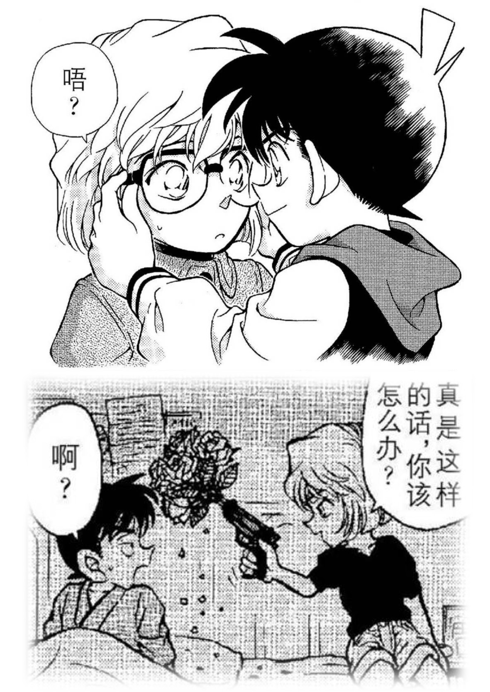
──── ⋆｡°✩ ୨୧ ✩°｡⋆ ────
💝｛C的至宝A的心意｝💝梳理：
初识：
VOL.18 FILE.6—VOL.19 FILE.1
小片段：
VOL.19 FILE.2
无差别事件：
VOL.19 FILE.9—VOL.20 FILE.1
青色古堡事件：
VOL.20 FILE.10—VOL.21 FILE.3
──── ⋆｡°✩ ୨୧ ✩°｡⋆ ────
喜欢的盆友多多点赞、多多评论（厚颜无耻的me）
不喜欢的盆友也可以表达不满或者我有什么可以改进的地方
总之，希望大家多给我些反馈，谢谢🙏🙏🙏
💝｛C的至宝A的心意｝💝梳理：
初识：
VOL.18 FILE.6—VOL.19 FILE.1
小片段：
VOL.19 FILE.2
无差别事件：
VOL.19 FILE.9—VOL.20 FILE.1
青色古堡事件：
VOL.20 FILE.10—VOL.21 FILE.3
──── ⋆｡°✩ ୨୧ ✩°｡⋆ ────
喜欢的盆友多多点赞、多多评论（厚颜无耻的me）
不喜欢的盆友也可以表达不满或者我有什么可以改进的地方
总之，希望大家多给我些反馈，谢谢🙏🙏🙏
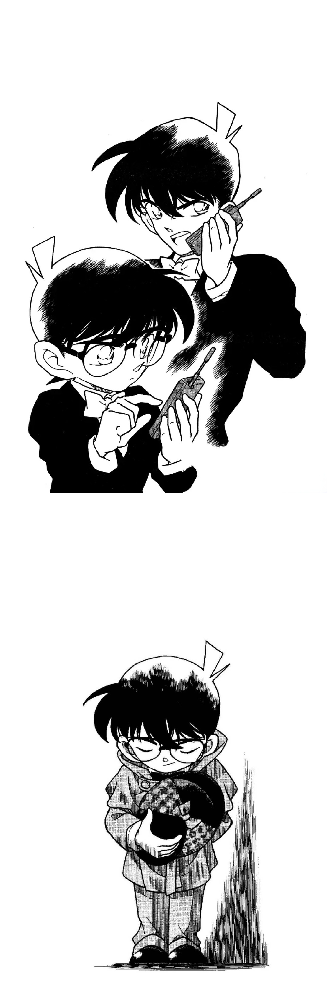
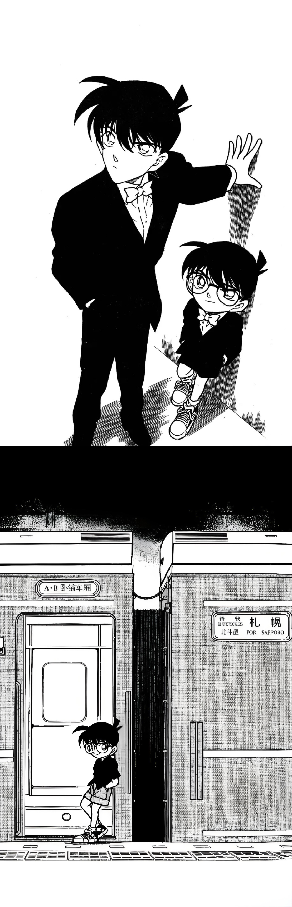
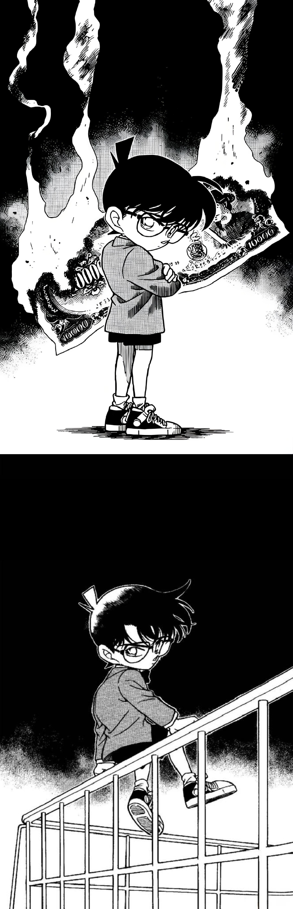
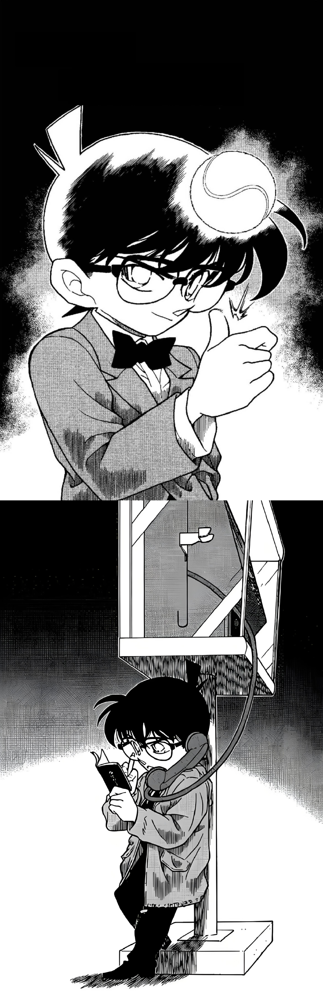
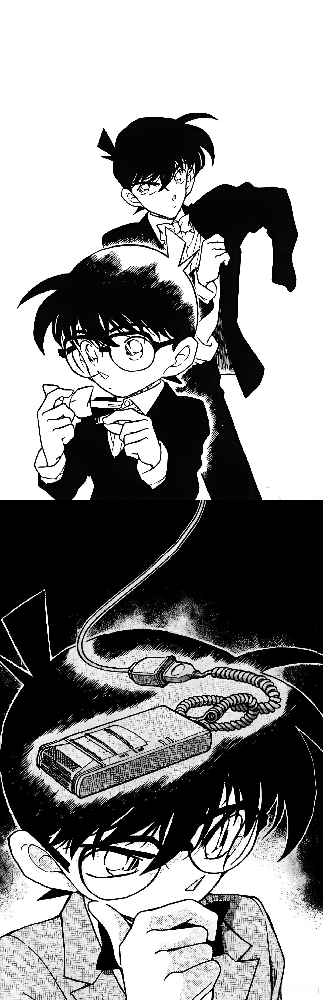
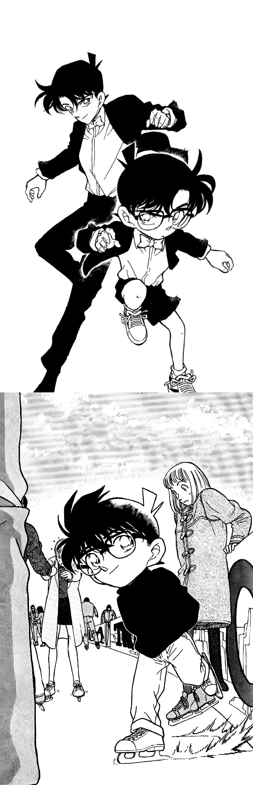
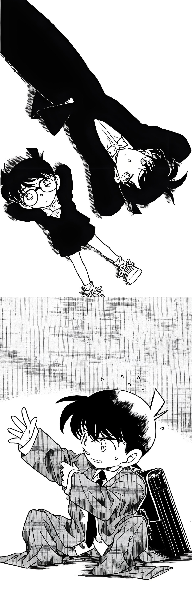
2026-04-07 19:17 | 贝贝171314:依旧不定时更新，依旧请大家如果要评论，不要用侮辱性词汇代称或者形容小兰2026-04-07 22:26 | zha1114265738:回复 贝贝171314 :你也开新帖啊，2026-04-08 06:07 | 贝贝171314:回复 zha1114265738 :不算新帖啦，内容是延续着上次2026-05-31 13:57 | 贝贝171314:初识(一)假钞案：V18F3—V18F8(1️⃣/1～31/1) 初识(二)教授案：V18F9—V19F1(1️⃣/3～5) 小片段：V19F2(1️⃣/5/1&2) 竞技场无差别：V19F9—V20F1(1️⃣/6～8/3&4) 青色古堡：V20F10—V21F3(1️⃣/8～10/4&5) 警恋1柜刀：V21F8—V21F10(2️⃣/2&3/1&2) 最终播映：V23F1—V23F3(2️⃣/6～8/3&4) 新佛尼号小片段：V23F7(2️⃣/8/4) 警恋2美术馆💣：V23F10—V24F2(2️⃣/9&10/5) 再会：V24F7—V24F11(2️⃣/11～13/6&7) 小片段：V25F1(2️⃣/13/7) 危命(一)钟乳石洞：V25F9—V25F11(2️⃣/16&17/8&9) 危命(二)校园祭：V26F1—V26F4(2️⃣/17～19/9&10) 危命(三)瞭望餐厅：V26F5—V26F7(2️⃣/19&20/10)
•V21F4—V21F7
（V指的是Vol，F指的是File，我懒得打英文所以简写）
飞天密室 工藤新一最初的事件
空中密室可以算是危命的铺垫章节壹了，给我们说明了小兰为什么会那么想见小哀
而本身作为新兰第一个回忆，也给我们淋漓尽致地展现了新兰的“原生态”——“三不”不喜欢不理解不尊重，即便没有小哀，没有黑组，新兰也没有可能
（V指的是Vol，F指的是File，我懒得打英文所以简写）
飞天密室 工藤新一最初的事件
空中密室可以算是危命的铺垫章节壹了，给我们说明了小兰为什么会那么想见小哀
而本身作为新兰第一个回忆，也给我们淋漓尽致地展现了新兰的“原生态”——“三不”不喜欢不理解不尊重，即便没有小哀，没有黑组，新兰也没有可能
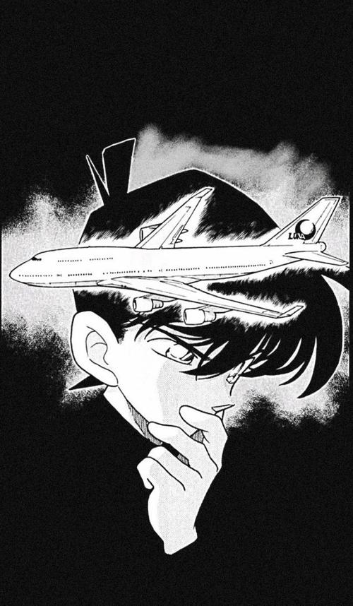
2026-04-07 22:27 | zha1114265738:现实中 认识那么多年对彼此父母还不熟就已经说明问题了2026-04-08 11:45 | 贝贝171314:不想看新兰感情线的可以划到第20楼（网页版还是在第1页，手机版跳转到第2页）
博士感冒，小哀照顾，双双缺席
（老贼不知道是不是受到A药副作用的启发，不想让两个角色那么快见面就让人感冒）
小柯提到博士和小哀时打了个持续性的大哈欠
被哈欠女同化中（偷笑）
“我只是觉得从没听说过你谈学校里的事情”，充分体现了小兰的控制欲MAX和嫉妒心MAX
小哀是小兰唯一一个连柯南的醋都吃的“情敌”
（同理的是瑛佑是小柯唯一一个在小兰“情敌”里既动口也动手的“情敌”）
小兰的直觉是很准的，她虽然没见过小哀，但本能反应到，步美口中这位很可爱的女生会是她将来最大的威胁，所以露出了个想要杀人的犀利眼神，想要管小柯不要再想那个女生
其次，可以看出小兰穿的衣服和小哀初登场穿的衣服很像，两话也正好都是兰哀各自和小柯第一次经历凶案
（老贼不知道是不是受到A药副作用的启发，不想让两个角色那么快见面就让人感冒）
小柯提到博士和小哀时打了个持续性的大哈欠
被哈欠女同化中（偷笑）
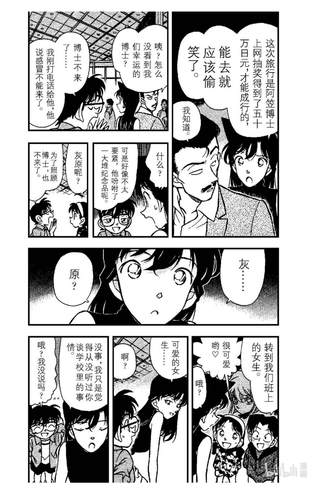
小哀是小兰唯一一个连柯南的醋都吃的“情敌”
（同理的是瑛佑是小柯唯一一个在小兰“情敌”里既动口也动手的“情敌”）
小兰的直觉是很准的，她虽然没见过小哀，但本能反应到，步美口中这位很可爱的女生会是她将来最大的威胁，所以露出了个想要杀人的犀利眼神，想要管小柯不要再想那个女生
其次，可以看出小兰穿的衣服和小哀初登场穿的衣服很像，两话也正好都是兰哀各自和小柯第一次经历凶案
2026-04-07 22:28 | zha1114265738:柯南自己也是个夜猫子 （至少是那种白天能睡到中午的类型）2026-04-07 22:30 | zha1114265738:所以我是认可兰的角是般若的角的2026-04-08 06:12 | 贝贝171314:回复 zha1114265738 :对滴2026-04-22 16:32 | 丑葡萄同学:我虽然感觉说小兰杀人的眼神说的有些过头，但是小兰肯定是有嫉妒心理的，毕竟柯南身边有女生但不告诉自己（而且据小哀登场已经过去好几天了吧但从未听柯南说过）说明柯南有了自己的小心思，你个小孩居然还有我不能知道的秘密我要窥探一下的心理，以至于后面不顾反对和冒犯也要见哀（如果把柯南当做是新一代餐的话感觉也是一种危机意识）2026-04-23 11:47 | 贝贝171314:回复 丑葡萄同学 :感谢指正么么～
小兰对于在她眼中新一的替代品也会有独占欲的，就是她会做一些莫名其妙的事情来彰显她和在她眼中新一的替代品关系是独特的
（比如说对平次不经意的肢体接触与明知道会被误会是情侣依旧下次撞衫，夹胸抱新出医生与清楚他对她没意思却故意让小柯误会吃醋，不知道真纯性别前想要和真纯亲近，偷看冲田护身符，联谊会想要靠近白马探等）
而虽然在V14F4—F8小兰因为有希子的神助攻而打消了怀疑新一的念头，不过“柯南和新一长得很像”
这想法，已经深深驻扎在小兰心里，也因此此后小兰对小柯还是弟弟一样的对待，可有时还是拿小柯当新一的替代品望梅止渴一下
小兰看着小柯笑得很憧憬的表情，她这个找替代品的行为，让大叔疑惑了一下
（比如说对平次不经意的肢体接触与明知道会被误会是情侣依旧下次撞衫，夹胸抱新出医生与清楚他对她没意思却故意让小柯误会吃醋，不知道真纯性别前想要和真纯亲近，偷看冲田护身符，联谊会想要靠近白马探等）
而虽然在V14F4—F8小兰因为有希子的神助攻而打消了怀疑新一的念头，不过“柯南和新一长得很像”
这想法，已经深深驻扎在小兰心里，也因此此后小兰对小柯还是弟弟一样的对待，可有时还是拿小柯当新一的替代品望梅止渴一下
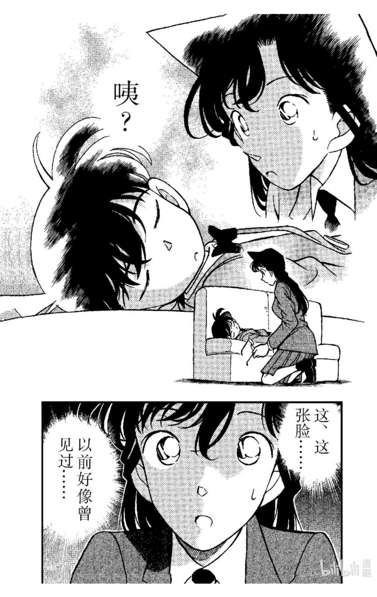
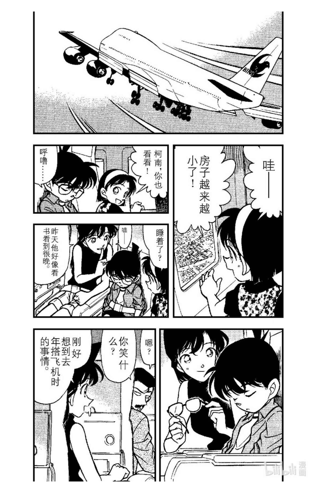
2026-04-07 22:32 | zha1114265738:死罗神那她发现“新一”靠不住了后 立刻就开始寻找她心中那个更像的替代品柯南了
大叔坏印象+1
小兰澄清了自己不是与新一去私奔的，但对于新一有没有对她做出不好的事情的问题时却一声不吭，反而借着反问+睡觉转移大叔的注意力，说好听点是她不了解新一，不清楚新一的为人，说难听点是她不尊重新一，自己的清白重要，但新一的清白在他眼里一文不值
（在园子和妃英理面前不澄清道理相同）
小兰澄清了自己不是与新一去私奔的，但对于新一有没有对她做出不好的事情的问题时却一声不吭，反而借着反问+睡觉转移大叔的注意力，说好听点是她不了解新一，不清楚新一的为人，说难听点是她不尊重新一，自己的清白重要，但新一的清白在他眼里一文不值
（在园子和妃英理面前不澄清道理相同）
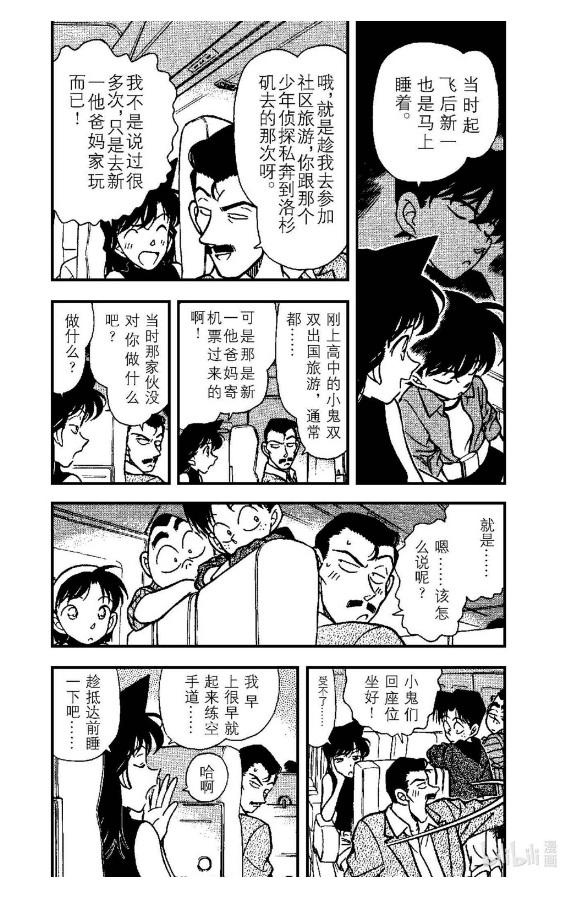
新兰回忆一上来就表达了新兰的“错位”
小兰想要把小柯叫醒，然而小柯已经在案发现场了（“错位”一）
空姐大叫的时候小柯立马警觉，然而至少听到“有尸体”小兰才迷迷糊糊醒过来，结果也是个懵B状态（“错位”二）
小兰想要把小柯叫醒，然而小柯已经在案发现场了（“错位”一）
空姐大叫的时候小柯立马警觉，然而至少听到“有尸体”小兰才迷迷糊糊醒过来，结果也是个懵B状态（“错位”二）
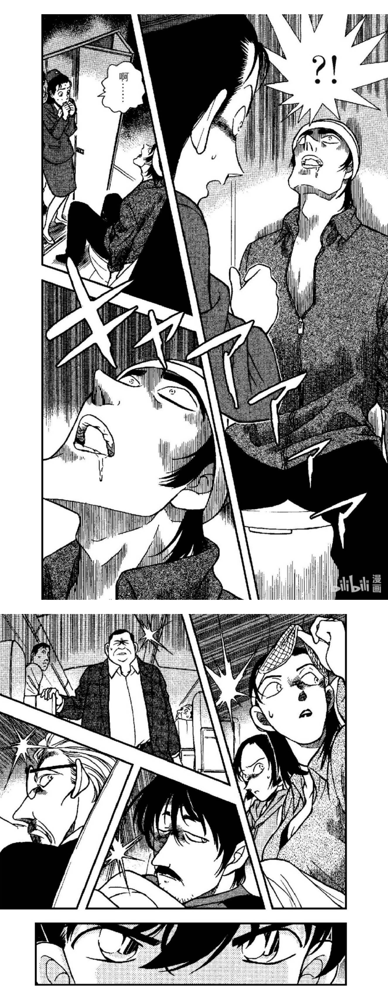
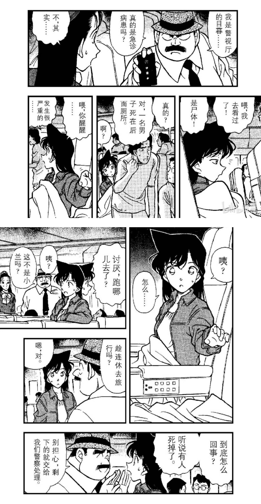
之前也说了空中密室回忆前的小兰穿着和假钞案&教授案小哀相似的衣服，那肯定两话间会有对比
第一个对比就是同样是不理解（小兰get不到小柯的推理，小哀之前不理解小柯为什么一定要把案件的真相搞透），同样被小柯震慑到了，小哀是一个深邃的表情，后面也表示自己被小柯那股劲儿吸引，小兰则是纯一个脸红
同样是不理解（小兰get不到小柯的推理，小柯之前吼小哀是杀人犯），同样内心旁白，教授案最后小柯表示他第一次看到了小哀真实的模样，开始明白他之前误会了小哀，小兰则是简单一句“也就是新一第一个办的案子”概括了空中密室
第一个对比就是同样是不理解（小兰get不到小柯的推理，小哀之前不理解小柯为什么一定要把案件的真相搞透），同样被小柯震慑到了，小哀是一个深邃的表情，后面也表示自己被小柯那股劲儿吸引，小兰则是纯一个脸红
同样是不理解（小兰get不到小柯的推理，小柯之前吼小哀是杀人犯），同样内心旁白，教授案最后小柯表示他第一次看到了小哀真实的模样，开始明白他之前误会了小哀，小兰则是简单一句“也就是新一第一个办的案子”概括了空中密室
同样是不信任小柯，目暮警官跟小柯上次见面小柯还是豆丁版新一，而小兰是和小柯朝夕相处十几年
目暮警官也没有打断小柯的推理，不让小柯说完（小兰没有预兆地突然拉过小柯前，目暮警官还主动问了小柯一句）
同时同样是说小柯“装侦探”，目暮警官对于小柯的洞察能力和分析能力还是给了肯定的，他只是觉得小柯经验不足，小兰则是全方位否定小柯
（而且后面目暮警官非常和小柯交好信赖的时候，小兰依旧是不信任不喜欢的态度）
目暮警官也没有打断小柯的推理，不让小柯说完（小兰没有预兆地突然拉过小柯前，目暮警官还主动问了小柯一句）
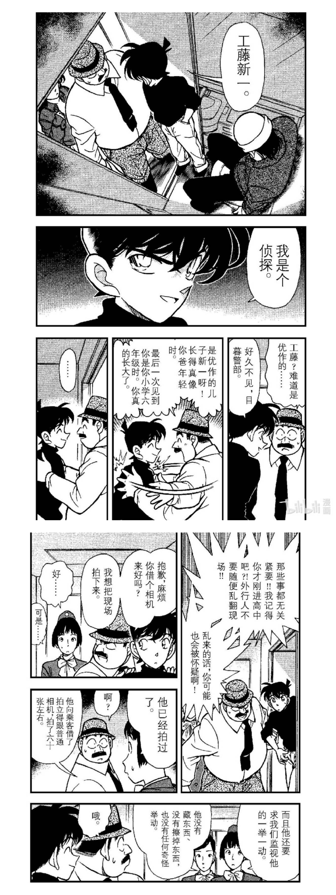
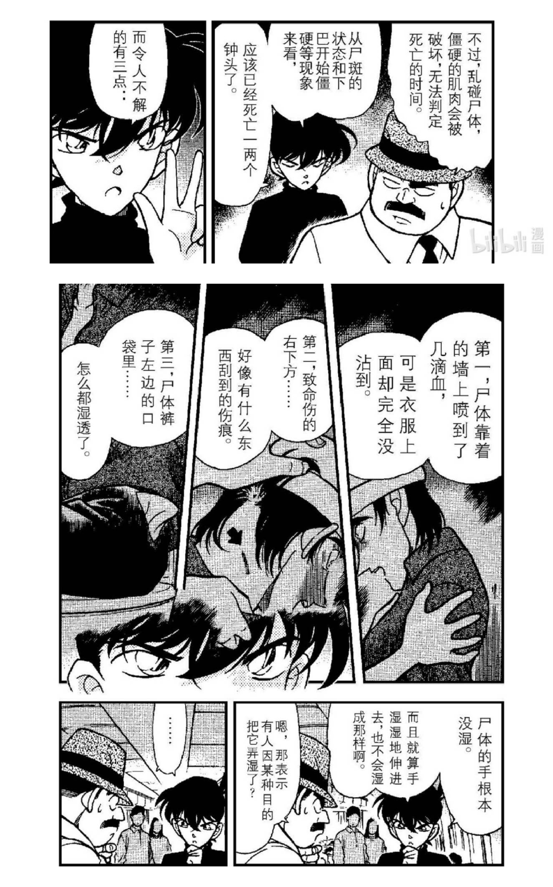
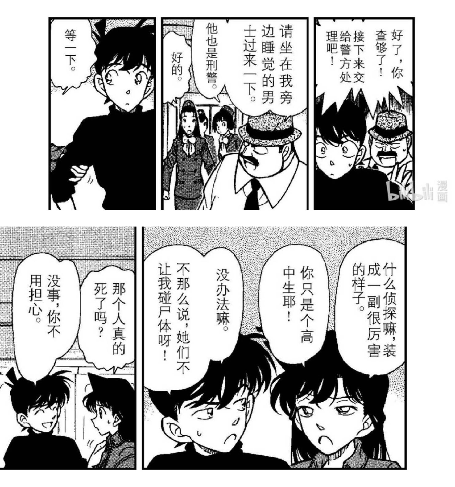
（而且后面目暮警官非常和小柯交好信赖的时候，小兰依旧是不信任不喜欢的态度）
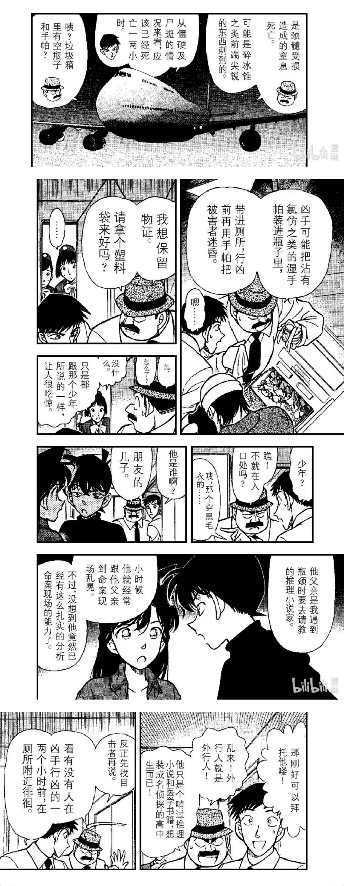
2026-04-17 10:31 | h317z:诶，原著漫画飞天密室里的高木竟然和动画早期是一个画风？ 莫非在老贼的设定里，高木在这一年时间里经历了什么导致发型塌了？2026-04-19 18:48 | 贝贝171314:回复 h317z :打工人日益操劳导致的脱发（bushi）
正常人听到小柯的这段推理反应应该是惊讶，小兰反应却是问小柯怎么不睡觉
（新兰两个人的不同频）
再者，我们可以观察到新兰两个人对玩笑的态度：小柯知道小兰没有恶意，只是管不住嘴，所以在听到小兰“和婴儿有什么区别”时“呵呵”一笑了之；同样是睡着的评价，小兰则是对小柯“一脸呆相”破防，她是真的不知道，还是说就是觉得小柯有恶意？！！！（她就没有想到一种可能，小柯是既“没事，你不用担心”后想用调侃斗嘴的方式转移小兰注意力，用行为再次给予小兰“你不用怕”？）
这两段小兰的表现be like樱花班新兰初遇时的“爱哭鬼”，小兰十几年下来，真的0成长
（新兰两个人的不同频）
再者，我们可以观察到新兰两个人对玩笑的态度：小柯知道小兰没有恶意，只是管不住嘴，所以在听到小兰“和婴儿有什么区别”时“呵呵”一笑了之；同样是睡着的评价，小兰则是对小柯“一脸呆相”破防，她是真的不知道，还是说就是觉得小柯有恶意？！！！（她就没有想到一种可能，小柯是既“没事，你不用担心”后想用调侃斗嘴的方式转移小兰注意力，用行为再次给予小兰“你不用怕”？）
这两段小兰的表现be like樱花班新兰初遇时的“爱哭鬼”，小兰十几年下来，真的0成长
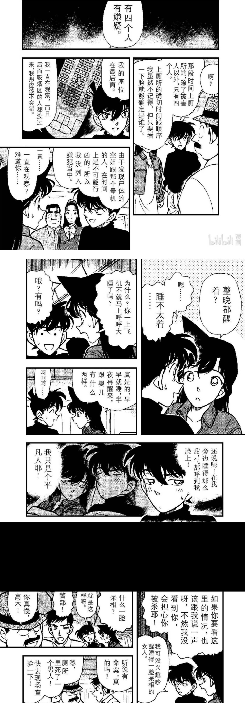
2026-04-07 22:36 | zha1114265738:后面还越来越倒退了
“我只是个平凡人耶”这句话真的就是小柯在新兰关系里“悲剧”的真实写照
（这里提了一下小兰过于“神化”新一这点）
而且后面在电影院小哀也是向小柯偏着头睡觉（甚至靠在小柯肩膀上），小柯也脸红了，但小柯没有觉得小哀的呼吸碍事
（这里提了一下小兰过于“神化”新一这点）
而且后面在电影院小哀也是向小柯偏着头睡觉（甚至靠在小柯肩膀上），小柯也脸红了，但小柯没有觉得小哀的呼吸碍事
2026-04-22 16:44 | 丑葡萄同学:不如说在柯南宇宙里，众人都是优先以解决案件与危机为主，恋爱为辅（都是当案件与危机解除时在谈感情）。只有小兰一个人可以在任意情况都在唱独角爱情戏。小兰大部分情况就是在喜欢推理的小世界里的外人（她只有“啊”或者提供简单信息就没她什么事了）
搜查过程不讲那么仔细
小柯的语言能力MAX
小柯的语言能力MAX
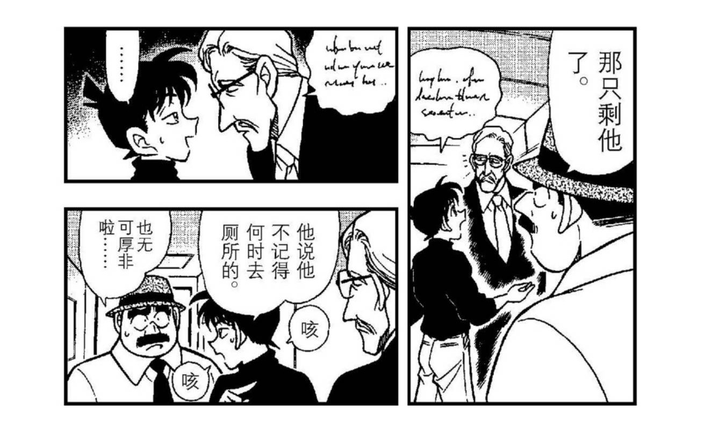
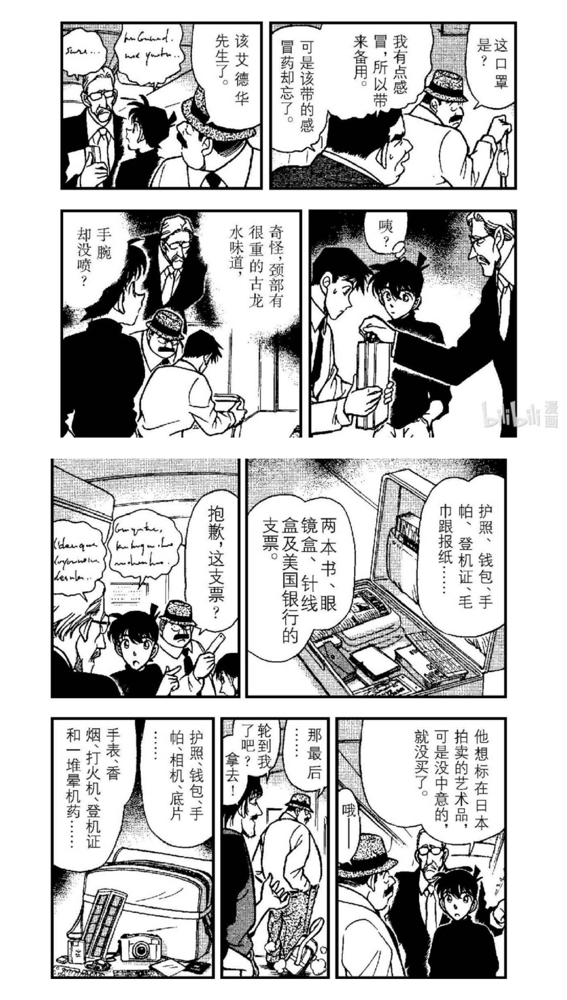
2026-04-07 22:37 | zha1114265738:话说他们打火机让上飞机啊2026-04-08 06:13 | 贝贝171314:回复 zha1114265738 :我没出过国，不清楚
再一个教授案和空中密室的对比
小哀在教授案公然质疑小柯，反而顺水推舟帮了小柯一把；小兰空中密室虽然表面上是站在小柯这一边，但吃到脏东西般的表情和“你得弄清楚哦”“要不要我帮你说两句啊”表明对小柯没有底气，更甚者比几个嫌犯和当时的目暮警官都不如，那两句话明着是善意提醒好心帮忙，其实是在暗戳戳打碎小柯的信心，干扰小柯的思路（还好小柯没有理小兰）
小哀在教授案公然质疑小柯，反而顺水推舟帮了小柯一把；小兰空中密室虽然表面上是站在小柯这一边，但吃到脏东西般的表情和“你得弄清楚哦”“要不要我帮你说两句啊”表明对小柯没有底气，更甚者比几个嫌犯和当时的目暮警官都不如，那两句话明着是善意提醒好心帮忙，其实是在暗戳戳打碎小柯的信心，干扰小柯的思路（还好小柯没有理小兰）
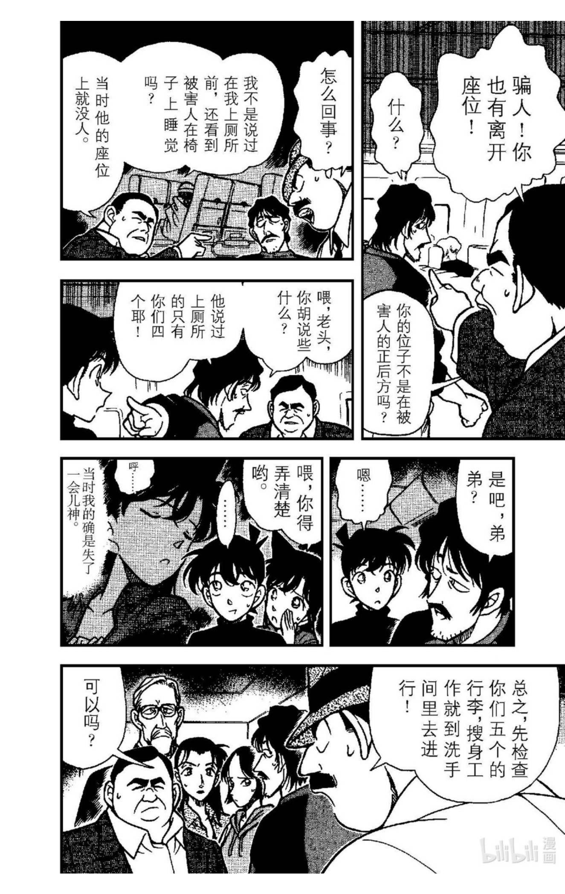
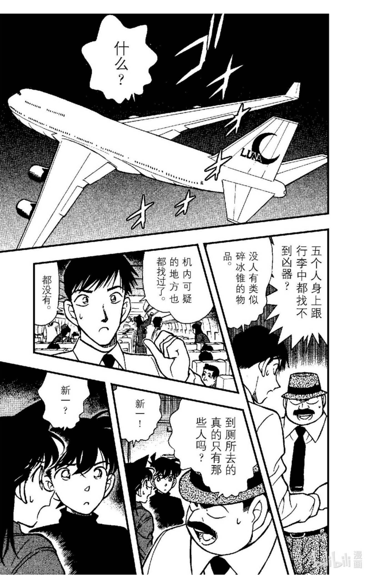
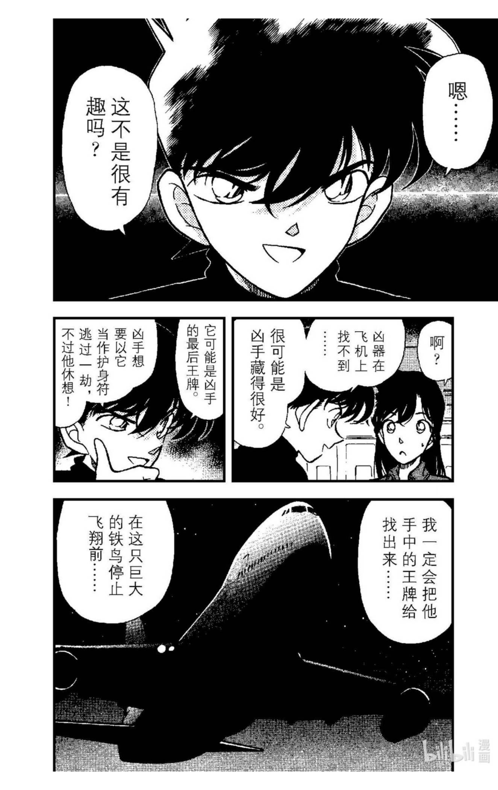
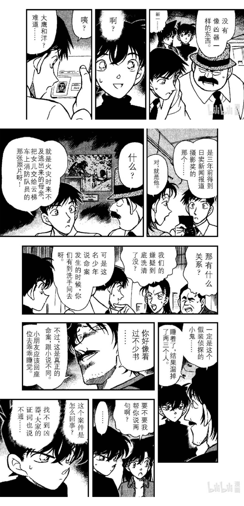
2026-04-07 22:39 | zha1114265738:兰她我一直没想明白 她神化新一 想要他永远靠得住 但确不喜欢他靠得住的点 她想要的到底是什么2026-04-08 07:08 | 贝贝171314:回复 zha1114265738 :小兰想要什么，这就不得不提新兰的类比父女论了，大叔从小兰小的时候就不靠谱，所以小兰缺少父爱带来的踏实感，新一为了小兰挺身而出，那一刻小兰找到了依赖感（江舟之前的计谋能成功一半是因为小兰在小柯没出现前他就是那个“父亲”，小兰看不到江舟是想毒茶她，她只看到了江舟对她百分之百的照顾和保护）大叔离婚后更是放飞自我，把原本不属于小兰的照顾家里包揽所有家政的任务扔给小兰，但小兰她不仅遗传了大叔的惰性，她自身的内核也非常脆弱，小兰就越发渴望“超级爸爸”，越发把压力和责任抛给新一，越发想要在新一面前当个不在大叔面前还得思索怎么办，不考虑任何，只要哭闹就有糖吃的熊孩子2026-04-08 07:21 | 贝贝171314:回复 zha1114265738 :小兰想要什么，她想要新一带给她的依赖感、虚荣感（之前也有略微提过）和一种想要完成和新一在一起的执念（这个是小兰的控制欲和独占欲，混合着依赖感和虚弱感的超级叠加），这三样都和小柯的外在息息相关，但内在无关
搜查结束，小柯灵机一动，但再次被小兰拉住
（新兰经历的第一个凶案，日子也算是很有纪念意义的，可小兰当天两次拦截梦想是大侦探的他查案）
小柯调侃想要增进感情的时候小兰get不到，小柯认真工作的时候小兰满脑子粉红泡泡
（这段和结局呼应，空中密室结尾详谈）
（新兰经历的第一个凶案，日子也算是很有纪念意义的，可小兰当天两次拦截梦想是大侦探的他查案）
小柯调侃想要增进感情的时候小兰get不到，小柯认真工作的时候小兰满脑子粉红泡泡
（这段和结局呼应，空中密室结尾详谈）
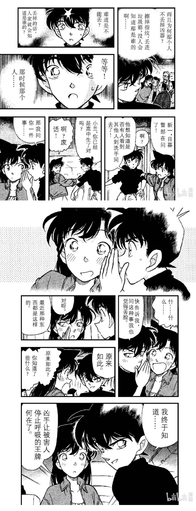
小柯show time，小兰依旧懵懵懂懂的，她看不出小柯帅气自信的笑容的背后是对案情明朗的了然于心
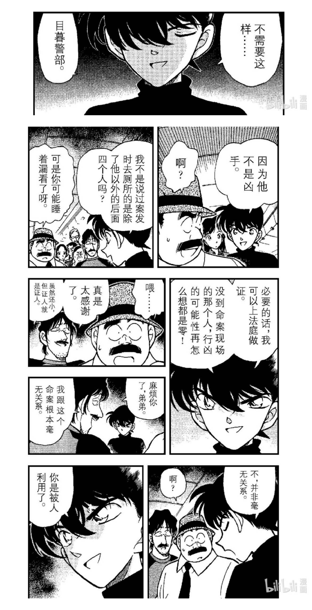
记录又帅气又自信的小柯 Σ>―(〃°ω°〃)♡→
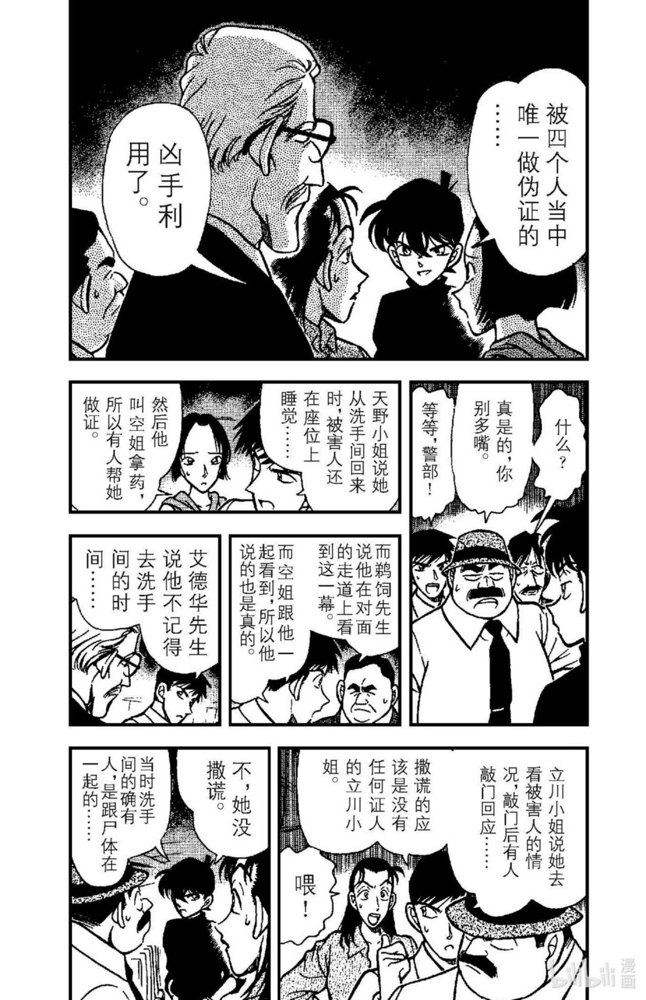
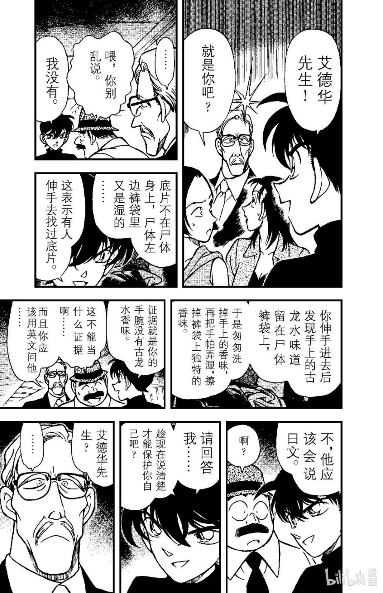
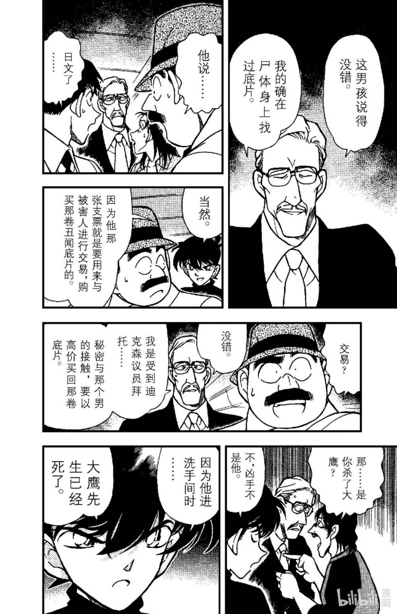
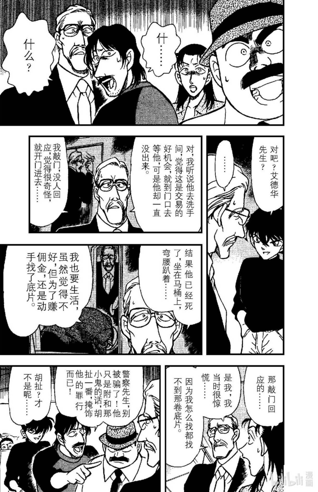
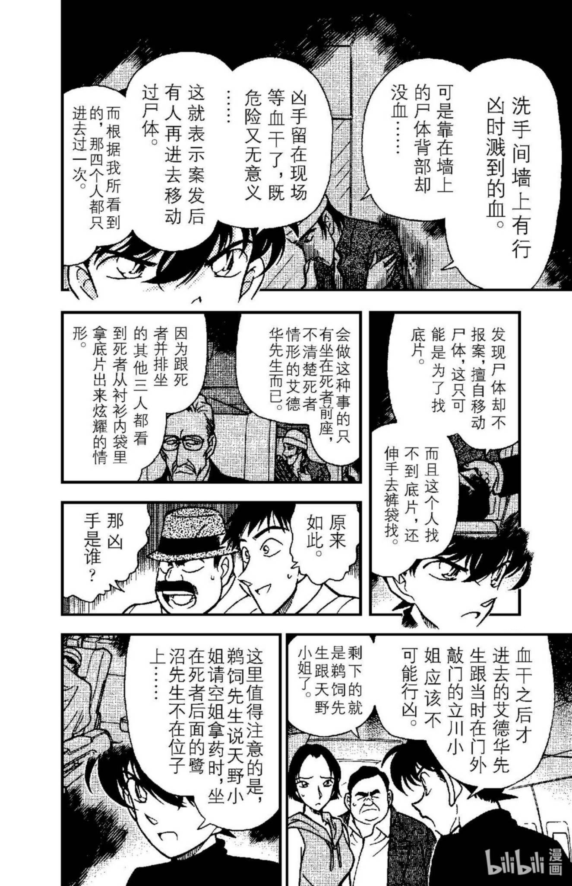
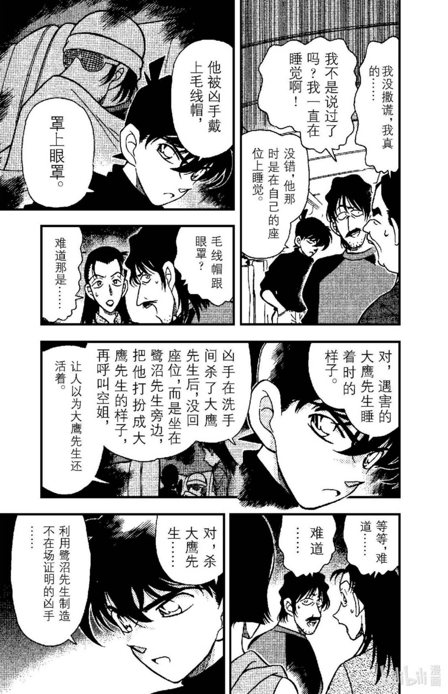
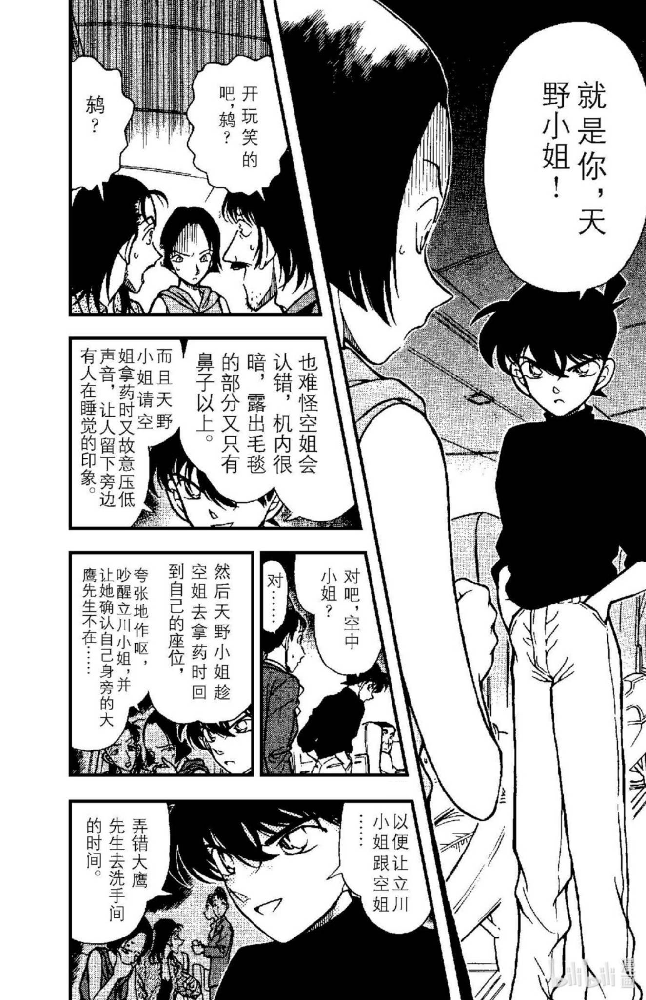
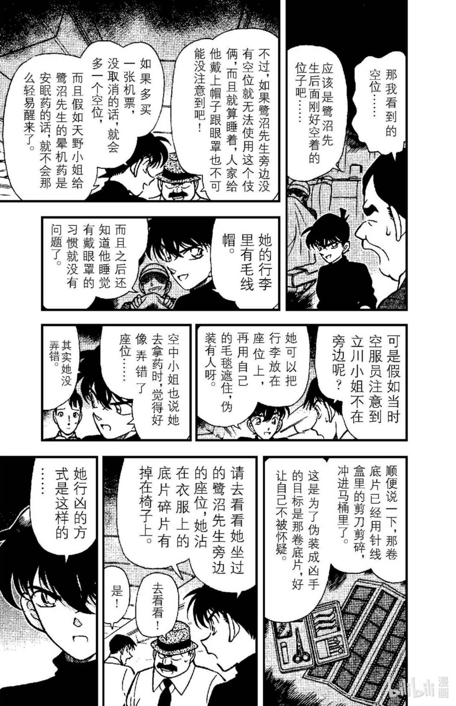
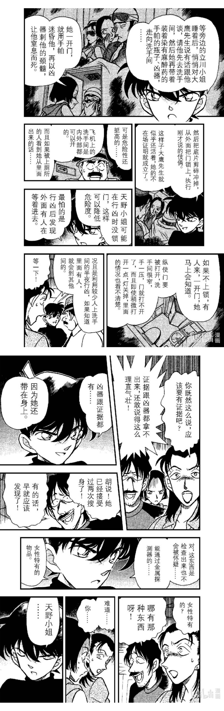
小兰内衣内裤冥场面+1
大叔坏印象+2
一段好的关系是让双方都变得更好，但小兰总是让身边人误会新一——她想着让他们的距离变短，但一直都想要让新一停在原地甚至退步而不是自己往上行往前走
其一：
小柯这句让小兰再次脸红的话的重点是“往往容易忽视的细枝末节才是特别重要的”，而小兰是怎么想的呢？和小柯说的截然相反，她忽略了所有细节，只想到了那句“原来如此”是小柯因为她的话确定了凶器
但这不是只要稍微了解一点点小柯的性格就能立马想到的吗？
其二：
小兰可以说小柯那么理直白问女生的贴身衣物会让她产生不适感，可以说他情商低，但一上来就把性骚扰这个罪名发给小柯，真的过了
（我怀疑小兰又选择性遗忘小柯的那句“问这种事情我也觉得丢脸”）
其三：
一切的起源——要不是小兰拉住了小柯，小柯都不会问她这个问题
大叔坏印象+2
一段好的关系是让双方都变得更好，但小兰总是让身边人误会新一——她想着让他们的距离变短，但一直都想要让新一停在原地甚至退步而不是自己往上行往前走
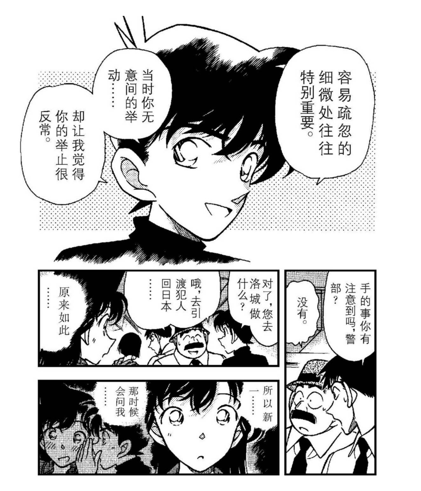
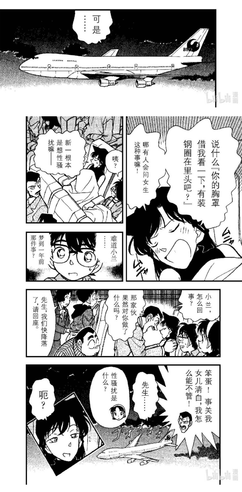
小柯这句让小兰再次脸红的话的重点是“往往容易忽视的细枝末节才是特别重要的”，而小兰是怎么想的呢？和小柯说的截然相反，她忽略了所有细节，只想到了那句“原来如此”是小柯因为她的话确定了凶器
但这不是只要稍微了解一点点小柯的性格就能立马想到的吗？
其二：
小兰可以说小柯那么理直白问女生的贴身衣物会让她产生不适感，可以说他情商低，但一上来就把性骚扰这个罪名发给小柯，真的过了
（我怀疑小兰又选择性遗忘小柯的那句“问这种事情我也觉得丢脸”）
其三：
一切的起源——要不是小兰拉住了小柯，小柯都不会问她这个问题
“埋藏在内心深处”我个人感觉也在说新兰，因为虽然做梦说梦话不是我们可以预估的，但无意间的梦话往往代表着我们内心的真实想法
小兰在她和新一经历的第一个凶案中，藏在她内心深处，有印象的不是小柯的六段式推理，也不是小柯离他的梦想迈出了成功的第一步，而是内衣这个在她心里解除误会但实际上根本还是误解的剧情
甚至在她内心深处，她就认定小柯是个猥琐的人（小柯虽然好色，但离猥琐差几十条街的距离）
小兰不喜欢小柯的侦探推理，不理解小柯的性格言行，不尊重小柯的人格操守
小兰在她和新一经历的第一个凶案中，藏在她内心深处，有印象的不是小柯的六段式推理，也不是小柯离他的梦想迈出了成功的第一步，而是内衣这个在她心里解除误会但实际上根本还是误解的剧情
甚至在她内心深处，她就认定小柯是个猥琐的人（小柯虽然好色，但离猥琐差几十条街的距离）
小兰不喜欢小柯的侦探推理，不理解小柯的性格言行，不尊重小柯的人格操守
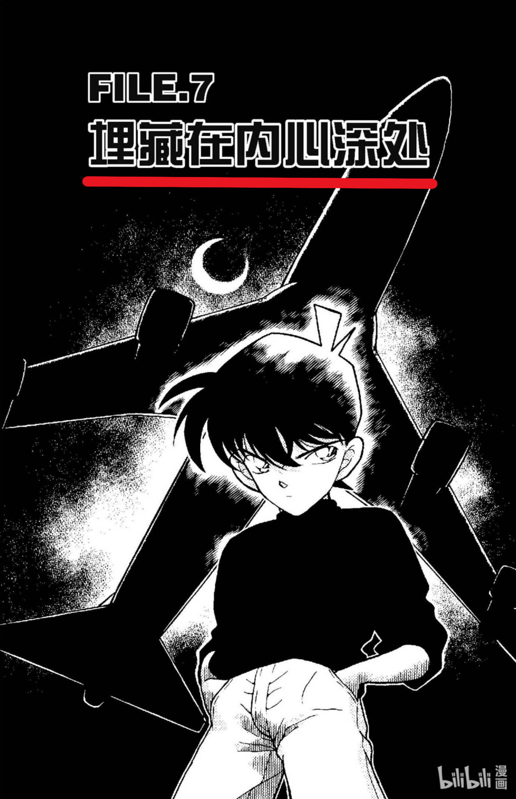
*•V21F8—V21F10『髙佐壹』
（高木警官和佐藤警官之前有客串登场，但在本厅刑事恋爱物语1，也就是柜刀杀人事件才正式出场并和小柯相熟；白鸟警官在M1出场，但M1不计入名柯正轨且人设和M1有些出入）
高佐，作为又一位短发御姐和她的年下弟弟，男治愈女、从并肩作战到携手余生的情侣，名柯唯一一对老司机（bushi），他们证明了感情不是看早晚和长度，而是看浓度和厚度
在感情变化上，佐对应柯，高对应哀：
佐藤警官映射了小柯爱而不自知的迟钝，从纯战友情到一次次在以为要失去高木警官的经历中慢慢爱上到在大三角拉扯中意识到了自己的情感
高木警官映射了小哀克制的爱，在佐藤警官表明爱意前，他不觉得佐藤警官会喜欢自己
在感情羁绊上，佐对应哀，高对应柯：
高木警官和小柯一样先动了情，随后在两个人相处中逐步知道了佐藤警官与果断的外表下不一样的细腻敏感的心以及她悲伤的过去跟遗憾，心疼怜惜，想要“救”佐藤警官走出阴影
佐藤警官和小哀一样，依靠身边最亲密的人，更是自己下了很大的决心，不忘过去和伤痛，但积极往前走下去
（高木警官和佐藤警官之前有客串登场，但在本厅刑事恋爱物语1，也就是柜刀杀人事件才正式出场并和小柯相熟；白鸟警官在M1出场，但M1不计入名柯正轨且人设和M1有些出入）
高佐，作为又一位短发御姐和她的年下弟弟，男治愈女、从并肩作战到携手余生的情侣，名柯唯一一对老司机（bushi），他们证明了感情不是看早晚和长度，而是看浓度和厚度
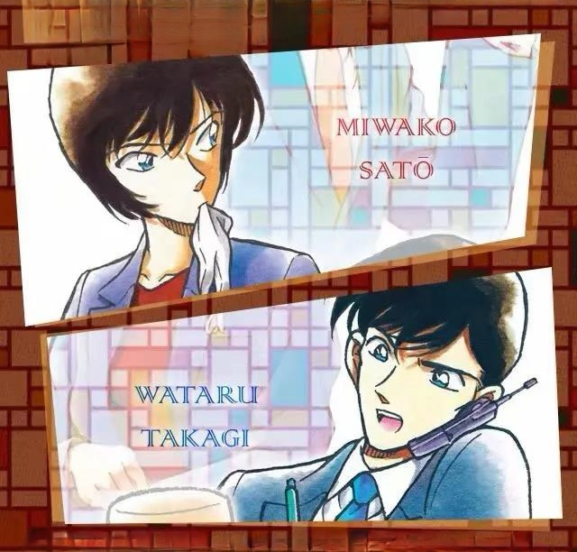
佐藤警官映射了小柯爱而不自知的迟钝，从纯战友情到一次次在以为要失去高木警官的经历中慢慢爱上到在大三角拉扯中意识到了自己的情感
高木警官映射了小哀克制的爱，在佐藤警官表明爱意前，他不觉得佐藤警官会喜欢自己
在感情羁绊上，佐对应哀，高对应柯：
高木警官和小柯一样先动了情，随后在两个人相处中逐步知道了佐藤警官与果断的外表下不一样的细腻敏感的心以及她悲伤的过去跟遗憾，心疼怜惜，想要“救”佐藤警官走出阴影
佐藤警官和小哀一样，依靠身边最亲密的人，更是自己下了很大的决心，不忘过去和伤痛，但积极往前走下去
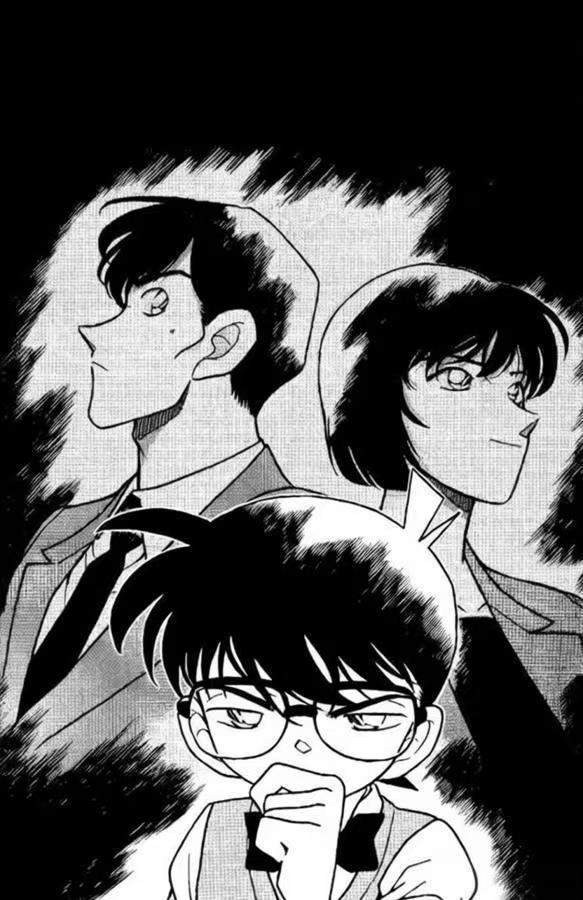
2026-04-07 22:44 | zha1114265738:设定上也近一个有短信定情 一个有一段感情还都进水去拿过戒指2026-04-08 06:15 | 贝贝171314:回复 zha1114265738 :不止，相似的名场面可以做一个视频了
案件的开始始于少侦为青色古堡事件做笔录
小哀一想到青色古堡，就想到开头两个人心潮澎湃的对视，结局看到小柯平安无事后松了口气的感觉……小哀开始正视了自己对小柯情感的变化，也第一次想要和小柯保持距离
（所以从这里到最终播映杀人事件的开头，柯哀基本上0互动）
以下是我没有依据的纯yy：
我个人认为既然三小会向小兰介绍小哀，那在之前的日常里他们和小哀讲少侦之前一起经历的案件时势必会随口提一两句小兰，小兰在外面一直都是热情温柔的形象（就连园子都不知道小兰确实外热内有些冷），再加上“当局者迷”，小哀会顺势以为小兰对新一的“默默等待”和自己对小柯的默默关注是一样的，所以才有了危命篇她高估小兰的那段话
小哀青色古堡结局尊重柯步，她以为小兰也很好，再加上小柯一直表示自己很爱小兰，所以她会因为尊重新兰而开始和小柯保持距离（也是怕自己对小柯的感情越陷越深）
小哀想要回去，小柯不让，本来懒洋洋的听到小哀一句话后瞬间“醒”了（偷笑）
博士挽留是因为他现在是小哀的监护人，小哀的家人，小柯你为什么也反应那么大，也是小哀与众不同的身边人吗？
小哀一想到青色古堡，就想到开头两个人心潮澎湃的对视，结局看到小柯平安无事后松了口气的感觉……小哀开始正视了自己对小柯情感的变化，也第一次想要和小柯保持距离
（所以从这里到最终播映杀人事件的开头，柯哀基本上0互动）
以下是我没有依据的纯yy：
我个人认为既然三小会向小兰介绍小哀，那在之前的日常里他们和小哀讲少侦之前一起经历的案件时势必会随口提一两句小兰，小兰在外面一直都是热情温柔的形象（就连园子都不知道小兰确实外热内有些冷），再加上“当局者迷”，小哀会顺势以为小兰对新一的“默默等待”和自己对小柯的默默关注是一样的，所以才有了危命篇她高估小兰的那段话
小哀青色古堡结局尊重柯步，她以为小兰也很好，再加上小柯一直表示自己很爱小兰，所以她会因为尊重新兰而开始和小柯保持距离（也是怕自己对小柯的感情越陷越深）
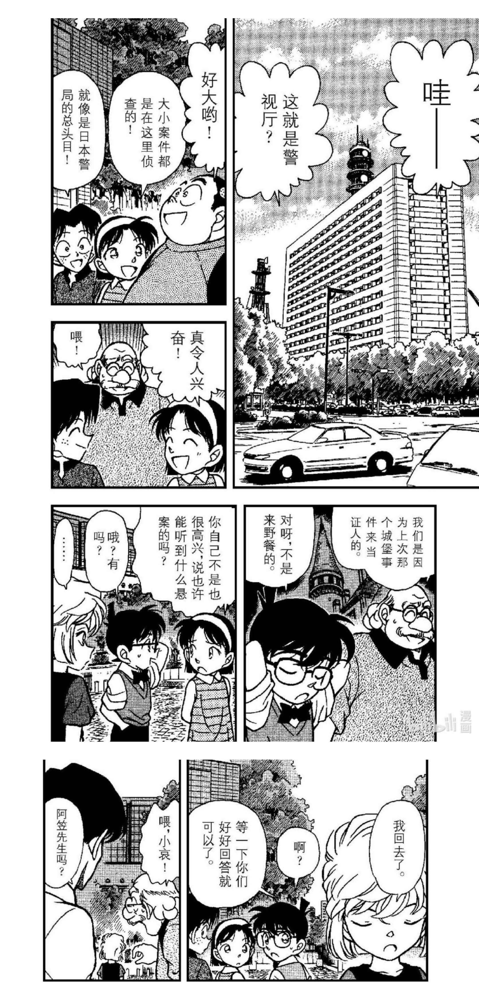
博士挽留是因为他现在是小哀的监护人，小哀的家人，小柯你为什么也反应那么大，也是小哀与众不同的身边人吗？
2026-04-07 22:46 | zha1114265738:他俩就是一个挑逗 一个心动 结果挑逗那个怂了后 心动那个开始了2026-04-08 07:17 | 贝贝171314:后面挑逗那个那个想面对了 中间插人了 又有点急了
回复 zha1114265738 :就是这样2026-04-08 10:02 | 贝贝171314:回复 zha1114265738 :顺带一提，本来我是想说“小柯你为什么也反应那么大，也是小哀的家人吗”，但怕有些人被sr的“柯哀亲戚论”搞怕了——但我个人认为，关系稳定的挚友和爱侣，就是自己选择的家人2026-04-08 10:38 | zha1114265738:回复 贝贝171314 :太对了
小哀说回去是这样说，但结果还是跟着进了警局，小柯又开心了（偷笑）
一起默默参观的柯哀，认真询问的博士，想多了的三小
目暮绿这里的客串也有点意思，因为在案子里受伤了，刺激了目暮警官，爆发了目暮警官的潜能（小哀也总是激发小柯的小宇宙）
一起默默参观的柯哀，认真询问的博士，想多了的三小
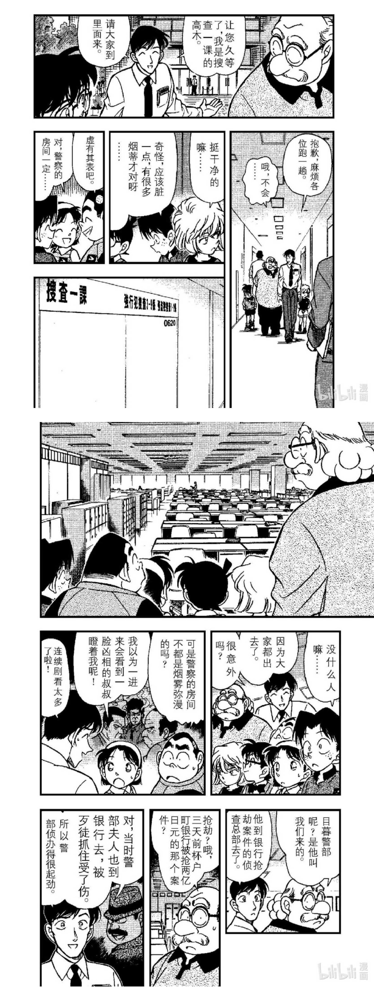
）2026-04-08 13:27 | zha1114265738:三小只是在观察环境 博士是想解决事情 就柯哀不知道在在看什么2026-04-22 16:58 | 丑葡萄同学:题外话：步美说的话某种程度上没毛病，不过是针对高木的哈哈
「红娘少年团」初见端倪
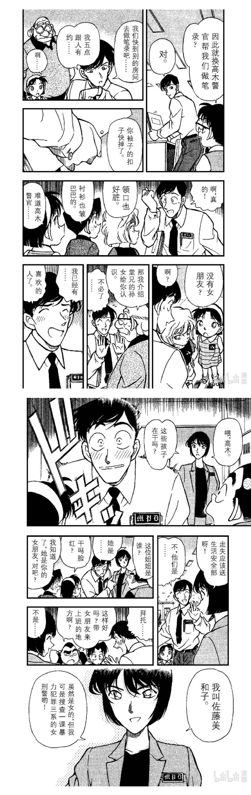
2026-04-08 10:17 | 贝贝171314:想要看佐藤警官飒爽的自我介绍请点开图
佐藤警官和少侦一见面就对他们有亲切感
高木警官和小哀一样，被佐藤警官身上正义凛然的赤子心所吸引，然后喜欢上
高木警官和小哀一样，被佐藤警官身上正义凛然的赤子心所吸引，然后喜欢上
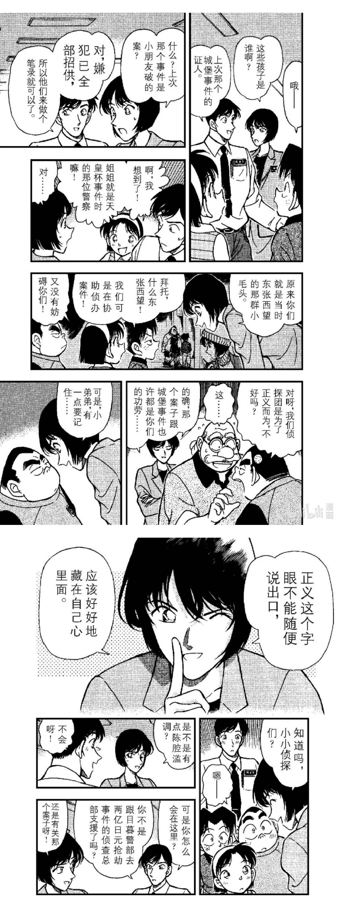
双鲨的默契：
（已经是柯哀的常规操作了，可因为前一话是空中密室，所以更加突出）
一听到案情就立马警觉的两个人
“三次…那个人看表的次数…”
“未免太多了吧”
柯哀同时对增尾桂造起疑，连逻辑思维都一样
对案件的灵敏度同频的两个人
小哀虽然嘴上说的不知道小柯在哪里，可是看神色分明已经猜到小柯会跟着高佐去破案
（已经是柯哀的常规操作了，可因为前一话是空中密室，所以更加突出）
一听到案情就立马警觉的两个人
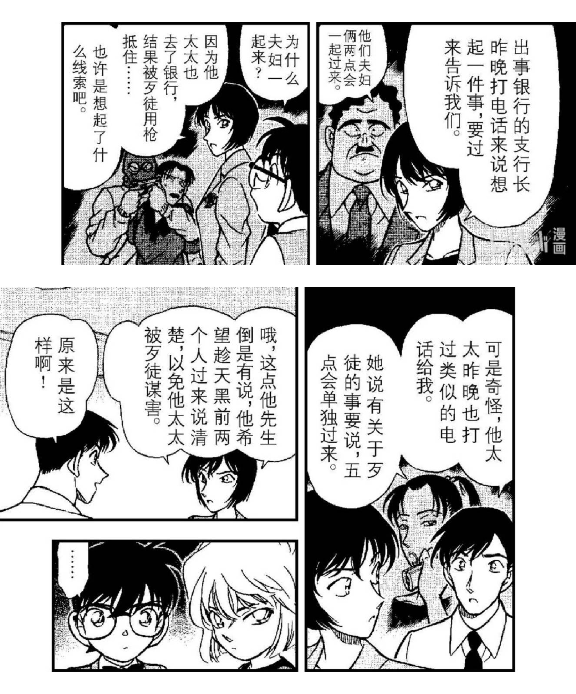
“未免太多了吧”
柯哀同时对增尾桂造起疑，连逻辑思维都一样
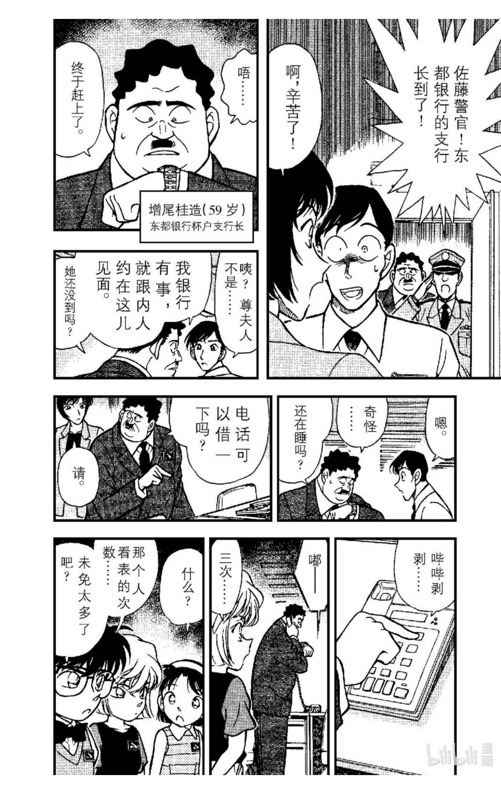
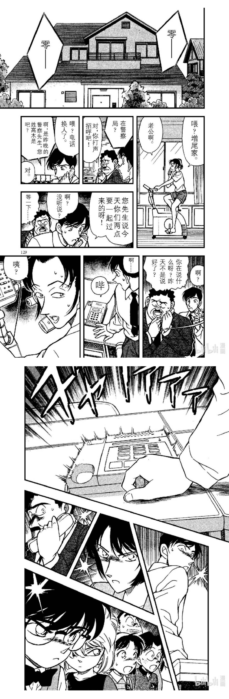
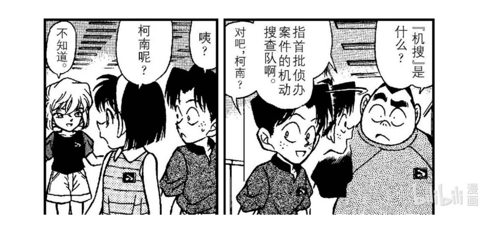
2026-04-08 10:37 | 贝贝171314:图三也请大家点开图2026-04-08 13:33 | zha1114265738:搞不好她就是故意留下来稳住三小的2026-04-08 13:40 | 贝贝171314:回复 zha1114265738 :也有可能，当时大家都以为是悍匪
佐藤警官的车技初见端倪
高佐一个唱黑脸一个唱白脸，但身为高佐外的第三者，以及沉浸在推理无法自拔的小柯没明白
（柯哀的密语时刻也是，甚至于博士和三小都get不到）
（柯哀的密语时刻也是，甚至于博士和三小都get不到）
小柯虽然还没推理出凶手作案过程，但一看到案发现场就察觉出真相
2026-04-08 13:34 | zha1114265738:这个罪犯话太密了2026-04-08 13:43 | 贝贝171314:回复 zha1114265738 :戏太过了😂
高佐第一次见小柯，小柯还没有大展拳脚前，他们就无比信任他
2026-04-08 13:37 | zha1114265738:信任加主动性 是柯南认可的关键 到32卷主动性也加上了
白鸟警官出场后，高木警官开始胡思乱想（偷笑）
看小柯这无语的半月眼 hhh(ᐢ⸝⸝ᴖ ·̫ ᴖ⸝⸝ᐢ)hhh
看小柯这无语的半月眼 hhh(ᐢ⸝⸝ᴖ ·̫ ᴖ⸝⸝ᐢ)hhh
高佐虽然思考方向不同，但得出的结论一样
高佐白在小柯的带领下破了案
（有白鸟的部分，可因为图片上限是九图，我懒得拼，所以没展示出来）
（有白鸟的部分，可因为图片上限是九图，我懒得拼，所以没展示出来）
高佐第一次见小柯，他们就和他配合无间
萌萌的小柯
以及就连有些高傲的白鸟警官，在看到小柯的推理后，也承认小柯的能力
以及就连有些高傲的白鸟警官，在看到小柯的推理后，也承认小柯的能力
2026-04-08 13:48 | zha1114265738:白鸟这画的有点不爽的感觉2026-04-08 15:00 | 贝贝171314:回复 zha1114265738 :优越的家境、精英的教育背景和可以算是坦顺的仕途让白鸟警官形成了自恃清高的性格，是会不服气的（推理上就比如这次柜刀杀人事件高佐轮番劝说还有些疑点但他依旧是那个推理，依旧让打电话，感情上高佐刚刚在一起时成立的拆高佐联盟组长是他）他这种性格这句话已经算是承认小柯厉害了2026-04-08 15:47 | zha1114265738:回复 贝贝171314 :反正小时候看到这不咋喜欢他 谦虚点也行啊 抢人功劳还这么拽
高木警官认为佐藤警官会喜欢和她在旁人眼中看起来更般配的白鸟警官，但实际上佐藤警官和白鸟警官是两个世界的人，佐藤警官和他在一起更轻松自在
高佐柯哀名场面一
柯哀、高佐双向奔赴的证明
四个人只有高木警官是三条杠的大红脸是因为只有高木警官是确定了自己的感情的，不过其他三个人脸红体现了他们也不是无感的
嗯～爱情的味道～（步美同款语音）
四个人只有高木警官是三条杠的大红脸是因为只有高木警官是确定了自己的感情的，不过其他三个人脸红体现了他们也不是无感的
嗯～爱情的味道～（步美同款语音）
高佐第一次被打扰
佐藤警官这时候还没爱上高木警官，但已经有点喜欢的预（感）兆（觉）了，不然怎么会在被目暮警官叫住后脸红？感觉内心里也有把和高木警官一起去吃拉面的邀请看成一场约会
（佐藤警官的表现就好比青色古堡里四目相对，好像要被对方吸住了后以为被抓包的柯哀） 开场高木警官准备给少侦录口供，结局高木警官颓废地给少侦录口供（），首尾呼应，也会高佐的护身符剧情铺垫
佐藤警官这时候还没爱上高木警官，但已经有点喜欢的预（感）兆（觉）了，不然怎么会在被目暮警官叫住后脸红？感觉内心里也有把和高木警官一起去吃拉面的邀请看成一场约会
（佐藤警官的表现就好比青色古堡里四目相对，好像要被对方吸住了后以为被抓包的柯哀） 开场高木警官准备给少侦录口供，结局高木警官颓废地给少侦录口供（
），首尾呼应，也会高佐的护身符剧情铺垫2026-04-08 11:41 | 贝贝171314:错别字：“也给”2026-04-08 13:43 | zha1114265738:佐藤这明显是尴尬了所以显得很亢奋2026-04-08 13:48 | 贝贝171314:回复 zha1114265738 :那也和青色古堡的柯哀差不多（柯哀当时也是先暧昧后尴尬），旁边的高木警官就没觉得俩同事下班后约饭有什么不妥
•V21F11—V22F3『平惒贰』
结婚前夜的密室事件我总结三个方面：
论平和：同样是少年侦探不擅长推理的青梅竹马，和叶却能有效参与到案件中，进入平次的「领域」，这是为什么？
论兰和：真闺蜜还是塑料情？
论柯哀：只有真情侣才能穿情侣装，那谁才是真情侣👩❤️👨（第四张图片）
这三个问题随着剧情我来一一展开
结婚前夜的密室事件我总结三个方面：
论平和：同样是少年侦探不擅长推理的青梅竹马，和叶却能有效参与到案件中，进入平次的「领域」，这是为什么？
论兰和：真闺蜜还是塑料情？
论柯哀：只有真情侣才能穿情侣装，那谁才是真情侣👩❤️👨（第四张图片）
这三个问题随着剧情我来一一展开
2026-04-10 14:22 | 贝贝171314:柯哀情侣装链接：【【柯哀】小情侣共享衣柜罢了-哔哩哔哩】 网页链接2026-04-10 17:26 | zha1114265738:所以我一直怀疑他俩有个共享衣柜
上次柯五兰去大阪，这次平和来东京
五个人，平和好奇游逛，小柯跟大叔对单纯压马路毫无兴趣
只有小兰一个人独自一脸姨母笑，她在看和平，但注意力更多偏向平次
（也不知道是不是我对小兰有偏见，算不算吹毛求疵吧，感觉如果小兰重点是平和两个人，眼球会再稍微往左边偏一点，差不多平和的中间，现在这样感觉小兰的视线大部分还是放在平次身上）
五个人，平和好奇游逛，小柯跟大叔对单纯压马路毫无兴趣
只有小兰一个人独自一脸姨母笑，她在看和平，但注意力更多偏向平次
（也不知道是不是我对小兰有偏见，算不算吹毛求疵吧，感觉如果小兰重点是平和两个人，眼球会再稍微往左边偏一点，差不多平和的中间，现在这样感觉小兰的视线大部分还是放在平次身上）
服部静华信任和叶，会拜托和叶照看平次
而有希子信任小兰吗？即便是没有小哀，她寻求帮助时第一个想到的也是博士
而有希子信任小兰吗？即便是没有小哀，她寻求帮助时第一个想到的也是博士
2026-04-10 17:28 | zha1114265738:毛利小五郎都信不过他这闺女2026-04-10 17:31 | 贝贝171314:回复 zha1114265738 :大叔小到上厕所没纸，大到被绑架好不容易拿到手机，找的都是小柯2026-04-22 17:15 | 丑葡萄同学:而且还可以看出和叶对小兰还是有紧惕心的，因为去不熟悉的东京玩，即使有服部在东京的朋友（这里和叶与小兰等人肯定都不熟）带领的情况下和叶还是自己主动查了查东京想去的地方。而且在小兰邀请时主动拒绝小兰的提议。不让打扰二人的游玩计划。说到底平次和叶始终是新一（柯南）的朋友与小兰都不熟。最新几节和叶邀请的也是新一不是小兰
兰和先去买衣服，然后与其他人汇合，在等路况的时候，和叶跟小兰说情侣装的问题
可能会有人觉得和叶多事，说话难听之类的
可其一，这个话和空中密室小兰对新一一样，是小兰先问和叶的 经过浪花连续杀人事件，和叶已经看出小兰是个没有边界、刨根问底的人，和叶讲不清楚她后面还会找机会来问的 其二，和叶性格就是这么直接，“喜欢就快买，免得被别人买走”她是会把属于自己的主动权牢牢抓住的人，通俗些就是「要死也会先问个明白」类型的人
小兰是不该问的一直问，事关正经事和关于新兰的，她反而退缩了起来，连开口都难 其三，虽然和叶没有经历以下冥场面，平次也不会大嘴巴（而且我感觉粗神经的也没有一丝一毫察觉），但是在浪花连续杀人事件开头她也观察了小兰一路，是会隐隐约约感觉小兰对平次也有所不同（即便她不知道小兰在把平次当成替代品） （名门连续惨死事件第二张扉页吓人，并且它就在目录下面怎么跳都能看到它，所以我不敢。。。浪花连续杀人事件我有写）
可能会有人觉得和叶多事，说话难听之类的
可其一，这个话和空中密室小兰对新一一样，是小兰先问和叶的 经过浪花连续杀人事件，和叶已经看出小兰是个没有边界、刨根问底的人，和叶讲不清楚她后面还会找机会来问的 其二，和叶性格就是这么直接，“喜欢就快买，免得被别人买走”她是会把属于自己的主动权牢牢抓住的人，通俗些就是「要死也会先问个明白」类型的人
小兰是不该问的一直问，事关正经事和关于新兰的，她反而退缩了起来，连开口都难 其三，虽然和叶没有经历以下冥场面，平次也不会大嘴巴（而且我感觉粗神经的也没有一丝一毫察觉），但是在浪花连续杀人事件开头她也观察了小兰一路，是会隐隐约约感觉小兰对平次也有所不同（即便她不知道小兰在把平次当成替代品） （名门连续惨死事件第二张扉页吓人，并且它就在目录下面怎么跳都能看到它，所以我不敢。。。浪花连续杀人事件我有写）
2026-04-10 17:29 | zha1114265738:她谁都夸就是不夸新一跟柯南
小兰内衣内裤冥场面+2
小兰可以有很多方法回应和叶这个问题，但她就用最简单但又最难绷的方式——直接在和叶、司机（如上图所示兰和当时在行驶的车上，前方肯定会有司机）以及有可能看到的其他司机&路人面前，甚至脱的过程露出了内衣 小兰是会有温柔善解人意的时候，但她的温柔除了极个别之外，大多数都裹着一层“道德资本”，会让人觉得“我这么说她是不是有些过了”“她都能为了我这样了，她其他方面的缺点我就忍忍吧”这样子
和叶之后与她交好一方面是因为她是平次一个好兄弟新一“工藤的女人”，平次另一个好兄弟柯南的监护人之一，二方面就是因为被小兰这个PUA行为后带来的愧疚感影响，甚至一看到小兰的苦瓜脸什么真话都不敢说了 而真友情是敢说敢做的
小兰可以有很多方法回应和叶这个问题，但她就用最简单但又最难绷的方式——直接在和叶、司机（如上图所示兰和当时在行驶的车上，前方肯定会有司机）以及有可能看到的其他司机&路人面前，甚至脱的过程露出了内衣 小兰是会有温柔善解人意的时候，但她的温柔除了极个别之外，大多数都裹着一层“道德资本”，会让人觉得“我这么说她是不是有些过了”“她都能为了我这样了，她其他方面的缺点我就忍忍吧”这样子
和叶之后与她交好一方面是因为她是平次一个好兄弟新一“工藤的女人”，平次另一个好兄弟柯南的监护人之一，二方面就是因为被小兰这个PUA行为后带来的愧疚感影响，甚至一看到小兰的苦瓜脸什么真话都不敢说了 而真友情是敢说敢做的
2026-04-10 15:35 | 明魅雪:有时候该做一分的事，她要做十分，说错吧，也谈不上，但往往给接受者和旁观者带来一种亏欠感，自责感，比如这里的和叶，还有哭着等待新一，非要闯进地下室和小哀打招呼，鸡蛋粥，满月篇，给新一打扫房间等2026-04-10 15:37 | 贝贝171314:回复 明魅雪 :对滴2026-04-10 17:30 | zha1114265738:回复 明魅雪 :太对了
兰和的对比组是青色古堡的步哀
同样和对方讨论对男方是不是爱情的问题（情侣装就是这个意思），同样对男方不是爱情（当时小哀还没爱上小柯），同样对方是一个活泼简单的直球女生，小哀直接回答，小兰用错误的行为迂回回答，结果就是步哀越来越好，兰和看起来交好但实际上最后两个人也不熟
这段可以成为兰和好似步哀一样慢慢交心，真正的开始，但因为小兰无厘头毫无边界感的逆天行为，和叶之后只会注重小兰的情绪不会有心情想要去理解小兰
（小兰就不用说了） 平次了解和叶，肯定了解和叶的交友准则，他都觉得兰和的感情发展突兀诡异
同样和对方讨论对男方是不是爱情的问题（情侣装就是这个意思），同样对男方不是爱情（当时小哀还没爱上小柯），同样对方是一个活泼简单的直球女生，小哀直接回答，小兰用错误的行为迂回回答，结果就是步哀越来越好，兰和看起来交好但实际上最后两个人也不熟
这段可以成为兰和好似步哀一样慢慢交心，真正的开始，但因为小兰无厘头毫无边界感的逆天行为，和叶之后只会注重小兰的情绪不会有心情想要去理解小兰
（小兰就不用说了） 平次了解和叶，肯定了解和叶的交友准则，他都觉得兰和的感情发展突兀诡异
扯的有些远了，继续剧情
上一格大叔说“结婚”“许愿”，下一格就是平次拜完后招呼和叶来拜，而新兰别说一起祈福了，连互动都没有
上一格大叔说“结婚”“许愿”，下一格就是平次拜完后招呼和叶来拜，而新兰别说一起祈福了，连互动都没有
新（柯）平偶遇片桐枫和重松明男
平次非常自然地向和叶介绍母亲的旧友
而新兰连对彼此的父母都不熟
平次非常自然地向和叶介绍母亲的旧友
而新兰连对彼此的父母都不熟
五个人在森园家呆到晚餐后准备离开
平次乌鸦嘴，五个人因为案件留了下来 「领域」的界线——小柯让小兰在原地盯着窗户确保他们去现场时没有遗漏的可疑情况，也算让她帮下忙，不过本质就是把她隔在案发现场外；平次让和叶去找重松明男，即便重松明男不是出事的人，和叶找到重松明男后也要给他带路，所以无论怎么样，和叶都是要进案发现场的
「贤伉俪」的含义——小兰“啊？”的同时一脸疑惑，说明她不知道小柯让她看窗户的意思的；和叶“平次？”时没有疑惑，再加上她对于平次侦探的态度，可以猜出她是和浪花连续杀人事件时一样，让平次顾着案子的同时记得顾着自己
平次乌鸦嘴，五个人因为案件留了下来 「领域」的界线——小柯让小兰在原地盯着窗户确保他们去现场时没有遗漏的可疑情况，也算让她帮下忙，不过本质就是把她隔在案发现场外；平次让和叶去找重松明男，即便重松明男不是出事的人，和叶找到重松明男后也要给他带路，所以无论怎么样，和叶都是要进案发现场的
「贤伉俪」的含义——小兰“啊？”的同时一脸疑惑，说明她不知道小柯让她看窗户的意思的；和叶“平次？”时没有疑惑，再加上她对于平次侦探的态度，可以猜出她是和浪花连续杀人事件时一样，让平次顾着案子的同时记得顾着自己
2026-04-10 15:43 | 明魅雪:她每次发出“啊？”我都好头痛，正常人有不理解的时候应该是个交流的过程，抛出明确的疑问，但她太多次“啊？”只给出问号，不给解题范围，那怎么知道她到底在疑惑什么，总不可能每个字都掰开解释一遍，所以很多时候她的“啊？”都没有得到其他人的解答，毕竟也从无解释2026-04-10 17:35 | zha1114265738:回复 明魅雪 :这都好说 但给你信息时你得接住 她就接都不接 高木也会有问号 公车那他也有疑问没问就执行柯南命令了 但高木需要他接受信息时 他比佐藤还快2026-04-10 17:39 | 明魅雪:回复 zha1114265738 :我以前做过老师，最怕这种学生，如果哪里不懂可以提出来我们再沟通，如果懂了，我们就接着往下推进度，但是不要发出一个意义不明的单音节之后就看着我发呆
新（柯）平对兰和的不同态度和兰和不同的主观能动性（和叶看到血淋淋的重松明男后虽然吃惊但没有借着照顾晕过去的片桐枫离开，一边兼顾着片桐枫一边呆在案发现场）使得小兰什么也不知道，而和叶看到了尸体和现场的具体情况，看到了所有嫌犯对案子第一反应的完整过程，案情基本清楚
论兰和距离是小兰更靠近樱庭佑司，但只有和叶观察到了细节
（和叶刚和小兰说过情侣同款的问题，上上案小兰自己回忆的结局新一也是说不要忽略可能在她眼中微不足道的细枝末节，小兰又只脸红不听人话）
和叶已经next level了（一脸严肃地找线索），小兰还揪着不放，又开始胡思乱想（她以为和叶也是满脑子粉红泡泡的） 如果说平惒壹强调了护身符的内涵，平惒贰强调了情侣同款的内涵——
无论是情侣装（p76）还是情侣配饰（博士研发的眼镜），都偏向柯哀
（和叶刚和小兰说过情侣同款的问题，上上案小兰自己回忆的结局新一也是说不要忽略可能在她眼中微不足道的细枝末节，小兰又只脸红不听人话）
和叶已经next level了（一脸严肃地找线索），小兰还揪着不放，又开始胡思乱想（她以为和叶也是满脑子粉红泡泡的） 如果说平惒壹强调了护身符的内涵，平惒贰强调了情侣同款的内涵——
无论是情侣装（p76）还是情侣配饰（博士研发的眼镜），都偏向柯哀
2026-04-10 17:37 | zha1114265738:不是偏向就是2026-05-20 12:29 | 贴吧用户_aC4AJ3b:还有手机挂件，足球⚽和球员（比护）
新（柯）平推演
小柯（调侃平次）：原来小个子还有这种好事ヾ(๑╹ヮ╹๑)ﾉ” 和叶一直默默观察新（柯）平，所以才能在小柯出事的第一时间，即便距离那么远也能发现
小柯（调侃平次）：原来小个子还有这种好事ヾ(๑╹ヮ╹๑)ﾉ” 和叶一直默默观察新（柯）平，所以才能在小柯出事的第一时间，即便距离那么远也能发现
新（柯）平找到了真相
小柯让小兰找警察，小兰的反应和案发一开始小柯让她盯着窗户确保他们去现场时没有遗漏的可疑情况一模一样
（也算首尾呼应了😂）
（也算首尾呼应了😂）
和叶（从樱庭佑司被带走时的不懂到懂）：平次怎么回事，不像他的水平…原来如此，虽然理解但还是好气哦
感觉和叶在平次说“现在可以去睡觉了”时就知道平次是准备让真凶疏于防备后来“致命一击”的，因为她知道平次来了案件时就像打了鸡血一样，不到真相完全大白是不会主动提出休息的 虽然都是一头雾水，但大叔至少因为前刑警的直觉疑惑在没有找到凶器的情况下，讲究证据确凿的平次这次为什么笃定了凶手，而小兰全程带着她那双懵懂“无辜”的眼睛，无知却一声不吭
感觉和叶在平次说“现在可以去睡觉了”时就知道平次是准备让真凶疏于防备后来“致命一击”的，因为她知道平次来了案件时就像打了鸡血一样，不到真相完全大白是不会主动提出休息的 虽然都是一头雾水，但大叔至少因为前刑警的直觉疑惑在没有找到凶器的情况下，讲究证据确凿的平次这次为什么笃定了凶手，而小兰全程带着她那双懵懂“无辜”的眼睛，无知却一声不吭
新（柯）计谋成功，配合揭晓真相
森园家的人一直都以为森园菊人跟片桐枫两情相悦，就正如小兰身边所有人一直都以为小兰跟新一两情相悦，但片桐枫真正喜欢的人是谁，是樱庭佑司啊
（其他的懂得都懂……）
森园菊人最后虚伪的那句“我打算永远等下去”让我pstd想到了小兰捆绑住小柯的就是一个“等”字
（其他的懂得都懂……）
森园菊人最后虚伪的那句“我打算永远等下去”让我pstd想到了小兰捆绑住小柯的就是一个“等”字
案件后，平和回家，柯五兰送行
面对隐瞒，小兰一直生气的点是新一抛弃她这个错误理解，但和叶跟小哀一样，理解对方为大局着想，会生气的点是自己有时候明明可以帮得上忙的地方，居然帮不上忙 “两个人都松了口气，但满脸悲伤”
“接下来就让他们自己看着办了”
森园家的悲剧除了凶手太过自私疯狂这个主要原因外，还源于没有经过正主的“乱点鸳鸯谱”
面对隐瞒，小兰一直生气的点是新一抛弃她这个错误理解，但和叶跟小哀一样，理解对方为大局着想，会生气的点是自己有时候明明可以帮得上忙的地方，居然帮不上忙 “两个人都松了口气，但满脸悲伤”
“接下来就让他们自己看着办了”
森园家的悲剧除了凶手太过自私疯狂这个主要原因外，还源于没有经过正主的“乱点鸳鸯谱”
而最后“乱点鸳鸯谱”的是谁呢？是小兰
站在上帝视角我们知道平和两情相悦已久，可在她的视角里，她知道了和叶喜欢平次，不知道平次喜欢和叶啊，就不怕结果平次反感，和叶尴尬吗？
站在上帝视角我们知道平和两情相悦已久，可在她的视角里，她知道了和叶喜欢平次，不知道平次喜欢和叶啊，就不怕结果平次反感，和叶尴尬吗？
2026-04-10 16:51 | 贝贝171314:另外，原来名柯世界是可以去厕所换衣服的哪（）2026-04-10 16:54 | 明魅雪:平和感情推进也是兰经典的“一分做到十分”，有意思的是，最后还是在她被骗走的时刻告白成功了2026-04-10 16:55 | 贝贝171314:回复 明魅雪 :对滴
•V22F4—V22F7『優㠻』
北斗星——大小福艾的「传承」
北斗星3号枪袭事件案子我没什么可说的，推理小白的我只能说一句姜还是老的辣，我把焦点放在了前半段希柯母女互动和工藤一家三口互动上面
小柯外貌基因遗传自优作，小哀长得非常像有希子，柯哀和优希就像两条跨越时空平行的大小福艾，二代“继承”一代
北斗星——大小福艾的「传承」
北斗星3号枪袭事件案子我没什么可说的，推理小白的我只能说一句姜还是老的辣，我把焦点放在了前半段希柯母女互动和工藤一家三口互动上面
小柯外貌基因遗传自优作，小哀长得非常像有希子，柯哀和优希就像两条跨越时空平行的大小福艾，二代“继承”一代
2026-04-12 22:17 | zha1114265738:母女互动？2026-04-12 22:18 | zha1114265738:优作跟有希子篇文吧 柯哀偏武一些2026-04-12 23:09 | 贝贝171314:回复 zha1114265738 :和柯哀互动最多的长辈除了博士和小林老师，排在第三个的就是有希子了（优作和小柯，父子表达爱意的方式比较含蓄，优作和小哀更是不可能了😂）2026-04-12 23:17 | zha1114265738:回复 贝贝171314 :高佐夫妻呢？2026-04-13 07:36 | 贝贝171314:回复 zha1114265738 :高佐比有希子后两位呀，和优作并排，因为有希子是明确在日常会主动和柯哀联系，高佐等警察熟人日常主动还是偶遇偏多的
首先，我想讲，即便没有小哀，有希子也看不上小兰（就是会因为小柯的关系爱屋及乌照顾小兰，但如果没什么必要不会主动对小兰好）
作为既阿笠博士后的第二个“帮凶”，有希子第一次是以柯南妈妈的身份登场，表明了“江户川柯南”不只是一个身份了，他是一个人的存在；有希子第二次是以新一妈妈的身份登场，更加完善“江户川柯南”的信息，也打消了小兰的怀疑
作为既阿笠博士后的第二个“帮凶”，有希子第一次是以柯南妈妈的身份登场，表明了“江户川柯南”不只是一个身份了，他是一个人的存在；有希子第二次是以新一妈妈的身份登场，更加完善“江户川柯南”的信息，也打消了小兰的怀疑
2026-04-12 14:07 | 明魅雪:其实有希子自己就是个热爱冒险和搞事的人，易地而处，她自己也不会接受工藤优作瞒着她去做危险的事，以我的记忆，她在原作里好像也没从女孩子的角度，说一些诸如，告诉她真相比较好，一直隐瞒不太合适之类的话，更多是一种对sr不太在乎的状态，随柯南自己怎么做。反倒是一上来就挑了小哀对柯南的感情，还让柯南好好保护她们，这个格子的中心恰巧是落在了小哀身上。说到这里，几百集过去了，柯南你半夜问的那个问题，心里有答案了吗，又是怎么想的呢2026-04-12 14:15 | 贝贝171314:回复 明魅雪 :她在新兰方面唯一两次一次是提醒小柯小兰可能察觉到了什么（就是下图结局部分，下一秒就高高兴兴地跟优作闪人了，就像你说的她不在乎新兰怎么样），一次就是在纽约回应好奇新兰的人（儿子的恋人只要他喜欢就好）2026-04-12 22:38 | zha1114265738:回复 明魅雪 :我觉得肯定有答案 了 他那天晚上想了那么久 在白痴也该知道了2026-04-12 22:49 | 明魅雪:回复 牵动齿轮 :但是这个点压了几百集，甚至一点表现都没有也挺有意思的，73经常给我一种“还要写好久，憋不住了给大家放一点东西出来”的感觉。因为按柯哀整体感情推进来看，那个时候写出这一段有点太早了，按正常逻辑来看，知道别人的感情后，不管接受还是拒绝或者是犹豫，都会有一些情绪的波动和行为上的变化（这里还要提一点，小柯面对小哀的时候，心理活动几乎没有，也像是一种可疑的留白）但柯哀这段偏偏没了下文，甚至突兀到有些莫名2026-04-14 07:57 | zha1114265738:回复 明魅雪 :要拖时间嘛
优作喜欢推理，有希子也喜欢推理
她“明智文代”中的明智参考了明智小五郎侦探，文代则参考了明智小五郎的妻子 小柯小时候的亲子活动之一也是一家三口兴致勃勃地阅读优作新写的作品
她“明智文代”中的明智参考了明智小五郎侦探，文代则参考了明智小五郎的妻子 小柯小时候的亲子活动之一也是一家三口兴致勃勃地阅读优作新写的作品
大小艾琳都很喜欢以来路不明的人的身份“吓唬”小柯（偷笑）
小柯只是说他识破了她的谎言，但有希子确信小柯已经知道自己是他妈妈而不是别的神马，有希子非常相信小柯的能力
有希子为了优作涉险，柯哀几次三番为了彼此豁出一切入局
2026-04-12 14:24 | 贝贝171314:漏了一个字，“会为了优作”
大小艾琳跨越时空的“哭诉”——两个人除了外貌、喜好、腹黑性格，内在细腻的点也很相似
小柯无意中说有希子“阿姨”，被有希子“制裁”（偷笑）
2026-04-12 22:42 | zha1114265738:这时他这个背手代表的啥啊2026-04-13 12:31 | 贝贝171314:回复 zha1114265738 :表达漫不经心。。。他提前猜到大叔的推理和以往一样，顶多帮他排除错误答案（）
再会的铺垫之一
再会的一波三折的原因之一是小柯由于太急于求成
再会的一波三折的原因之一是小柯由于太急于求成
从后来我们能发现有希子根本没有和优作商量整个计划，她这里纯是相信优作的办法能揪出凶手，相信小柯不会让她有危险
2026-04-12 22:45 | zha1114265738:她这有点托大了 柯南这小孩子身体真动手太吃亏了 他的道具都需要距离和空间 车站那么多人
有希子和小柯因为没有时间了所以“赌”了一把，可他们都忘了小兰的存在
也侧面反应了小柯一忙其他事情会忘记小兰
也侧面反应了小柯一忙其他事情会忘记小兰
工藤家与少侦①
北斗星和柯哀对照组其中之一就是站位
这里工藤一家三口的站位和柯哀著名的月台追妻一模一样，帮小柯捉凶手一路走的有希子跟帮光彦拿东西一路走的小哀，为了有希子赶到的优作跟为了小哀赶到的小柯，和优希隔着一条轨道的小柯跟和柯哀隔着一条轨道的三小
北斗星和柯哀对照组其中之一就是站位
这里工藤一家三口的站位和柯哀著名的月台追妻一模一样，帮小柯捉凶手一路走的有希子跟帮光彦拿东西一路走的小哀，为了有希子赶到的优作跟为了小哀赶到的小柯，和优希隔着一条轨道的小柯跟和柯哀隔着一条轨道的三小
到最后都不知道优希来过的五兰父女
事情告一段落有什么不好见面的？但优希甚至为了不让小兰和大叔有所察觉，立马回了洛杉矶
工藤家和毛利家唯一的纽带是妃英理，除此以外也不想和毛利家有其他的牵扯
事情告一段落有什么不好见面的？但优希甚至为了不让小兰和大叔有所察觉，立马回了洛杉矶
工藤家和毛利家唯一的纽带是妃英理，除此以外也不想和毛利家有其他的牵扯
2026-04-12 22:53 | zha1114265738:妃英理也不算纽带吧 只是认识罢了2026-04-12 23:00 | 贝贝171314:回复 zha1114265738 :我说是纽带是因为有希子认识小兰是因为“你是英理的女儿吧”，也是这点让我觉得有希子妃英理关系比较好（毛利这个姓也算常见，妃英理肯定私底下有和有希子聊到小兰）2026-04-12 23:16 | zha1114265738:回复 贝贝171314 :她俩都十年没见了 关系好不可能这样啊2026-04-13 07:38 | 贝贝171314:回复 zha1114265738 :异地线上联系得好是可以维持感情的—不过有希子妃英理感情描写不多，看你怎么理解吧2026-04-13 07:49 | zha1114265738:回复 贝贝171314 :我是感觉不熟 要好咋着十年不见 “你是英里的女儿 ”可能就是单纯的她跟小五郎更不熟
工藤家与少侦②
大小艾琳都明白侦探也是人，也会有低谷期，所以对此不会持“一定”的标准（她们只要对方好就好），是轻松自然的反应，甚至因为她们腹黑的性格，会暗戳戳“挑衅”调侃
看到优作/小柯在推理上吃瘪，得到优作/小柯在推理上的认可，是小柯/三小的愿望之一
大小艾琳都明白侦探也是人，也会有低谷期，所以对此不会持“一定”的标准（她们只要对方好就好），是轻松自然的反应，甚至因为她们腹黑的性格，会暗戳戳“挑衅”调侃
看到优作/小柯在推理上吃瘪，得到优作/小柯在推理上的认可，是小柯/三小的愿望之一
优希柯哀名场面一
大小艾琳各自对她们的福尔摩斯的调侃
工藤家与少侦③
北斗星的另一个对照组就是青色古堡
快要被凶手推下的有希子（青色古堡末尾小哀的脚就被凶手抓住，拼命往下扯），以为完了惊慌失措的小柯（青色古堡末尾在小哀旁边的步美也非常着急，使出吃奶的力气一直拉着小哀），说了那么多话其实就是他之前就留意有希子的安危只是等到最后一刻英雄救美，想要看到有希子如图所示的两眼爱心的优作（青色古堡末尾小柯的那个pose肯定花了他不少功夫，说明他也是很早就在那里恭候多时了，但没有在步哀一出机关就下来，而是等到小哀有危险才来了那么一击，如愿以偿看到小哀“还好有你”的嫣然一笑）
北斗星的另一个对照组就是青色古堡
快要被凶手推下的有希子（青色古堡末尾小哀的脚就被凶手抓住，拼命往下扯），以为完了惊慌失措的小柯（青色古堡末尾在小哀旁边的步美也非常着急，使出吃奶的力气一直拉着小哀），说了那么多话其实就是他之前就留意有希子的安危只是等到最后一刻英雄救美，想要看到有希子如图所示的两眼爱心的优作（青色古堡末尾小柯的那个pose肯定花了他不少功夫，说明他也是很早就在那里恭候多时了，但没有在步哀一出机关就下来，而是等到小哀有危险才来了那么一击，如愿以偿看到小哀“还好有你”的嫣然一笑）
2026-04-12 22:27 | 明魅雪:这里工藤优作说“都是欺骗读者的圈套而已”，想起73这一堆操作，最终结局到底是什么，谁又能说清楚呢2026-04-12 22:54 | 贝贝171314:回复 明魅雪 :但人物一旦塑造起来就开始有了自己的灵魂，作者强行更改只会让人觉得ooc。。。反正我觉得柯哀之间的情感是真的就够了（就老贼这个比乌龟都慢的速度，结局肯定几年后，我们现在过好每一天就行）2026-04-12 22:55 | zha1114265738:回复 贝贝171314 :他们父子是标准的 对另一半不过多干涉 也不会放任不管 默默守护2026-04-12 22:56 | zha1114265738:回复 贝贝171314 :早够了 中间就一个兰 不然满月后就该在一起2026-04-12 23:00 | 明魅雪:回复 贝贝171314 :是的，就像前几天预告刚出文字版的时候，我还被吓到一点，实际看到了才知道根本不一样，阅读的过程中，读者也在跟着动脑，自然能发现不合理的部分
•V22F8—V22F10『眞園壹』（京极真出场）
真园乍看之下和新兰很像，但实际上这对还是新兰的对比组
真园这对名副其实的异地恋，让小兰那自以为是的“等待”显得越发是self psychology——她的“等待”像一条无形的枷锁，困住了她和小柯 而园子的危险夏日物语事件，真园的初遇，sr觉得真园最最最像新兰的部分，我反而觉得蛮像柯哀的
真园乍看之下和新兰很像，但实际上这对还是新兰的对比组
真园这对名副其实的异地恋，让小兰那自以为是的“等待”显得越发是self psychology——她的“等待”像一条无形的枷锁，困住了她和小柯 而园子的危险夏日物语事件，真园的初遇，sr觉得真园最最最像新兰的部分，我反而觉得蛮像柯哀的
开局是园子收到来搭讪的道胁正彦的邀约
园子表面上看着奔放，但也仅限于口嗨，对于感情还是接受循序渐进那种，不想要那么快
（真园属于双向一见钟情，也拉扯了十一卷） 另外，除了小柯认为的“不敢”之外，感觉园子让柯兰加入饭局还有一个点是在感觉到他们仨度假的旅途中有很多人觊(ji)觎(yu)小兰而不敢撇下还穿着泳衣，可能会被人骚扰的小兰
（在以为道胁正彦想要搭讪的是小兰，把小兰推出去时也不忘提醒道胁正彦小兰“名花有主”，不准对小兰有什么揩油的越界之举）
小兰是比园子有自保的能力，但兰园在外面受到不公平对待的时候，敢于发声反抗的人是园子
园子表面上看着奔放，但也仅限于口嗨，对于感情还是接受循序渐进那种，不想要那么快
（真园属于双向一见钟情，也拉扯了十一卷） 另外，除了小柯认为的“不敢”之外，感觉园子让柯兰加入饭局还有一个点是在感觉到他们仨度假的旅途中有很多人觊(ji)觎(yu)小兰而不敢撇下还穿着泳衣，可能会被人骚扰的小兰
（在以为道胁正彦想要搭讪的是小兰，把小兰推出去时也不忘提醒道胁正彦小兰“名花有主”，不准对小兰有什么揩油的越界之举）
小兰是比园子有自保的能力，但兰园在外面受到不公平对待的时候，敢于发声反抗的人是园子
2026-04-15 17:23 | zha1114265738:这方面兰反而是嘴上说不要 鞋都换好了的类型2026-04-22 17:46 | 丑葡萄同学:柯南的表情也很有意思，园子把小兰推出去时是无语的表情。但男的说约的是园子，柯南的表情立马是惊讶到严肃。甚至开始分析起来了。（即使下一秒打消了念头）2026-04-23 11:58 | 贝贝171314:回复 丑葡萄同学 :因为小兰被搭讪是常见的事，园子被搭讪，甚至单独约会，凤毛麟角
小柯对小哀的留意始于从一开始她就毫不犹豫走向他以及非常关注他
园子对京极真的留意也始于从一开始他就一直关注着她 小柯对小哀全然陌生时以为她是毫无人性的“杀人犯” ，园子对京极真全然陌生时以为他是如楼上所说的“变态”
两对都是开头起结局落，结局解开误会后又对彼此产生其他感觉
园子对京极真的留意也始于从一开始他就一直关注着她 小柯对小哀全然陌生时以为她是毫无人性的“杀人犯” ，园子对京极真全然陌生时以为他是如楼上所说的“变态”
两对都是开头起结局落，结局解开误会后又对彼此产生其他感觉
2026-04-15 17:25 | zha1114265738:话说京极真跟这家店是啥关系 既然是帮忙（如果翻译没错）那一般来说就是他自家的吧？
尸体的发现打破了饭局
小兰对案子的敏感度还不如园子
小兰对案子的敏感度还不如园子
没挑明情感前，京极真选择的情感方式也是默默守护，大到园子的安危，小到一把伞
不亏是「少年红娘团」成员，小柯没多久就看出京极真对园子的心思，然而旁边的小兰又在“乱点鸳鸯谱”（而且她的话会让人误会园子已经成为了道胁正彦的女友的）
2026-04-22 17:48 | 丑葡萄同学:小兰在某种程度上也是一种爱情上的“毛利排除法”2026-04-23 12:33 | 贝贝171314:回复 丑葡萄同学 :可不兴这么说，因为小兰最真情实感嗑的cp是柯哀（她看好其他cp有部分原因是先联系起来了她和新一，但柯哀她是先嗑，先看到了柯哀间的爱意后想到了新一，想要新一也像柯南对小哀一样对她好）2026-04-23 12:33 | 贝贝171314:回复 丑葡萄同学 :在爱情上有着“反向排除法”直觉的是小哀，她以为吉美白林千苗全员出轨却是一场乌龙，认为新兰情比金坚但新兰是名柯cp里最反面的反面教材2026-04-23 12:37 | 丑葡萄同学:回复 贝贝171314 :OKOK！多谢指错！
园子上楼拿钱包却发现凶手，惨遭突袭
小兰全程不明所以：悠哉悠哉地询问，悠哉悠哉地发出一如既往的疑惑音，在小柯焦急地查看时悠哉悠哉地抱着受惊的园子
小兰全程不明所以：悠哉悠哉地询问，悠哉悠哉地发出一如既往的疑惑音，在小柯焦急地查看时悠哉悠哉地抱着受惊的园子
同样是身边人出事，园子的事情小兰上心，新一的事情小兰不理不睬
至于在对待道胁正彦和京极真的态度不同，是因为和道胁正彦的第一次见面，不仅是园子被他吸引，小兰也对他产生了好感，所以本身就什么也不懂的小兰秉着“怎么可能是道胁先生呢”，最先排除了他
弱弱吐槽一下，虽然知道是在关心园子，但京极真说的话确实让人难绷……emm…也难怪园子会误会他（如果是我我也会误会的）
2026-04-15 17:27 | zha1114265738:确实有些受害者有罪论的意思
小兰是真的心大，凶手都无孔不入到闯进她和园子的房间了，还敢让符合凶手目标（茶色头发）且和凶手打过照面的园子一个人呆着
小柯至少还时不时看看窗外车的情况，小兰是从头到尾一直专注于和道胁正彦畅聊
小柯至少还时不时看看窗外车的情况，小兰是从头到尾一直专注于和道胁正彦畅聊
小兰为数不多的高光
2026-04-15 17:28 | zha1114265738:没柯她这高光都不一定有
园子说相信小兰，可结果小兰本就脑容量不足的脑子因为那张照片一下子宕机
这千叶县警官确实鬼祟得让小柯都被误导了😂
2026-04-15 17:29 | zha1114265738:这位刑警感觉有些实力 就是不知道为啥单独行动2026-04-15 17:47 | 贝贝171314:回复 zha1114265738 :不晓得，因为这位只出现了这么一次
「爱的痕迹」名场面——千钧一发之际（甚至园子这里和小哀神秘乘客事件那一瞬间一样，绝望+想到了过去），京极真冒着生命危险冲上去，先护着园子的头，确保园子无事，自己却受伤
2026-04-15 17:29 | zha1114265738:这时候京极真还是正常体型 后面变成肌肉男了2026-04-15 17:56 | 贝贝171314:回复 zha1114265738 :何止肌肉男，赛亚人（）
真园柯哀名场面一
园哀就想不到对方会出现
园子想不到自己印象里是变态的京极真会救自己，甚至是用自己的身躯保护自己；小哀想不到小柯会返回，甚至为了自己大庭广众下开枪
园子想不到自己印象里是变态的京极真会救自己，甚至是用自己的身躯保护自己；小哀想不到小柯会返回，甚至为了自己大庭广众下开枪
真园柯哀名场面二
舍生护妻的二位貌似感觉不到疼痛似的（小柯是贝姐提醒才神经元重新复苏一样）
真园柯哀名场面三
园子询问京极真为什么会保护自己，京极真回答他第一次见到她的情景
（剧情之前，真园和柯哀各种的缘分早已有了——小哀第一次关注到小柯也是在两个人陌生的情况下听姐姐谈起小柯，然后篡改了小柯在黑组名单上的生死状况）
很有意思的一点是，园子根本不懂空手道，却能在空手道赛场上获得京极真的青睐，反观某对…
而同样是一见钟情，京极真喜欢园子的原因不是一个单薄的表现（就比如那个毫无逻辑到存不存在都要打上问号的笑容）而是园子的内在，他被她吸引是由于她的豪爽仗义
（剧情之前，真园和柯哀各种的缘分早已有了——小哀第一次关注到小柯也是在两个人陌生的情况下听姐姐谈起小柯，然后篡改了小柯在黑组名单上的生死状况）
很有意思的一点是，园子根本不懂空手道，却能在空手道赛场上获得京极真的青睐，反观某对…
而同样是一见钟情，京极真喜欢园子的原因不是一个单薄的表现（就比如那个毫无逻辑到存不存在都要打上问号的笑容）而是园子的内在，他被她吸引是由于她的豪爽仗义
2026-04-15 17:27 | 明魅雪:不仅是真园，其他好几对我也能想起一些心动点，诸如秀吉由美，千叶苗子，白鸟小林……都是有一个明确的心动点，而这个点往往是独有的特质，像千苗白林这两对，令他们心动的特质也在影响着自己，这就给多年未见但依旧喜欢提供了理由……奇怪的是新兰，一开始就只有笑（甚至是否存在还未可知），后面相处十三年中，也没表现出新一对兰其他特质的心动点，互相不太了解（如柠檬派、新一家藏书，死罗神里兰也不知道那个案件等）共同语言较少（福尔摩斯和空手道），虽然零零散散加了不少新兰回忆篇章，但真正感情进程上的描写却似乎仍显不足，太过于设定化2026-04-15 17:47 | zha1114265738:回复 明魅雪 :共同语言除了色情就没了2026-04-15 17:50 | 明魅雪:回复 zha1114265738 :我之前和朋友聊天的时候还开玩笑说，73每一次写新兰写不下去了就开始搞黄色2026-04-15 18:07 | zha1114265738:回复 明魅雪 :感觉就是这样 他俩生活没交集 学习没交集 兴趣爱好没交集 除了黄色还有啥
同样是初遇误会对方后被对方英雄救美
园子知道了之前京极真虽然嘴臭但心是好的，也对京极真动心
小兰也是知道了小柯之前是好心，但那只是樱花班小兰对小柯的误会中最轻的一个（其他几个依旧那样），而且她在感情方面她是明白了小柯喜欢（友情上的喜欢）自己，对小柯替自己出头这件事本身没什么感觉（也算奠定了新兰之后一直是小柯在单方面无限包容的基调）
园子知道了之前京极真虽然嘴臭但心是好的，也对京极真动心
小兰也是知道了小柯之前是好心，但那只是樱花班小兰对小柯的误会中最轻的一个（其他几个依旧那样），而且她在感情方面她是明白了小柯喜欢（友情上的喜欢）自己，对小柯替自己出头这件事本身没什么感觉（也算奠定了新兰之后一直是小柯在单方面无限包容的基调）
园子认为的“等待”不是消极的等待，不是只停留在原地的等待
我开头说小兰的“等待”是小柯的枷锁，是因为这里小柯也非常不理解园子的“等待”
（我一直觉得小柯那么执着于向小兰诉衷肠，除了因为对小兰的那一点喜欢+新一时期身边人都起哄新兰外，还因为隔几天就看到小兰的各种落泪苦情戏所生的愧疚感）
我开头说小兰的“等待”是小柯的枷锁，是因为这里小柯也非常不理解园子的“等待”
（我一直觉得小柯那么执着于向小兰诉衷肠，除了因为对小兰的那一点喜欢+新一时期身边人都起哄新兰外，还因为隔几天就看到小兰的各种落泪苦情戏所生的愧疚感）
2026-04-15 17:14 | 明魅雪:园子是个口嗨党，老是说喜欢这个帅哥那个帅哥，光动嘴不动心，并没做什么出格的举动，虽然设定里真园也是聚少离多，但两个人的联络、互送礼物等都有蛮多侧面描写，园子也没有总是哭，看起来真园的相处节奏更舒适，松弛度把握得刚好，是一对很甜很正常的异地恋
*•V23F1—V23F3
最终播映杀人事件告诉我们眼见不一定为实，“连在这面忠实反映一切的镜子…都反映不出你的真实面貌”
对应的这个扉页，外面是柯南，镜中是新一，是不是意味着纯粹的新一已经是小柯过去的虚幻了？镜子逐渐破碎，是不是意味着柯南和新一慢慢开始融合了？
如果把新柯看成小柯的两个人格，小柯的主人格只能是柯南，一定不会是新一
最终播映杀人事件告诉我们眼见不一定为实，“连在这面忠实反映一切的镜子…都反映不出你的真实面貌”
对应的这个扉页，外面是柯南，镜中是新一，是不是意味着纯粹的新一已经是小柯过去的虚幻了？镜子逐渐破碎，是不是意味着柯南和新一慢慢开始融合了？
如果把新柯看成小柯的两个人格，小柯的主人格只能是柯南，一定不会是新一
2026-04-19 19:14 | zha1114265738:就是柯南了 后面很多并不深入看作品的都感觉后面新一跟柯南撕裂 我个人感觉就是因为后面是柯南在假扮新一了 以前他就是他 后来他不是他 等到他就是他的时候就是完结的时候了
帝丹小学周年庆，少侦去看电影
柯哀选择的电影都和自己非常喜爱的「领域」——推理和物化息息相关 我在柜刀杀人事件说过小哀已经开始想着和小柯保持距离
之前几次，即便在竞技场无差别事件中和三小不熟，为了不连累三小不积极参加少侦活动，她和小柯之间也没有其他人，距离也没有几步 然而在最终播映杀人事件开头，柯哀之间隔着三小，虽然依旧没有几步，但跟以往相比，柯哀的距离感蛮明显的
柯哀选择的电影都和自己非常喜爱的「领域」——推理和物化息息相关 我在柜刀杀人事件说过小哀已经开始想着和小柯保持距离
之前几次，即便在竞技场无差别事件中和三小不熟，为了不连累三小不积极参加少侦活动，她和小柯之间也没有其他人，距离也没有几步 然而在最终播映杀人事件开头，柯哀之间隔着三小，虽然依旧没有几步，但跟以往相比，柯哀的距离感蛮明显的
2026-04-19 18:07 | 明魅雪:感觉小哀对自己情绪变化非常敏感，可能由于常年在组织内，感情是奢侈品，也可能带来危险，所以在她察觉到自己可能对柯南有额外的情绪或者依赖的时候，就会选择刻意的远离，但是有个人完全不接受她的远离和“置身事外”，也见不得她情绪低落，老是不讲道理地把她拖回来，再把她的情绪当成天大的事来解决2026-04-19 18:52 | 贝贝171314:回复 明魅雪 :这就是柯哀的拉扯
博士人不在，即便像小柯说的分头看电影博士事后也不会念叨，可三小很有团体意识，大到查案要跟着柯哀，希望能帮得上忙，小到各种活动都要五个人整整齐齐
座位顺序是按照小哀与其的对手戏分的，柯（不用多说了）＞步（这时候虽然还没到“我可以叫你小哀吗？”，但也步哀的闺蜜线已经铺垫了）＞元&光（虽然少侦全员羁绊MAX、感情浓厚，但元太和光彦跟小哀确实没有小柯和步美那么好）
2026-04-19 18:13 | 明魅雪:每次都在思考，柯南是抱着什么心情选择灰原旁边的位置的，甚至比步美这个女孩子离得还要近，同样的位置安排还有显像所那一集，灰原在最里侧，然后是柯南步美光彦元太，最开始我以为是步哀一起，柯南睡在女孩子们的外侧，结果仔细一看好像不对2026-04-19 19:16 | zha1114265738:回复 明魅雪 :就是下意识的保护嘛 他自己这时候都未必察觉到了
灰原每日逗工藤✓
小哀看出小柯的兴味索然，故意夸张地和他「唱反调」
小哀看出小柯的兴味索然，故意夸张地和他「唱反调」
2026-04-19 19:16 | zha1114265738:这不是唱反调吧 也是她对自己发明的感想
“不过观众还真少”
“除了我们之外只有四个人”
小哀只说了一句，小柯立马又非常自然地接了下去
“除了我们之外只有四个人”
小哀只说了一句，小柯立马又非常自然地接了下去
2026-04-19 19:18 | zha1114265738:不光接 还下意识的对她的话进行进一步的深入 单接直接会回话就行
看完第一场电影，少侦出了播放室
依旧是位置
小哀起先依旧想要和小柯保持距离，可她已经习惯性非常关注小柯，不自觉向他靠近，和小柯距离慢慢缩短
……最后两个人又黏上了（偷笑）
依旧是位置
小哀起先依旧想要和小柯保持距离，可她已经习惯性非常关注小柯，不自觉向他靠近，和小柯距离慢慢缩短
……最后两个人又黏上了（偷笑）
2026-04-19 19:20 | zha1114265738:感觉这里哀有点咋说呢 敏感 吗 还特意加一句 “我今天打算如此”感觉是有些自卑和不自信 不想被误会之类的2026-04-19 19:26 | 贝贝171314:回复 zha1114265738 :你这么一说也对哦…真仔细👍
小柯听到还有两场呆住了，小哀再次调侃
可以看出小柯小时候也喜欢哥美拉，没少看
可以看出小柯小时候也喜欢哥美拉，没少看
2026-04-19 19:21 | zha1114265738:话说这种大场面电影 就是在电影院看好吧
步美「直球暖女」，之前主动问小哀想要看什么电影，然后主动问小柯看的第一场电影的观后感，现在主动cue柯哀，温馨提醒他们
小哀虽然目前还是「哀言哀语」时期，但她已经适应，并且开始喜欢和三小在一起的时光
对于小柯的不情愿，小哀先是“邀请”小柯和她一起让大脑放松放松，后以小心头秃了，腹黑毒舌的方式让小柯权当“休息”
对于小柯的不情愿，小哀先是“邀请”小柯和她一起让大脑放松放松，后以小心头秃了，腹黑毒舌的方式让小柯权当“休息”
2026-04-19 16:44 | 贝贝171314:小哀也没有明说是想让小柯放松，只说今天她的大脑放松六个小时（还剩下四个小时），但小柯get到了她的用意2026-04-19 16:45 | 贝贝171314:传下去，小哀关心她的大侦探到连大侦探的每一根头发丝都要关心
可以看出少侦经常相约着一起看电影
柯哀同频观察 少侦经常消费的这家电影院快要被迫关门大吉，小柯听从了小哀的话，把今天当成一次relaxed day，和小哀一起“休息”
（我其实想说夫妻relaxed day的）
（猫猫又在瞄豹豹～）
柯哀同频观察 少侦经常消费的这家电影院快要被迫关门大吉，小柯听从了小哀的话，把今天当成一次relaxed day，和小哀一起“休息”
（我其实想说夫妻relaxed day的
）（猫猫又在瞄豹豹～）
2026-04-19 19:23 | zha1114265738:这时候他俩还没开始夫妻带娃模式呢吧2026-04-19 19:31 | 贝贝171314:回复 牵动齿轮 :少侦的一些日常是被抹去的，我这里说他们经常一起看电影是因为友里百合子的“感谢你们经常光临这里”2026-04-19 22:39 | zha1114265738:回复 贝贝171314 :啊 不是 我是说要是“夫妻休息的一天”那得默认三小只是孩子（像m26里那种） 这时候要说“夫妻休息的一天”应该只有他们俩合适吧 像后面滑雪那 就是夫妻想甩开孩子单独相处嘛2026-04-19 22:41 | 贝贝171314:回复 zha1114265738 :不好意思，理解错了（吐舌头）
小柯随光彦发现空调开大
步美靠在小柯肩膀上睡着小柯脸红主要是偏于猝不及防，对于这件事本身的关注点还是“小朋友根本看不了那么久的电影”，还知道尿急（我觉得如果不是要上厕所他很乐意当步美很久的依靠）；
而小哀一靠，满脸通红，感觉时间漫长，大脑一片空白，连尿都不急了——心理➕生理，我愿称之为被神魂颠倒的表现（偷笑）
虽然我们已经知道柯哀对彼此不设防，但深度睡眠下更能体现小哀对小柯的信赖
另外，我们知道小哀在前期经常会做噩梦，可知道有小柯在的小哀会睡得安心
而小哀一靠，满脸通红，感觉时间漫长，大脑一片空白，连尿都不急了——心理➕生理，我愿称之为被神魂颠倒的表现（偷笑）
虽然我们已经知道柯哀对彼此不设防，但深度睡眠下更能体现小哀对小柯的信赖
另外，我们知道小哀在前期经常会做噩梦，可知道有小柯在的小哀会睡得安心
2026-04-19 18:20 | 明魅雪:明明小哀刚喝了冰咖啡，之前刷到有怀疑小哀这里在装睡的，但我没想通装睡的理由，后面突然惊醒的表现也像是真的睡着了，可能只有非常安心地放松情绪了这一个理由吧2026-04-19 19:02 | 贝贝171314:回复 明魅雪 :我认为小哀是真的睡着了一方面是因为之后有一格（就在下一楼中）小哀和步美一样皱着眉捂着向着小柯那边的头，就你也知道，小柯看到出事了就会不管其他的了，小柯突然猛的起身势必步哀不仅会被惊醒，而且搭在小柯肩膀上的头会被嗑一下，小哀装睡肯定会察觉到小柯起来的那下（演的话小哀反应不会那么具象）另一方面是小哀后来装睡小柯是一眼看穿的2026-04-19 19:05 | 贝贝171314:回复 明魅雪 :另外咖啡确实对有些人来说只是提神的，如果只是用来解渴想睡也是能睡着的（就比如说偶）2026-04-19 19:25 | zha1114265738:回复 明魅雪 :都不冲突 可以先装睡随后安心的睡着了 我是装睡派的 我觉得就是哀前面挑逗他的那股劲上来了 想整他2026-04-19 19:27 | zha1114265738:回复 贝贝171314 :但作品里要看情况 （具体看作者的）作品里的东西都是符号 一般咖啡给人印象就是提神 就像推理作品里经常用的左撇子一样 用不是惯用手来反驳 但现实中 这条几乎不能用 （因为不清楚人在做事时真正的惯用手）2026-04-19 19:33 | 贝贝171314:回复 zha1114265738 :对滴
同样是之前睡得迷迷糊糊，相较于一脸懵B到即便在案发现场了还嚷嚷着是不是死人的某人，步哀两个人镇定得多（起码都知道当前的情况）
小哀清楚小柯不会对案件坐视不理，所以根据此前两个人的对话跟之前瞄到的状态（虽然后来没有明言，但她心知肚明他已经接受了自己的建议），对小柯说你现在没有休息时间了，同时她自己也进入了和小柯并肩作战的状态
小哀清楚小柯不会对案件坐视不理，所以根据此前两个人的对话跟之前瞄到的状态（虽然后来没有明言，但她心知肚明他已经接受了自己的建议），对小柯说你现在没有休息时间了，同时她自己也进入了和小柯并肩作战的状态
三小也非常积极
甚至这股劲儿让目暮警官不得不服（）
甚至这股劲儿让目暮警官不得不服（）
小柯和目暮警官搜查问询，小哀和三小在旁边跟着找证据
「哀言哀语」时刻
小哀虽然一如既往淡淡的，但她其实一直对于让小柯变小这件事很内疚，一直把黑组滥用A药草菅人命的罪责抗在自己身上，即便她知道“人用刀杀人，罪不在刀上”的道理
小柯又cue到是小哀制作的A药让他变小，但和初识那里真的生气不同，小柯这次是用调侃，带有点吐槽径的语气随口一说
小哀虽然一如既往淡淡的，但她其实一直对于让小柯变小这件事很内疚，一直把黑组滥用A药草菅人命的罪责抗在自己身上，即便她知道“人用刀杀人，罪不在刀上”的道理
小柯又cue到是小哀制作的A药让他变小，但和初识那里真的生气不同，小柯这次是用调侃，带有点吐槽径的语气随口一说
2026-04-22 18:14 | 丑葡萄同学:有一说一，我觉得在这里好像柯南也是潜意识地将小哀放在了案件之前。（好像还在月台追妻之前吧）前脚在想案件呢，后面哀说话优先听哀的话。
小柯又因为小哀找到了真相的核心
小柯这里“谢了灰原”我看出来了两个意思：
浅层是指谢谢小哀帮他补全了他的推理拼图
深层是回应前面小哀的「哀言哀语」——小柯觉得小哀没有对不起自己什么，相反，他认为她给自己带来了很多
一个追求真实，一个追求真相，小柯如愿以偿找到了与他同龄，懂他理解他尊重他且三观一致的华生了
（小柯的华生有很多，但无疑小哀是其中最特别的华生）
小柯这里“谢了灰原”我看出来了两个意思：
浅层是指谢谢小哀帮他补全了他的推理拼图
深层是回应前面小哀的「哀言哀语」——小柯觉得小哀没有对不起自己什么，相反，他认为她给自己带来了很多
一个追求真实，一个追求真相，小柯如愿以偿找到了与他同龄，懂他理解他尊重他且三观一致的华生了
（小柯的华生有很多，但无疑小哀是其中最特别的华生）
2026-04-19 17:41 | 贝贝171314:从樱花班开始，从小到大小柯就总是想让小兰成为他的华生，即便小兰一直是扶不起的阿斗小柯也一直有在暗暗期待有一天小兰能开窍（所以空中密室小兰表现一般偏差小柯翌日也喊过小兰为华生，只不过小兰一如既往不领情）小柯终于不用再等到，终于找到了专属于自己的华生，激动到一只鞋掉了都察觉不到2026-04-19 17:42 | 贝贝171314:小柯找关键性证据又展示了他行云流水的敏捷身手（犯花痴）2026-04-19 19:29 | zha1114265738:顺便说下 柯南在女厕可能是因为光彦上面说了 所以来看看有没有线索2026-04-19 19:38 | 贝贝171314:回复 zha1114265738 :对的2026-04-19 22:41 | zha1114265738:回复 贝贝171314 :对 死罗神那身手进一步展示了 说实话 我对新志战斗力本身是怀疑的 个人感觉啊 新一身手应该不弱于兰 志保也应该有基尔差不多的实力2026-04-19 22:44 | 贝贝171314:回复 zha1114265738 :培训机构哪家强，认准夏威夷和酒厂👍
博士接少侦回家，一来就又当上了“名侦探阿笠博士”
（即便对案情一无所知，博士也相信小柯的判断） 三小光明正大地偷听，小哀也好奇来着的，不过为了防止自爆式提供给某位大侦探日后调侃自己的素材，她忍着跟三小一样躁动的心
因为三小的主观能动性，所以不仅是一同破案，而且小柯在三小说之前就已经决定让三小参与到自己的计划中
（即便对案情一无所知，博士也相信小柯的判断） 三小光明正大地偷听，小哀也好奇来着的，不过为了防止自爆式提供给某位大侦探日后调侃自己的素材，她忍着跟三小一样躁动的心
因为三小的主观能动性，所以不仅是一同破案，而且小柯在三小说之前就已经决定让三小参与到自己的计划中
在小哀和三小的配合下，小柯把凶手作案过程还原了一遍
三小给电影院带来了新的生机与希望，因为三小真挚的话语，村松昭雄回忆起了和电影的点点滴滴，决定把电影院一直开下去
2026-04-19 19:31 | zha1114265738:实际上到现在 电视的空间反而被压缩了 更方便的手机严重抢占电视生态位 电视的观看体验又注定跟电影远比不了
•V23F4—V23F9
新佛尼号连续杀人事件
按照案件来说，新佛尼号是名柯经典的大案之一
按照感情线来说，新佛尼号中有很多隐喻
是危命的铺垫章节贰，小柯对小兰不信任的原因之一，小兰对她和新一感情的不安感，小兰再次怀疑小柯的开始安等 新佛尼号首当其冲的是【海豚】
这案仨侦探，仨侦探都对海豚不感兴趣
（上图六个点是暗示，下图“物以类聚”直接点出小柯和平次一样无感海豚）
在小兰心中柯南和平次都是新一的替代品，小兰喜欢欢海豚，想要新一“认同”她，所以把“喜好相同”代入到柯南和平次，理所应当地觉得他们同样喜欢海豚，也因此非常高兴
新佛尼号连续杀人事件
按照案件来说，新佛尼号是名柯经典的大案之一
按照感情线来说，新佛尼号中有很多隐喻
是危命的铺垫章节贰，小柯对小兰不信任的原因之一，小兰对她和新一感情的不安感，小兰再次怀疑小柯的开始安等 新佛尼号首当其冲的是【海豚】
这案仨侦探，仨侦探都对海豚不感兴趣
（上图六个点是暗示，下图“物以类聚”直接点出小柯和平次一样无感海豚）
在小兰心中柯南和平次都是新一的替代品，小兰喜欢欢海豚，想要新一“认同”她，所以把“喜好相同”代入到柯南和平次，理所应当地觉得他们同样喜欢海豚，也因此非常高兴
柯五兰成功上了新佛尼号
一切整理完后，小兰马上兴致勃勃地来cos泰坦尼克号
小兰是极端的浪漫主义者，她对浪漫的理解跟对新一的理解、自己和新一感情的理解一样，只看表面，不关注内在
（cos泰坦尼克号没什么不好，也不一定是浪漫主义者，这里只是我想到了这点🙏）
小兰是极端的浪漫主义者，她对浪漫的理解跟对新一的理解、自己和新一感情的理解一样，只看表面，不关注内在
（cos泰坦尼克号没什么不好，也不一定是浪漫主义者，这里只是我想到了这点🙏）
2026-04-23 14:51 | zha1114265738:她就是老做表面功夫 表面功夫做了 内在就不管了 就像刚刚群友们说的 会看如何让侦探喜欢的书 但她哪回干了2026-04-23 14:58 | 贝贝171314:回复 zha1114265738 :她看《让侦探成为恋人的13个条件》有表面功夫的成分，但本质上不全是表面功夫，还有寄托于希望和新一的感情是新一拜倒在她的连衣裙下，她不需要做什么就能不劳而获地接受新一宠爱这种小九九
柯五兰和平次偶遇
（大叔：我的鼻子😂 っ ̯ -｡😂）
柯五和平次问好后马上把话题转向案情，小兰则是问和叶来了吗
这句话本身没问题（普通人寒暄也会问“咦，你一个人来的？”“那xxx你朋友也来了吗？”），但联想到小兰的控制欲以及平和也是青梅竹马，小兰已经知道和叶喜欢平次，就能想到小兰的这句话可能还有另一种意思——和叶怎么不粘着你一起来？
“我是我，她是她”是借由同样有青梅竹马的平次之口言明小兰的控制欲其实是不对的
“别把我们跟如胶似漆的你们混为一谈”既言明了平和跟新兰虽然同为青梅竹马但毫不相像，也暗示了新佛尼号会cue到新兰关于“陪伴”的问题
（大叔：我的鼻子😂 っ ̯ -｡😂）
柯五和平次问好后马上把话题转向案情，小兰则是问和叶来了吗
这句话本身没问题（普通人寒暄也会问“咦，你一个人来的？”“那xxx你朋友也来了吗？”），但联想到小兰的控制欲以及平和也是青梅竹马，小兰已经知道和叶喜欢平次，就能想到小兰的这句话可能还有另一种意思——和叶怎么不粘着你一起来？
“我是我，她是她”是借由同样有青梅竹马的平次之口言明小兰的控制欲其实是不对的
“别把我们跟如胶似漆的你们混为一谈”既言明了平和跟新兰虽然同为青梅竹马但毫不相像，也暗示了新佛尼号会cue到新兰关于“陪伴”的问题
小柯会不信任小兰，不仅是因为小兰的能力不拖后腿就算行了的外，还因为小兰的态度问题
每次有事，小兰都会想当然把自己放在需要保护的镶边位置，行动力至多百分之二十，有时候甚至是0，久而久之，小柯就习惯了小兰的“弱不禁风”，习惯让小兰远离案件（哪怕安危问题只有一丢丢不确定性）
每次有事，小兰都会想当然把自己放在需要保护的镶边位置，行动力至多百分之二十，有时候甚至是0，久而久之，小柯就习惯了小兰的“弱不禁风”，习惯让小兰远离案件（哪怕安危问题只有一丢丢不确定性）
2026-04-23 13:12 | 贝贝171314:小兰的主观能动性差到就连暗夜公爵杀人事件、纸飞机事件、满月前夕的便利店偷窃事件这三个可以算她高光的案件细品还是有些不尽如人意的地方，前二者从头到尾她的逻辑和言行就仿佛是被新一推着走的，便利店偷窃前期她和园子朱蒂老师三个人里最不积极的人是她，园子她俩劝着没用非要等新一打来电话她才下定决心说出推理（而且最后又左耳进右耳出小柯的话了😂）2026-04-23 14:56 | zha1114265738:回复 贝贝171314 :主打一个不主动 不拒绝 不负责2026-04-25 00:02 | 明魅雪:她太习惯于把自己划在领域外，有时候我在想，如果柯南不为她设下安全屋，她是不是也会给自己建造安全屋，阻拦她走进柯南故事线的从来都是她自己2026-04-25 00:10 | 明魅雪:回复 明魅雪 :就像红修那里，当时她和园子，红叶，都被关在案发现场外，园子一直都对推理很有兴趣这里不提也不影响，红叶在质问，为什么不让她们进去？但是小兰立刻换了新的话题，继续追问关于冲田的事。这样的对比太多了，显得她总是格格不入
小兰因为“害怕”想要柯平陪她一起“等”，就如同她之前因为面对和自己差距越来越大，越来越耀眼的新一时的惶恐，所以一直贬低新一的推理，一直千方百计想让新一原地等她一样
然则，无论是新一还是柯平，他们都是人，都有自由和主观思想，小兰一味要求，终究是看不住他们的
柯平探查的过程略，结果两个人产生分歧
同样是比，但因为小柯初相识的话，现在的平次没有上次那种戾气和执念
同样是比，但因为小柯初相识的话，现在的平次没有上次那种戾气和执念
2026-04-23 14:58 | zha1114265738:平次的角也被隐藏了 没有最初的尖锐了
新平的心灵感应
新志新平二
青色古堡和新佛尼号里都是一个人失踪另一个人顺着对方的踪迹快要找到关键的时候，因为小孩身被案件相关人员阻止
青色古堡和新佛尼号里都是一个人失踪另一个人顺着对方的踪迹快要找到关键的时候，因为小孩身被案件相关人员阻止
第一个知道矶贝渚和叶才三照片的人是小兰，但直到矶贝渚承认父女关系小兰也不清楚具体情况（并且知道时一脸惊讶），而这条线索柯哀是一同知道的
新兰第一次双向奔赴——小兰为数不多的真情实感，小柯也完全理解（新佛尼号之后一直没有离开过小兰的眼皮子底下，危命也callback差点从了小兰）
小兰向小柯吐露出她的不安感，但裂痕已经有了（横在新兰中间的船帆就是这个简喻），新兰甚至连他们虽然双向退步但至少表面上风平浪静，至少还能补救的阶段，都回不去了…
小兰向小柯吐露出她的不安感，但裂痕已经有了（横在新兰中间的船帆就是这个简喻），新兰甚至连他们虽然双向退步但至少表面上风平浪静，至少还能补救的阶段，都回不去了…
2026-04-24 23:55 | 明魅雪:这一段最后小柯那个表情……我觉得新兰之间是一种反向的吊桥效应，随着故事深入，柯南越来越习惯于将隐藏身份变成为“针对”兰的行为，他隐藏身份时，要把面对小兰的情形单独拎出来考量，“以真实性格与小兰相处”和“被识破身份的危机”已经关联起来，很容易形成连锁效应，从而带来心底下意识的抗拒2026-04-26 19:25 | 贝贝171314:回复 明魅雪 :下一话开头柯哀的戏中戏就已经表明了“徒增伤害”，后面更是进一步“伤害”，欺骗小兰（危命三选一明明有个“什么都不做”的纯隐瞒选项，小柯却选择做戏）新兰唯一一个可以发生正向吊桥效应是剧情是纽约飙车，只不过这个小兰没有get到
【撒旦论】
不知道怎么说，我一看到这图脑子里第一个想到了撒旦论
相似的构图（右牵左，左虽然理解右但还是有点惊讶右牵着自己），而牵着园子的是名凶手
不知道怎么说，我一看到这图脑子里第一个想到了撒旦论
相似的构图（右牵左，左虽然理解右但还是有点惊讶右牵着自己），而牵着园子的是名凶手
2026-04-23 15:01 | zha1114265738:撒旦本来是接近神最近的天使 但因为想要掌控神 而堕落变成了堕天使 挺符合她的2026-04-23 19:56 | 魔勰霖:…不想这么说…但是…这很扯诶…

小兰再次怀疑小柯——柯南那么担心服部，但可以在最关键的时候保持一丝冷静
这段怀疑的种子已经埋下，不过小柯的反应也可以有其他解释，不一定是有鬼，所以小兰从这段到溜冰场杀人事件对于小柯只是疑惑&好奇＞怀疑
2026-04-23 14:04 | 贝贝171314:改一下：这段怀疑的种子已经埋下，不过小柯的反应也可以有其他解释，不一定是有鬼，所以小兰从这段到溜冰场杀人事件对于小柯是疑惑&好奇＞怀疑
“沉睡的小五郎”上线，小柯show time
小柯再次将计就计「请君入瓮」（就和结婚前夜的密室事件跟平次联手干的事情一样，走凶手的路，让凶手无路可走）
矶贝渚承认叶才三是她父亲，但不承认被害人之一是叶才三
——除非是像有希子贝姐快斗这种能以假乱真的专业人士，不然怎么可能认不出世上最亲近的人（之一）呢？！！！
（小柯也深信这个道理，提前预估矶贝渚会有如此激烈的反应，借此成为揭露凶手的凭证之一）
矶贝渚承认叶才三是她父亲，但不承认被害人之一是叶才三
——除非是像有希子贝姐快斗这种能以假乱真的专业人士，不然怎么可能认不出世上最亲近的人（之一）呢？！！！
（小柯也深信这个道理，提前预估矶贝渚会有如此激烈的反应，借此成为揭露凶手的凭证之一）
2026-04-23 15:03 | zha1114265738:这挺能体现她不主动了 知道柯南是新一了 父亲这样就不多想一点 千速第二场案子就知道啥情况了
由于篇幅和我懒的原因，新佛尼号真相时刻略
…
星星代表着小哀，小柯刚cue完星星，那个「平为哀影」的男人就闪耀回归了
（虽然帅不过五秒hhh）
…
星星代表着小哀，小柯刚cue完星星，那个「平为哀影」的男人就闪耀回归了
（虽然帅不过五秒hhh）
2026-04-23 19:51 | 魔勰霖:好办法，下次写案件部分内容我也直接略了2026-04-23 20:58 | 贝贝171314:回复 魔勰霖 :我已经略过好几次了hhh
（平惒）
「爱的护身符」名场面——和叶虽然人不在，但为了确保平次能平安，偷偷把果然被马大哈平次遗忘的护身符藏进平次衣服的口袋，结果成了平次能得救的「助力」
平次依旧嘴上嫌弃，但即便为了活命舍弃了除🩲外的所有衣服，也没有丢下他和她的护身符
（小柯最后内心OScue平次别忘记，之后也送了小哀一个让两个人都难以忘记的护身符） 跟青色古堡和再会关系一样，这段也是人鱼的伏笔
同样是坠海（人鱼虽然是差点坠海），护身符“捞”平次上来一次，平次捞和叶上来一次——男主人救了带着护身符的女主人一命前，护身符先救了男主人一命
「爱的护身符」名场面——和叶虽然人不在，但为了确保平次能平安，偷偷把果然被马大哈平次遗忘的护身符藏进平次衣服的口袋，结果成了平次能得救的「助力」
平次依旧嘴上嫌弃，但即便为了活命舍弃了除🩲外的所有衣服，也没有丢下他和她的护身符
（小柯最后内心OScue平次别忘记，之后也送了小哀一个让两个人都难以忘记的护身符） 跟青色古堡和再会关系一样，这段也是人鱼的伏笔
同样是坠海（人鱼虽然是差点坠海），护身符“捞”平次上来一次，平次捞和叶上来一次——男主人救了带着护身符的女主人一命前，护身符先救了男主人一命
2026-04-24 23:46 | 明魅雪:之前没想过，看到这里突然在想，在读者的眼里，知道护身符有特殊的含义，那在柯南的眼里呢，我记得好像他见证过平和跟高佐这两对cp的护身符相关剧情吧，他心底里是不是也会把护身符视为特殊的象征呢2026-04-26 19:18 | 贝贝171314:回复 明魅雪 :肯定啊，M26小哀说眼镜没用，小柯说那就当护身符，就本身是想借助着护身符的「力量」保小哀平安，让自己心安，增加彼此的羁绊2026-04-26 20:08 | 明魅雪:回复 贝贝171314 :明明自己看到了护身符都是恋人之间的羁绊具象化，给小哀送护身符的时候倒是干脆
平和柯哀名场面一
2026-04-23 14:41 | 贝贝171314:这是补平惒壹的2026-04-23 15:05 | zha1114265738:正好和叶也比平次大一点（我应该没记错）2026-04-23 15:07 | 贝贝171314:回复 zha1114265738 :罚你回去重看和叶初登场那里（偷笑）和叶初登场就说自己是平次的姐姐2026-04-23 15:08 | zha1114265738:回复 贝贝171314 :那只是说而已 没证据啊 哪怕说出具体大多少也算啊
平和柯哀名场面二
*•V23F10—V24F2『髙佐贰』
总局刑警恋爱物语2（以下简称警恋2）
开局是少侦排练舞台剧
戏中戏，以戏喻情
邪恶组织＝黑组
背叛邪恶组织的女间谍＝小哀
执掌正义的假面超人＝小柯
“她已经隐隐约约感受到你的真实身份了”＝小兰确实这个节骨眼开始怀疑小柯了
“继续欺骗”“徒增伤害”＝拖得越久，新兰越不可能成
“你的正义之眼看得穿邪恶之心却看不透女人的心意？”＝“即便是福尔摩斯也猜不透喜欢的人的心意”
“我从一开始见到你的时候就爱上你了”＝柯哀的羁绊从一开始就慢慢累积
“你没注意到吗？”+最后一个惊讶表情＝柯哀从未想过对方会喜欢自己 柯哀演带有爱情的戏已经很说明情况了，三小还全员助攻，叽叽喳喳非要柯哀演
小柯自己也是，一直据理力争拒演假面超人，想要警探片，可他从头到尾，都没有反感和小哀演爱情戏
总局刑警恋爱物语2（以下简称警恋2）
开局是少侦排练舞台剧
戏中戏，以戏喻情
邪恶组织＝黑组
背叛邪恶组织的女间谍＝小哀
执掌正义的假面超人＝小柯
“她已经隐隐约约感受到你的真实身份了”＝小兰确实这个节骨眼开始怀疑小柯了
“继续欺骗”“徒增伤害”＝拖得越久，新兰越不可能成
“你的正义之眼看得穿邪恶之心却看不透女人的心意？”＝“即便是福尔摩斯也猜不透喜欢的人的心意”
“我从一开始见到你的时候就爱上你了”＝柯哀的羁绊从一开始就慢慢累积
“你没注意到吗？”+最后一个惊讶表情＝柯哀从未想过对方会喜欢自己 柯哀演带有爱情的戏已经很说明情况了，三小还全员助攻，叽叽喳喳非要柯哀演
小柯自己也是，一直据理力争拒演假面超人，想要警探片，可他从头到尾，都没有反感和小哀演爱情戏
2026-04-26 15:52 | zha1114265738:爱而不自知2026-04-26 20:12 | 明魅雪:我记得其他剧集里也有柯南和三小只一起演戏的场景，不过都是不情不愿地陪着小孩玩过家家的神态，这里是少有的态度认真
突然一个人冲了进来
（也幸好他最后不是真的想劫持步美，不然就不是一个过肩摔那么简单了）
佐藤警官帅气时刻
（也幸好他最后不是真的想劫持步美，不然就不是一个过肩摔那么简单了）
佐藤警官帅气时刻
2026-04-26 15:53 | zha1114265738:其实想说这个持枪姿势完全不对 不过考虑佐藤性格 不好说2026-04-26 19:26 | 贝贝171314:回复 zha1114265738 :也有可能是老贼不知道握枪的正确姿势（）2026-04-26 19:47 | zha1114265738:回复 贝贝171314 :主要是安全条例 佐藤这几张图 警告时手指放扳机上 除了美俄这俩枪械问题严重的国家 基本都是严重违法 开枪打墙更是严格禁止（子弹会弹跳 而且对硬物功能性破坏并不好）
少侦高木警官找到了佐藤警官和犯人东田
柯哀是唯二发现这个美术馆有问题的
而且对话时的跑姿、表情…又是一个情头
柯哀是唯二发现这个美术馆有问题的
而且对话时的跑姿、表情…又是一个情头
高佐的性格让他俩会有截然不同的意料之外状况，不过好在他们还有彼此
佐藤警官帮高木警官逮住东田，高木警官后来满心满眼想着找到真相后光明正大帮佐藤警官开锁 上一个因为嫌犯跑去错误的厕所的是小柯，上一对直接在厕所开聊的是柯哀
佐藤警官帮高木警官逮住东田，高木警官后来满心满眼想着找到真相后光明正大帮佐藤警官开锁 上一个因为嫌犯跑去错误的厕所的是小柯，上一对直接在厕所开聊的是柯哀
2026-04-26 15:54 | zha1114265738:回复 贝贝171314 :高佐的刻画真的花了不少心思的
高佐柯哀名场面二
企图萌混过关的两个人
佐藤警官好像也就在她母亲、由美、目暮警官以及高木警官面前展露出非飒爽形象的反差面，小柯更是在非装小孩的情况下只对小哀主动撒娇过 互说、上手、撒娇…佐藤警官在认识到自己的心前下意识对高木警官的亲密举动
（柯哀互怼、牵手手、闻香香、摸头杀、捏耳杀、捂嘴杀…说也说不清）
佐藤警官好像也就在她母亲、由美、目暮警官以及高木警官面前展露出非飒爽形象的反差面，小柯更是在非装小孩的情况下只对小哀主动撒娇过 互说、上手、撒娇…佐藤警官在认识到自己的心前下意识对高木警官的亲密举动
（柯哀互怼、牵手手、闻香香、摸头杀、捏耳杀、捂嘴杀…说也说不清）
东田反复说自己不是凶手再加上步美的“口供”让佐藤警官对这人是不是凶手产生疑虑，东田和他女儿的故事更是戳中佐藤警官的回忆
让每个案子真相大白的警察之心跟内心深处最柔软的地方让佐藤警官决定特事特办，这也使得高佐成为了「共犯」关系——毕竟前面只是一起失职写检讨，从现在开始就是一同故意包庇了
小柯最大的「共犯」是谁呢？是小哀
无论是主线上黑红方都秀过一波的命运共同体，还是感情上危命、手机篇中为了小兰设的戏，小哀无疑是小柯一直都在的「共犯」
——我都会在你身边，和你共同承担所有风险和后果
让每个案子真相大白的警察之心跟内心深处最柔软的地方让佐藤警官决定特事特办，这也使得高佐成为了「共犯」关系——毕竟前面只是一起失职写检讨，从现在开始就是一同故意包庇了
小柯最大的「共犯」是谁呢？是小哀
无论是主线上黑红方都秀过一波的命运共同体，还是感情上危命、手机篇中为了小兰设的戏，小哀无疑是小柯一直都在的「共犯」
——我都会在你身边，和你共同承担所有风险和后果
2026-04-26 16:09 | 贝贝171314:关于「共犯」还有一点是小兰关于这种关系的不理解，小兰在后来的死罗神里被邀成为新一（当时大家都不知道眼前的人不是新一）的「共犯」，但她是劝平次去向警方透露一切，变相拒绝了成为新一的共犯，后来的天空树里小兰更是失望于新一为什么会帮基德这个小偷（这里高木警官是没有信心一个人就能极限破案，他从头到尾都没有质疑佐藤警官为什么要帮一个杀人犯）2026-04-26 16:20 | zha1114265738:回复 贝贝171314 :问号我感觉还是有点好奇 但就像公交车那一样 高木对信任的人是好奇也不多问 直接执行 但超出他能力范围他会有流汗表情2026-04-26 20:24 | 明魅雪:回复 贝贝171314 :小兰好像总是不相信新一，今天刚好刷到一个up的剪辑，新一被质疑的时候，兰总是让新一自己解释，纽约篇的时候也在担心新一的推理会让有希子丢脸……青山是会塑造情侣之间无条件的信任感的，平次被怀疑那次，还有毛利小五郎那次……至于死罗神中，虽然小兰的态度比较含糊，但她单纯地信任警方，而自己处于一种不作为的位置，本身就很让人不适了
佐藤警官信任东田，更信任高木警官和少侦，相信他们能抓住试图逃之夭夭的真凶
高木警官相信佐藤警官和少侦的裁决
高木警官相信佐藤警官和少侦的裁决
高木警官对佐藤警官的女友滤镜
对比楼上的现实，回忆间的佐藤警官眉宇间更温柔了（虽然佐藤警官有温柔的一面，但在高木警官心里，这点被优化无限放大了） 经典的「他怎么可能喜欢我」
对比楼上的现实，回忆间的佐藤警官眉宇间更温柔了（虽然佐藤警官有温柔的一面，但在高木警官心里，这点被优化无限放大了） 经典的「他怎么可能喜欢我」
高木警官本来想向工地小头告知一切的话头被佐藤警官叮嘱的回忆打断，就像小柯后来在滑冰场猎枪杀人事件中是因为回忆起了再会小哀的遭遇以及最后的言语，所以才在小兰面前否认自己会滑冰
五个小脑袋：三小都是弯弯笑脸，柯哀不是（分割线.bushi）
2026-04-26 16:30 | zha1114265738:滑冰那不太明白 楼主大概多久后能到那啊？这儿五小只跟高木都是吃惊 柯哀一脸淡定 也算说明了高木的不成熟
佐藤警官：虽然他是个总令人担心，迷糊不太靠谱（高木警官出事的节骨眼确实经常是在他单独一个人的时候）的滥好人，但他在想做的时候的那股拼劲儿让我坚信他是可以的
小哀：虽然他是个总令人担心，会因为一味地追求真相、不想让身边人受伤而不顾一切的冲动侦探，但他身上那种干净的香味，让我沦陷其中
小哀：虽然他是个总令人担心，会因为一味地追求真相、不想让身边人受伤而不顾一切的冲动侦探，但他身上那种干净的香味，让我沦陷其中
2026-04-26 16:31 | zha1114265738:哀太高看兰了2026-04-26 19:39 | 贝贝171314:回复 zha1114265738 :小哀是全番最高估小兰的角色（虽然说全剧没什么人全面认知小兰的为人处世），不要说对新兰，她连小兰是个什么也不知道的外行人都是在拉窗帘篇明白的2026-04-26 20:27 | 明魅雪:回复 zha1114265738 :哀对新一评价很高，以为他挑女朋友的眼光也会很好，结果……失算了
高木警官和少侦开始与时间赛跑
高木警官这身为了躲避警察和同僚的伪装打扮很像小哀竞技场无差别事件中为了躲避黑组成员（也可以算是前同僚吧）的伪装打扮 少侦高木警官秘密注意中。。。
更有意思的是，这里柯哀都是斜着眼观察四周的 高木警官倍感压力中。。。
高木警官这身为了躲避警察和同僚的伪装打扮很像小哀竞技场无差别事件中为了躲避黑组成员（也可以算是前同僚吧）的伪装打扮 少侦高木警官秘密注意中。。。
更有意思的是，这里柯哀都是斜着眼观察四周的 高木警官倍感压力中。。。
2026-04-26 16:41 | zha1114265738:？不一样吧？ 那时候哀不是鸭舌帽吗？ 斜眼看人能带来一股高傲感2026-04-26 19:40 | 贝贝171314:回复 zha1114265738 :那就是我说不不太精准😂我说的装扮一样是指一个帽子➕一副墨镜的搭配
小柯第二次明确表示要在博士家过夜🌼
并且，即便是少侦的大通铺，柯哀也是睡在一起的 有一说一，如果博士不是想给少侦一个惊喜，可能这话早就结束了（）
并且，即便是少侦的大通铺，柯哀也是睡在一起的 有一说一，如果博士不是想给少侦一个惊喜，可能这话早就结束了（）
2026-04-26 16:51 | zha1114265738:回复 贝贝171314 :博士家具体睡哪我记得就没画过
高木警官带着少•社会课见习•侦重返案发现场
孩子们向高木警官“炫耀”他们可不是没有刑侦基础知识的（小柯真的教了他们良多）
柯爸哀妈默默在旁边贴一起戴手套
孩子们向高木警官“炫耀”他们可不是没有刑侦基础知识的（小柯真的教了他们良多）
柯爸哀妈默默在旁边贴一起戴手套
2026-04-26 17:06 | 贝贝171314:高佐对于少侦的信任有相同也有不同之处：佐藤警官她的刑侦之路大概率也是从小一步步耳濡不染起来（我猜的，没有真凭实据），所以她对于三小的态度也是“跟紧我哦”这种一边保护一边放任他们观摩的态度；高木警官也信任少侦，但看待他们还是按照普通小朋友2026-04-26 17:17 | zha1114265738:回复 贝贝171314 :感觉跟柯哀的也对的上吧 灰原就是知道他们是小朋友也会带他们一起行动 让他们直面事情
与此同时，警方那边
佐藤警官相信高木警官的行动力，高木警官相信佐藤警官的判断力，而身为高木警官的“情敌”，白鸟警官却不相信佐藤警官能拿下那个区区“酒后冲动杀人且直接睡在案发现场”的犯人
佐藤警官相信高木警官的行动力，高木警官相信佐藤警官的判断力，而身为高木警官的“情敌”，白鸟警官却不相信佐藤警官能拿下那个区区“酒后冲动杀人且直接睡在案发现场”的犯人
2026-04-26 17:20 | zha1114265738:白鸟这没问题吧？ 同事去抓“犯人”好几个小时都没联络 咋着也得往最坏方向想了2026-04-26 17:21 | 贝贝171314:回复 zha1114265738 :你说得对
回到少侦高木警官这边
经过一番搜查，双A拍档兼默契贤伉俪兼灵魂伴侣的柯哀总结了四个发现 小柯说出三点，小哀立马抛出第四个疑点
经过一番搜查，双A拍档兼默契贤伉俪兼灵魂伴侣的柯哀总结了四个发现 小柯说出三点，小哀立马抛出第四个疑点
为了佐藤警官支棱起来的高木警官
就像警恋1里他自己说的“办的很起劲”的打鸡血状态，也是佐藤警官被他吸引的那股拼劲儿
就像警恋1里他自己说的“办的很起劲”的打鸡血状态，也是佐藤警官被他吸引的那股拼劲儿
经过一天一夜，目暮警官逐渐暴躁
可也看出他相信高佐的为人，相信他们不会玩忽职守
（所以佐藤警官一直拿他像父亲一般也不是没有道理） 高木警官和三小掰扯来掰扯去，最终在柯哀的提醒下回到正题
可也看出他相信高佐的为人，相信他们不会玩忽职守
（所以佐藤警官一直拿他像父亲一般也不是没有道理） 高木警官和三小掰扯来掰扯去，最终在柯哀的提醒下回到正题
佐藤警官大多数时间都在安慰东田，她相信东田，是因为不想世界上多个和她一样，留有遗憾的女儿
就像小哀因为她也曾经迷失在「哀伤」里，所以也想救玛丽亚从孤僻的阴影里走出来
就像小哀因为她也曾经迷失在「哀伤」里，所以也想救玛丽亚从孤僻的阴影里走出来
高木警官主导（可以看出高木警官很少主导了，他非常紧张），柯哀辅助，三小打气氛，真凶无处遁形
“灰原，查的如何？”
“果然没错”
小柯在确定小哀就是他的华生后，两个人对于案件的配合达到了巅峰
“果然没错”
小柯在确定小哀就是他的华生后，两个人对于案件的配合达到了巅峰
2026-04-26 18:45 | 贝贝171314:村西小姐逼迫北川先生娶她，这个情节大家眼熟不？2026-04-26 18:45 | 贝贝171314:警恋2的凶手和上一案新佛尼号的凶手都来了一招偷梁换柱，我不知道这代表着什么，有人知道吗？2026-04-26 19:06 | zha1114265738:其实感觉他是不是适合当消防之类的 他过于不自信 和气弱了 就这个家伙薅他脖领完全能抓他了 日本那边叫公务执行妨害罪2026-04-26 19:42 | 贝贝171314:回复 zha1114265738 :高木警官也知道自己过于不自信的，他后面自己也说过
高木警官和佐藤警官知道了美术馆有炸弹
而“手铐”和“炸弹”是警恋2的诱因之二，也是佐藤警官心结的两个关键词 在千钧一发之际，小柯一击收尾
少侦不负所托，真凶落网，被害人死得瞑目，东田沉冤得雪，佐藤警官得到自由，大家都很圆满
博士：等等…你们所有人开开心心的，就我一个人当众出丑是不是，而且我有生之年，想不到有一天会被我自己的发明（增强鞋）搞。。。
而“手铐”和“炸弹”是警恋2的诱因之二，也是佐藤警官心结的两个关键词 在千钧一发之际，小柯一击收尾
少侦不负所托，真凶落网，被害人死得瞑目，东田沉冤得雪，佐藤警官得到自由，大家都很圆满
博士：等等…你们所有人开开心心的，就我一个人当众出丑是不是，而且我有生之年，想不到有一天会被我自己的发明（增强鞋）搞。。。
2026-04-26 19:07 | zha1114265738:好可怜的博士
高佐事后第一时间都是找对方，看看对方是否平安
我觉得佐藤警官除了尿急，更多是想看看高木警官有没有受伤，是因为找厕所，问帮她开锁的警察也是一样的，非要多此一举，一定要迂回到高木警官这里
（就像柯哀，也有一些为了彼此“多此一举”的言行举止）
我觉得佐藤警官除了尿急，更多是想看看高木警官有没有受伤，是因为找厕所，问帮她开锁的警察也是一样的，非要多此一举，一定要迂回到高木警官这里
（就像柯哀，也有一些为了彼此“多此一举”的言行举止
）
2026-04-26 19:08 | zha1114265738:百分百的 那那么多警官呢 还非得跑着找高木
高佐送东田上飞机，佐藤警官cue到了目暮警官，高木警官顺势问了佐藤警官的想法
佐藤警官说目暮警官就像她的父亲一样，除了惊喜于佐藤警官的心不在目暮警官之外，这也是高木警官第一次知道佐藤警官的往事
（小柯也是一步步知道小哀的经历——柯哀和宫野家的系列事件我这里就不一一举例了吧） 高木警官如愿以偿得到满意的答案，胡言乱语（目暮警官：下属爆改女婿。。。），迈着轻快的步伐
小柯如愿以偿演警探片，继续和小哀“有爱”下去
佐藤警官说目暮警官就像她的父亲一样，除了惊喜于佐藤警官的心不在目暮警官之外，这也是高木警官第一次知道佐藤警官的往事
（小柯也是一步步知道小哀的经历——柯哀和宫野家的系列事件我这里就不一一举例了吧） 高木警官如愿以偿得到满意的答案，胡言乱语（
目暮警官：下属爆改女婿。。。），迈着轻快的步伐小柯如愿以偿演警探片，继续和小哀“有爱”下去
*•V24F3—V24F6（新出出场）
<黑暗中的死角>，危命的铺垫章节叁，说明小兰为什么几次三番想用新出医生刺激小柯来达到让小柯露马脚的原因（因为在他眼里新出医生也是新一的替代品，新出医生和新一也没有任何关系），小柯又为什么每次半中招半不中招的（小兰对新出医生的拉丝眼神，他在旁边看得一清二楚）
首先，就是新兰通话，小兰终于不啰嗦不废话的内容让小柯感到奇怪，但不想深入
小柯想调查有一万种方法，后来在小哀那儿甚至连违法的事情都做的出来，说到底还是在乎小兰，但在乎的程度远远达不到小柯自己以为的程度
<黑暗中的死角>，危命的铺垫章节叁，说明小兰为什么几次三番想用新出医生刺激小柯来达到让小柯露马脚的原因（因为在他眼里新出医生也是新一的替代品，新出医生和新一也没有任何关系），小柯又为什么每次半中招半不中招的（小兰对新出医生的拉丝眼神，他在旁边看得一清二楚）
首先，就是新兰通话，小兰终于不啰嗦不废话的内容让小柯感到奇怪，但不想深入
小柯想调查有一万种方法，后来在小哀那儿甚至连违法的事情都做的出来，说到底还是在乎小兰，但在乎的程度远远达不到小柯自己以为的程度
2026-04-29 19:18 | 贝贝171314:小兰对新一健康问题的态度也有个对比组，因为这体现了小兰对新一的「物有化」，在滑冰场猎枪杀人事件和鸟取蜘蛛之家杀人事件中都有暗示，所以放在后面展开2026-04-29 20:14 | zha1114265738:回复 贝贝171314 :下午还在想你今天会不会更 就更新了
柯兰与新出医生交集始于大叔检查出肝问题
小兰上完厕所后在走廊与新出医生偶遇
这里我要为新出医生花生，新出医生喜欢小兰这个剧情是动画组搞出来的，正史没有，新出医生除了一开始因为不小心碰到了小兰的手一瞬间脸红外，其他时候对小兰是礼貌正常的主人对客人态度 反倒是小兰，只要新出医生出现，不仅总是把目光放在新出医生上，脸还一直红着，而且一反常态答应在陌生人家里吃饭
这里我要为新出医生花生，新出医生喜欢小兰这个剧情是动画组搞出来的，正史没有，新出医生除了一开始因为不小心碰到了小兰的手一瞬间脸红外，其他时候对小兰是礼貌正常的主人对客人态度 反倒是小兰，只要新出医生出现，不仅总是把目光放在新出医生上，脸还一直红着，而且一反常态答应在陌生人家里吃饭
2026-04-29 20:23 | zha1114265738:病情说明了大叔酗酒没多久2026-05-06 00:18 | 明魅雪:这里小柯不太想在这里用晚餐是为什么啊？感觉怪怪的，但没看到明确的原因2026-05-06 08:14 | 贝贝171314:回复 明魅雪 :可能是因为他觉得照大叔和新出医生父亲的热情，两个人又要吹牛皮很久（我也不是很清楚）
席间新出兰被调侃，小兰破天荒没有反驳，新出医生的回答是一个疑问句，倒是和浪花的平次、水族馆的小柯相似——因为给小兰的面子没有直接否认，但把两家父母的建议只是一个“起哄”二字概括，已经是婉拒了
小兰已经把新出医生当成新一的替代品之一了
新出医生符合在小兰心目中新一的一切优点：出众的颜值、优越的家庭、斐然的成绩、卓绝的智商
且，新出医生成熟稳重、顾家的暖男性格在小兰心目中的新一没有的点，更是新出医生在小兰这儿远超于新一的加分项
新出医生当场否认「福华」，甚至让小兰以为找到了同道中人
（另外，这段突出了新兰的“错位”——小兰本来就不了解不懂新一，还错失了新一的成长，认为新一还是那个只会找快感的新一，不知道新一现在明白了何为“拯救”） 因此，小兰在停电袭来，不惜绕了一圈来到新出医生身边和他贴贴 小兰的辩解不仅是番外的我们认为苍白无力，番里的小柯跟大叔也是一个字儿都不信
新出医生符合在小兰心目中新一的一切优点：出众的颜值、优越的家庭、斐然的成绩、卓绝的智商
且，新出医生成熟稳重、顾家的暖男性格在小兰心目中的新一没有的点，更是新出医生在小兰这儿远超于新一的加分项
新出医生当场否认「福华」，甚至让小兰以为找到了同道中人
（另外，这段突出了新兰的“错位”——小兰本来就不了解不懂新一，还错失了新一的成长，认为新一还是那个只会找快感的新一，不知道新一现在明白了何为“拯救”） 因此，小兰在停电袭来，不惜绕了一圈来到新出医生身边和他贴贴 小兰的辩解不仅是番外的我们认为苍白无力，番里的小柯跟大叔也是一个字儿都不信
2026-04-29 20:25 | zha1114265738:这最难崩的是 兰她已经认为柯南是新一了 她当他面这么干2026-05-06 00:29 | 明魅雪:这里新出医生说出反驳福华是好搭档的发言后，小兰一直红着脸盯着他发呆，感觉像是“在感情中胜过推理”已经在新兰的相处中，成为了小兰的执念，而新出医生的态度，让她看到了成为恋人心中第一位的可能性，才真正把他考虑进了“代餐”范畴，刚好这也是和新一的观念相反，很有点“你不珍惜我，我自然能找到与你完全不同，更懂得珍惜我的人，让你后悔，让你心急”的味道
大叔让小光打救护车时顺便报警——不只是小柯，就连大叔在没有必要的情况下，都不会让小兰做事
虽然小兰平常案发时要么透明人要么拉胯，但她怀疑新柯是同一个人的案子，新佛尼号最后一小节（直到倒数第二页平次详细讲解、差点裸身，小兰才明白案情的全部）、死角、滑冰场、鸟取，表现糟糕透顶（能跟在死罗神时有的一拼了😂）
小兰在不怀疑柯南的时候，一般捉住柯南的时候都会来句“怎么到处跑”，但怀疑柯南的时候，捉住柯南时说话的措辞和语气不像担忧，反而像在抱怨诋毁，就像她经常抱怨诋毁新一一样
虽然这里确实是小柯不对，但大家都知道小柯在案发现场很正经的
小兰在不怀疑柯南的时候，一般捉住柯南的时候都会来句“怎么到处跑”，但怀疑柯南的时候，捉住柯南时说话的措辞和语气不像担忧，反而像在抱怨诋毁，就像她经常抱怨诋毁新一一样
虽然这里确实是小柯不对，但大家都知道小柯在案发现场很正经的
小柯怀疑新出兰
有很多人说小柯吃新出医生跟后来冲田的醋导致两场乌龙这两个剧情对照着伦敦新兰的那句“即便是福尔摩斯也推理不出心上人的心思”表白，但我想说，不是推理不出，是丝毫没有推理
<黑暗中的死角>一是因为小兰特意隐瞒小柯她要织围巾的事情，本身让小柯缺少信息点，二就是小柯观察到了小兰的异常却丝毫没有过多关注，失去了寻回这些信息点的机会
（冲田则是因为小柯忘记修学的时间造成信息缺失，再加上一听到冲田名字就满脑子小兰对冲田的暧昧，其他什么都想不到导致的） 比起小兰一如既往不懂新一，贬低新一，找新一替代品的行为，我认为<黑暗中的死角>更让人在意的是小柯对小兰的态度（读懂了<黑暗中的死角>小柯的情感逻辑，就能更好理解危命小柯的情感逻辑）
有很多人说小柯吃新出医生跟后来冲田的醋导致两场乌龙这两个剧情对照着伦敦新兰的那句“即便是福尔摩斯也推理不出心上人的心思”表白，但我想说，不是推理不出，是丝毫没有推理
<黑暗中的死角>一是因为小兰特意隐瞒小柯她要织围巾的事情，本身让小柯缺少信息点，二就是小柯观察到了小兰的异常却丝毫没有过多关注，失去了寻回这些信息点的机会
（冲田则是因为小柯忘记修学的时间造成信息缺失，再加上一听到冲田名字就满脑子小兰对冲田的暧昧，其他什么都想不到导致的） 比起小兰一如既往不懂新一，贬低新一，找新一替代品的行为，我认为<黑暗中的死角>更让人在意的是小柯对小兰的态度（读懂了<黑暗中的死角>小柯的情感逻辑，就能更好理解危命小柯的情感逻辑）
搜查过程略
小柯后来在松茸熊目击事件对于小哀主动和“情敌”光彦一组行动也蛮不高兴的，但最终还是只叮嘱小心——无论是能力还是情感，各层次他都相信她
而这里小兰主动揽活，跟小光、新出医生、新出医生奶奶去诊疗室，小柯焦急地想跟着去，结果也是大叔抓着他不是他自己想通
本质是什么？本质是小柯不相信小兰不会变心，他不信任小兰除了众所周知的能力方面，还在于情感上 小兰这里的“调皮捣蛋”和楼上上的“恶作剧”一样，乍听没毛病，可细想都是在贬低新一
我觉得小兰又通过篡改记忆在记忆里偏袒自己，小柯确实会调皮，但调皮到经常经常把自己弄伤，我是无法想象的
我觉得，小柯经常受伤，很大概率是替小兰收拾麻烦、出头（就比如樱花班）导致的
小柯后来在松茸熊目击事件对于小哀主动和“情敌”光彦一组行动也蛮不高兴的，但最终还是只叮嘱小心——无论是能力还是情感，各层次他都相信她
而这里小兰主动揽活，跟小光、新出医生、新出医生奶奶去诊疗室，小柯焦急地想跟着去，结果也是大叔抓着他不是他自己想通
本质是什么？本质是小柯不相信小兰不会变心，他不信任小兰除了众所周知的能力方面，还在于情感上 小兰这里的“调皮捣蛋”和楼上上的“恶作剧”一样，乍听没毛病，可细想都是在贬低新一
我觉得小兰又通过篡改记忆在记忆里偏袒自己，小柯确实会调皮，但调皮到经常经常把自己弄伤，我是无法想象的
我觉得，小柯经常受伤，很大概率是替小兰收拾麻烦、出头（就比如樱花班）导致的
2026-04-29 20:49 | zha1114265738:这种美化偏袒自己的事 我现实里还真见过几个 几个人干的活 问她时不提别人（其他人还在场）说为别人付出了多少 但从不提事是谁起的
之后就是一个意外引发的修罗场
这段我和之徙大佬一样，觉得小兰想问的是新出光的关系，小兰和新出医生刚见面就看到了新出医生对小光的维护，之后每个新出光的细节她都有目共睹
因为被新一抓包怕被发现所以没有接着问，因为看到新出医生最后偏于小光所以她在心里已经确认了新出光之间的情愫，才会产生了“我真傻”的想法 再则，虽然新出光没有被证实，但也有非常隐藏的剧情，甚至其中也有点擦味
因为被新一抓包怕被发现所以没有接着问，因为看到新出医生最后偏于小光所以她在心里已经确认了新出光之间的情愫，才会产生了“我真傻”的想法 再则，虽然新出光没有被证实，但也有非常隐藏的剧情，甚至其中也有点擦味
2026-04-29 21:09 | zha1114265738:我也这么认为 所以那个ova 挺ooc的
小柯上一秒说自己因为小兰而没办法集中推理，下一秒立马进入推理状态，还很快推理出真相
2026-04-29 21:10 | zha1114265738:之徒大佬也说过鸟居篇基本就能看出来了
对新出医生终于不满脑子粉红泡泡的小兰发现了新出医生的毛衣款式是自己之前想要给新一打的围巾想要的类型
（我觉得小兰前面借口去练习空手道确实在练习，只不过是避开小柯练习打毛线） 小兰想着即将送给新一的围巾的时候，小柯正忙着破案
小柯show time
小柯又设局，但这次不是将计就计，也不是瓮中捉鳖，是为了凶手和一大家子（小光会自责，新出医生和新出医生奶奶会接受不了）考虑——前面我讲到了小柯的成长，这段就是体现 “迷恋”“毫不考虑”
新出阳子太过迷恋新出义辉的外在，在没有了解全部事情以及新出义辉的内涵的情况下就嫁给了他，结果和闺蜜一样被毁了人生
小兰神化新一，小柯高估小兰，双方都这么不懂对方的一对，怎么可能长久？
（我觉得小兰前面借口去练习空手道确实在练习，只不过是避开小柯练习打毛线） 小兰想着即将送给新一的围巾的时候，小柯正忙着破案
小柯show time
小柯又设局，但这次不是将计就计，也不是瓮中捉鳖，是为了凶手和一大家子（小光会自责，新出医生和新出医生奶奶会接受不了）考虑——前面我讲到了小柯的成长，这段就是体现 “迷恋”“毫不考虑”
新出阳子太过迷恋新出义辉的外在，在没有了解全部事情以及新出义辉的内涵的情况下就嫁给了他，结果和闺蜜一样被毁了人生
小兰神化新一，小柯高估小兰，双方都这么不懂对方的一对，怎么可能长久？
2026-05-05 19:18 | 贝贝171314:一个错误：第一个“围巾”其实是“毛衣”
小哀不见了小柯立刻就会察觉到，小兰则是小柯快要上车时才发现怎么比来的时候少一个人
小柯以为新出医生喜欢小兰，可结果只是在那里一个人吃干醋，没有任何实际性的行为，甚至YY新出兰结婚了，都不蹦哒出来一句“小兰姐姐，我们要回家了”
2026-04-29 21:43 | 贝贝171314:小柯yy新出兰结婚也是不相信小兰不会变心的体现，他以为新出医生向小兰求婚的同时以为小兰会答应求婚
小柯能从“这有什么关系，难得人家请吃饭，空手道少练一次又何妨”推理出小兰前面“准备空手道大赛”是借口，以及探案依旧非常稳，说明他<黑暗中的死角>是在线的
但小柯的情感逻辑首尾呼应，直到结尾小柯也看不到小兰的异常和纠结，这和下一话，也就是柯哀的重磅戏之一再会，小柯开头安慰纠结的小哀（哀→柯男友滤镜2）形成鲜明对比组
但小柯的情感逻辑首尾呼应，直到结尾小柯也看不到小兰的异常和纠结，这和下一话，也就是柯哀的重磅戏之一再会，小柯开头安慰纠结的小哀（哀→柯男友滤镜2）形成鲜明对比组
2026-04-29 22:13 | zha1114265738:话说小五郎那身是谁织的啊？2026-04-29 23:18 | 贝贝171314:回复 zha1114265738 :妃英理，她一边织一边教小兰怎么织
3
2026-05-03 17:40 | 贝贝171314:感谢支持
*•V24F7—V24F11『宔』（贝尔摩德出场）
再会：柯哀第一次憬悟瞬间——你最重要
再会在感情上概括就是琴酒和伏加特因为各方面原因缺席了众多柯哀名场面，所以老贼在黑红两阵营一起围观柯哀秀恩爱前专门安排一场，让琴酒和伏加特看个够本（开玩笑啦，再会哪这么简单）
再会证实了柯哀虽然对黑组惶恐，但他们不怕死，只是怕死得没有价值，怕更多无辜的人死在黑组手里
再会对柯哀的含义有很多，但我觉得主要的是小哀对小柯从朦胧的「好感」到坚定的「喜欢」，小柯感知到了自己在小哀心里的重要性（虽然舍生取义不全是为了小柯，但一旦暴露首当其冲就是小柯跟着遭殃），也觉察到了小哀在自己心里情感的重要性
再会：柯哀第一次憬悟瞬间——你最重要
再会在感情上概括就是琴酒和伏加特因为各方面原因缺席了众多柯哀名场面，所以老贼在黑红两阵营一起围观柯哀秀恩爱前专门安排一场，让琴酒和伏加特看个够本（开玩笑啦，再会哪这么简单）
再会证实了柯哀虽然对黑组惶恐，但他们不怕死，只是怕死得没有价值，怕更多无辜的人死在黑组手里
再会对柯哀的含义有很多，但我觉得主要的是小哀对小柯从朦胧的「好感」到坚定的「喜欢」，小柯感知到了自己在小哀心里的重要性（虽然舍生取义不全是为了小柯，但一旦暴露首当其冲就是小柯跟着遭殃），也觉察到了小哀在自己心里情感的重要性
2026-05-03 17:43 | 贝贝171314:柯哀周更再会，我和柯哀也有缘分😘2026-05-03 19:43 | zha1114265738:看到你今天在群里要图就知道要更新了2026-05-03 19:52 | zha1114265738:也有这个意思吧？毕竟他们还想看宫野的男人呢
小哀早期经常做噩梦，日有所思夜有所梦，她还放不下过往的深渊，还是觉得自己是个活该的背叛者，现在的美好生活终有一天是会失去的
做噩梦被惊醒被吓到→做噩梦被惊醒很安心→甜美的梦乡，做梦这一系列细节描写既记录了小柯对小哀的「拯救」（后二者小柯都有贡献），也昭显了小哀从黑暗走向光明的心境全过程，是她人物弧度的具体化之一
做噩梦被惊醒被吓到→做噩梦被惊醒很安心→甜美的梦乡，做梦这一系列细节描写既记录了小柯对小哀的「拯救」（后二者小柯都有贡献），也昭显了小哀从黑暗走向光明的心境全过程，是她人物弧度的具体化之一
2026-05-03 19:53 | zha1114265738:梦里柯还穿着兰给他织的那件毛衣2026-05-05 09:28 | 贝贝171314:回复 zha1114265738 :这也是小哀高估新兰的一个体现，小哀以为小柯会穿的2026-05-05 10:22 | zha1114265738:回复 贝贝171314 :突然想到的 楼主你觉得她后面有看出他俩关系其实不咋地吗？2026-05-05 10:40 | 贝贝171314:回复 zha1114265738 :我想是不知道的，兰哀本身不熟，小柯伦敦和红修也没有告诉小哀（柯哀不会主动聊到小兰）2026-05-05 10:50 | zha1114265738:回复 贝贝171314 :我是觉得应该知道一点 但还是有很深滤镜 原因是后面有拉窗帘跟 水族馆 她应该能看出点来
柯哀生病记录+1（虽然这里小哀只是小感冒）
三小向小哀传达试玩博士创作的游戏的体验感想，小哀通过雪，想到了想到了昨晚冰天雪地的噩梦
三小虽然对黑组毫不知情，但也发现了小哀低落的情绪，非但不责怪小哀突如其来又非常失礼的吼（三小对自己人也很温柔），还各自用自己的方式想要安慰小哀、帮助小哀
（这段反应了步美思维逻辑是Divergent Thinking，元太思维逻辑是Rectilinear Thinking，光彦思维逻辑是Pragmatism Thinking）
小柯当然也发现了，而且非常重视，从上学到放学，从在校到回家的路上，内心都挂念着小哀的心结
三小向小哀传达试玩博士创作的游戏的体验感想，小哀通过雪，想到了想到了昨晚冰天雪地的噩梦
三小虽然对黑组毫不知情，但也发现了小哀低落的情绪，非但不责怪小哀突如其来又非常失礼的吼（三小对自己人也很温柔），还各自用自己的方式想要安慰小哀、帮助小哀
（这段反应了步美思维逻辑是Divergent Thinking，元太思维逻辑是Rectilinear Thinking，光彦思维逻辑是Pragmatism Thinking）
小柯当然也发现了，而且非常重视，从上学到放学，从在校到回家的路上，内心都挂念着小哀的心结
2026-05-03 17:51 | 贝贝171314:“对自己人温柔”是看了@魔勰霖 的更新加上去的2026-05-03 19:59 | zha1114265738:只是侧重点不一样吧 步美考虑的是灰原遇到事情后面要做的 光彦是在推理问题 元太是提供方案2026-05-05 09:28 | 贝贝171314:回复 zha1114265738 :思考角度和脑回路差不多吧2026-05-06 01:02 | 明魅雪:三小是真正的小孩子，所以在他们眼中，最严重，最容易想到的的离开就是转学，用童言童语打散了小哀的低落，但是小柯是知道内情的，所以他悄悄记下了小哀的情绪。一面治标，一面治本，大家一起把小哀从深渊里拉了出来2026-05-06 08:11 | 贝贝171314:回复 明魅雪 :讲滴太好了，就是这样
小哀的第二块「男友滤镜」碎片
小柯虽然对黑组抱着一种“天真”的心态，还处于半知半解中，但已经非常非常非常了解小哀了，“我不该继续留在这”“不会连累孩子们”和小哀所思所想基本上一模一样
小柯说的是“孩子们”不包括自己就表明了即便他没有意识到，在他心中他和她早已是不分彼此的整体（以为小哀不会对自己“客气”是小柯唯一猜错的hhh），“义不容辞”更是一个直球——他没说“一定能解决”，但他承诺在她需要的时候，他一定会在她身边
小柯虽然对黑组抱着一种“天真”的心态，还处于半知半解中，但已经非常非常非常了解小哀了，“我不该继续留在这”“不会连累孩子们”和小哀所思所想基本上一模一样
小柯说的是“孩子们”不包括自己就表明了即便他没有意识到，在他心中他和她早已是不分彼此的整体（以为小哀不会对自己“客气”是小柯唯一猜错的hhh），“义不容辞”更是一个直球——他没说“一定能解决”，但他承诺在她需要的时候，他一定会在她身边
2026-05-03 17:57 | 贝贝171314:这段是第二次明确柯哀和三小分别后两个人回家的剧情，区别于上次“接下来你自己可以走吧”，这次柯哀两个人并肩同行（还不到两三个月，两个人就已经养成一起放学相互陪伴的日常习惯了）2026-05-03 17:57 | 贝贝171314:再者一个细节，步美和元太都戴着围巾，小哀和光彦有没有围巾没说，可小柯有小兰织的围巾的，不过他没戴
小哀的噩梦即将成真，她和小柯与琴酒、伏特加相遇
小柯一看到琴酒就什么也不想了，不考虑琴酒的谨慎与实力，不考虑有没有退路，用口腔糖粘监听器直接上（……
 ）所以最后付出了血的代价
）所以最后付出了血的代价
柯哀对黑组早期的第一反应截然相反，一个逃避，一个激进，都很极端，所以要相互弥补，相互成长
小柯一看到琴酒就什么也不想了，不考虑琴酒的谨慎与实力，不考虑有没有退路，用口腔糖粘监听器直接上（……
）所以最后付出了血的代价柯哀对黑组早期的第一反应截然相反，一个逃避，一个激进，都很极端，所以要相互弥补，相互成长
2026-05-03 20:05 | zha1114265738:这危险的要命 不说耽误的时间 用衣架还百分百留痕迹 用钢尺都好的多（俄国电视剧看来的）2026-05-05 09:33 | 贝贝171314:回复 zha1114265738 :不要说衣架和钢尺问题，正常情况下看到车子首先会去确认是不是琴酒的车子或者先思考一下计划，小柯一上来就开窗用口香糖，说到底还是小柯这时候大意不够谨慎
小柯即便是在非常冲动的急迫心情下也会第一时间注意到小哀的情况，小哀满心满眼都是担心小柯会有危险
小柯这时候真的就是莽夫一个，太急于求成，甚至非常焦虑脾气变得不好（吼完博士吼小哀）
结果可想而知，琴酒很快发现了监听器并销毁了
小哀担心小柯的安危，小柯担心小哀的安危，他们都不由自主把对方的事情当成自己的事情且都不觉得被对方牵连，是自己牵连了对方 小哀前面“别把我算进去”“我可没兴趣参与”，但为了小柯还是默默跟着来到杯户饭店
只不过小哀又开始「逃避」了——小柯想马上动身去杯户饭店阻止琴酒的计划中有一部分是为了小哀，但小哀非要强调纯是小柯的正义感；小哀自己因为担心小柯跟来，非要说是因为责任 A药是两个人对对方的愧疚感来源（一个自责自己是创作者，一个惭愧当初因为它口不择言“杀人犯”），两个人也知道对方也会内疚，所以每次提及都没有过多展开
小哀担心小柯的安危，小柯担心小哀的安危，他们都不由自主把对方的事情当成自己的事情且都不觉得被对方牵连，是自己牵连了对方 小哀前面“别把我算进去”“我可没兴趣参与”，但为了小柯还是默默跟着来到杯户饭店
只不过小哀又开始「逃避」了——小柯想马上动身去杯户饭店阻止琴酒的计划中有一部分是为了小哀，但小哀非要强调纯是小柯的正义感；小哀自己因为担心小柯跟来，非要说是因为责任 A药是两个人对对方的愧疚感来源（一个自责自己是创作者，一个惭愧当初因为它口不择言“杀人犯”），两个人也知道对方也会内疚，所以每次提及都没有过多展开
柯哀进入追悼会，小柯再次察觉到了小哀的情绪，主动牵起了小哀的手，并脱口而出“花花，走吧”——灰原，放心，有我在（反正我不管，“花花”这个就是小柯对小哀的专属爱称～ ♡）
“怎么了？”小柯特别在乎小哀，会因为小哀一个低垂沉思细想，会刨根问底问小哀；“一点都不像你”在小柯心里，小哀都是一个即便失控也会事先想好要处理的事这么一个沉稳冷静的人，再会让他懂得了她最深处的一面，让他更加深入了解到小哀“其实她没有表面上看上去那么坚强” 小柯在小哀心里是最重要的
小哀向小柯吐露噩梦，也是她内心深处最大的心声
小哀梦里的顺序是被琴酒发现→小柯死→自己死，除却暴露外，小哀梦的第二件事是眼睁睁看着小柯死在她面前——小哀最恐惧的是黑组（毕竟被发现不仅柯哀完，博士和三小也会一起被灭口），其次不是自己被怎么样，是小柯被怎么样
“怎么了？”小柯特别在乎小哀，会因为小哀一个低垂沉思细想，会刨根问底问小哀；“一点都不像你”在小柯心里，小哀都是一个即便失控也会事先想好要处理的事这么一个沉稳冷静的人，再会让他懂得了她最深处的一面，让他更加深入了解到小哀“其实她没有表面上看上去那么坚强” 小柯在小哀心里是最重要的
小哀向小柯吐露噩梦，也是她内心深处最大的心声
小哀梦里的顺序是被琴酒发现→小柯死→自己死，除却暴露外，小哀梦的第二件事是眼睁睁看着小柯死在她面前——小哀最恐惧的是黑组（毕竟被发现不仅柯哀完，博士和三小也会一起被灭口），其次不是自己被怎么样，是小柯被怎么样
──── ⋆｡°✩ ୨୧ ✩°｡⋆ ────
小柯，我们的名侦探先生，0504生日快乐，祝你天天开心，永远是那个像风一样肆意自由的少年，继续做你喜欢做的事以及守护你所秉持的正义，不要受伤😘😘😘
──── ⋆｡°✩ ୨୧ ✩°｡⋆ ────
眼镜超人名场面
柯哀「爱的护身符」首次登场
小哀没有信心，小柯就为她组建起勇气——当初他战战兢兢在小兰面前演戏，就是这眼镜给了他信心
再者，这眼镜曾经救过小柯的命，如果没有它小柯早就饿死在废塔里了，他为她戴上眼镜，是祈愿她能平安
而且，最关键一点，眼镜是他给她的承诺信物——“有我在你放心”不只是一句话，无论天涯海角，他都能通过眼镜的定位找到她，保护她
语言→动作→信物→行动，小柯对小哀的「守护」有着非常完善的剧情链 “真是的…你呀真不可爱”小哀知道小柯眼镜背后的用心，小柯也看出了小哀傲娇背后的感谢
小柯，我们的名侦探先生，0504生日快乐，祝你天天开心，永远是那个像风一样肆意自由的少年，继续做你喜欢做的事以及守护你所秉持的正义，不要受伤😘😘😘
──── ⋆｡°✩ ୨୧ ✩°｡⋆ ────
眼镜超人名场面
柯哀「爱的护身符」首次登场
小哀没有信心，小柯就为她组建起勇气——当初他战战兢兢在小兰面前演戏，就是这眼镜给了他信心
再者，这眼镜曾经救过小柯的命，如果没有它小柯早就饿死在废塔里了，他为她戴上眼镜，是祈愿她能平安
而且，最关键一点，眼镜是他给她的承诺信物——“有我在你放心”不只是一句话，无论天涯海角，他都能通过眼镜的定位找到她，保护她
语言→动作→信物→行动，小柯对小哀的「守护」有着非常完善的剧情链 “真是的…你呀真不可爱”小哀知道小柯眼镜背后的用心，小柯也看出了小哀傲娇背后的感谢
2026-05-06 23:26 | 明魅雪:这个时候戴眼镜是为了安抚小哀，m26戴眼镜其实是在安抚他自己了，因为太担心小哀，m26里更慌的其实是小柯，所以才把眼镜给她，觉得眼镜能保护她一次，也能保护她两次，眼镜既是护身符，也是他的化身和对小哀的承诺，有眼镜在，他就能找到她。眼镜超人的故事我太喜欢了2026-05-06 23:43 | 明魅雪:之前还跟朋友聊过，ca不少名场面都是在小柯不戴眼镜的状态下达成的，比如眼镜超人1.0，2.0，水下华尔兹，七朵玫瑰，脸上有没有粘东西……眼镜是小柯的伪装，摘掉伪装的时刻是不是就可以理解为这些行为代表了他最完整最真实的心之所向呢
“她是那种会赶来阻止的人”小哀调侃小柯是会为了他人不管不顾，有着“抽象正义”的人，但小哀自己何尝不是呢？
2026-05-06 23:29 | 明魅雪:在这里，还有后面满月篇的贝姐，列车篇的贝姐，都非常肯定，只要用无辜者的生命要挟，就能让小哀选择主动牺牲，黑方了解小哀的人，都认为她是个真正温和善良的人，即使他们对于这样的善良很不屑2026-05-09 12:20 | 贝贝171314:回复 明魅雪 :小哀的底色是炙热的，所以和小柯三观一致
贝姐登场，柯哀又凑在一起说悄悄话
小柯虽然很快推理出黑组要杀的人，但也迎来了第二个鲁莽点
找警察后用博士的道具辅助抓人，想要速战速决，小柯再会的做法和假钞案一模一样，只不过假钞案是个乌龙，杯户饭店里可是货真价实的黑组成员（而且小柯不知道不只是一酒，是两酒） 即便是在黑暗中也同频共脑的柯哀
小柯虽然很快推理出黑组要杀的人，但也迎来了第二个鲁莽点
找警察后用博士的道具辅助抓人，想要速战速决，小柯再会的做法和假钞案一模一样，只不过假钞案是个乌龙，杯户饭店里可是货真价实的黑组成员（而且小柯不知道不只是一酒，是两酒） 即便是在黑暗中也同频共脑的柯哀
2026-05-04 10:51 | zha1114265738:柯南里应该是作者风格问题 很少出现罪犯多人联手的情况
又一个果不其然，那个人还是死了，小柯一边警惕一边开始侦查，就在小柯思考的时候，小哀突然抓紧他的手跑（小柯拉着小哀跑，小哀拉着小柯跑）
我们清楚感知到酒味的时候小哀会非常紧张，力气会不由自主变大，但被紧紧攥住的小柯想的只有你怎么了
而且，他最讨厌的就是有人打扰他解谜，但她打扰他他没有一丝一毫生气或者无语，反而详细讲解他已经掌握的线索
我们清楚感知到酒味的时候小哀会非常紧张，力气会不由自主变大，但被紧紧攥住的小柯想的只有你怎么了
而且，他最讨厌的就是有人打扰他解谜，但她打扰他他没有一丝一毫生气或者无语，反而详细讲解他已经掌握的线索
2026-05-06 23:52 | 明魅雪:回忆了一下，一般被毛利小五郎或者毛利兰等其他人打断推理的时候，小柯都抱着脑袋，气鼓鼓的，或者半月眼带些郁闷，这里反而带着笑，气定神闲地抛出句“如果有两个呢？”一切尽在掌握的帅气（啊，犯会花痴）之前还看到个观点，说小哀出现后，小柯越来越爱在推理的时候耍帅了，像是大学教授案，假钞案，都有专门的摆pose环节2026-05-07 23:57 | 贝贝171314:回复 明魅雪 :其实在樱花班时候小柯也喜欢向小兰「孔雀开屏」，但小兰根本就没理过他，他就把这个搁浅了…直到小哀出现
小柯啊，不是小哀拉着你吗？怎么又回到你牵着小哀呀（偷笑）
小柯带着小哀从在大厅到门口询问前台花名册的路上，小柯全程不允许小哀超过他的微妙距离意外 同一时刻，之前琴酒让皮斯克不懂就用系统查 皮斯克还真的去查了，真的找到了毫无察觉的柯哀，确认了雪莉的身份 承包小哀盛世美颜，即便是证件照也这么靓女(♡>𖥦<)/♥
小柯带着小哀从在大厅到门口询问前台花名册的路上，小柯全程不允许小哀超过他的微妙距离意外 同一时刻，之前琴酒让皮斯克不懂就用系统查 皮斯克还真的去查了，真的找到了毫无察觉的柯哀，确认了雪莉的身份 承包小哀盛世美颜，即便是证件照也这么靓女(♡>𖥦<)/♥
江户川乱喊（小柯第一次失控）
小柯没有预估到记者们会那么不讲究，毫无纪律地蜂拥而来，更没有意料到皮斯克更加不讲究，大庭广众下直接抢人
小柯第一次尝到了失去的滋味，第一次克制不住自己。。。
小柯没有预估到记者们会那么不讲究，毫无纪律地蜂拥而来，更没有意料到皮斯克更加不讲究，大庭广众下直接抢人
小柯第一次尝到了失去的滋味，第一次克制不住自己。。。
2026-05-07 00:03 | 明魅雪:对于小柯而言，小哀永远是不稳定的，随时可能被组织抓走，也随时可能自己选择离开，不管是哪种他都不能接受，尤其是黑组真的在他身边不止一次掳走小哀，这种随时会失去的不稳定感，也在不停加重着小柯的焦虑，他简直要把一切能动用的关系都拿来给小哀铸成厚厚的围墙，最内层是他自己本人。说到这里，更好笑的是，他连证人保护计划都不要，固执地觉得小哀必须待在他身边，在小哀的事上，他只信自己，凡事都要亲力亲为，最明显的就是m26里，他让冲矢昴只负责解决潜艇就行，去黑组的潜艇里救小哀，这么大的事，他只找了人打辅助，营救环节完全自己来，甚至打算登大号
直接上图
2026-05-04 13:19 | 贝贝171314:再次感谢@北里@浮月（虽然我不知道二位有没有机会看到）@平者深黑 @魔勰霖 给我这个记性不好又找了一会儿后，没有耐心继续找下去的人的图片分享
关于小哀在再会的两个梦境的对比，shiho大大的解析真的很厉害👍
一个是在温暖的床上的噩梦，一个是在冰冷的地上的美梦
小哀被刺骨的恐惧惊醒，被想要治愈她的小柯唤醒 明明噩梦成真，小哀却还是马上一边自己调整好状态，一边把情况和自己的推理告知小柯
“别说了，这些事等你出来以后再说也不迟”逃离（自己）和A药（大家），小哀选择了后者；小哀和A药（自己），小柯选择了前者
一个是在温暖的床上的噩梦，一个是在冰冷的地上的美梦
小哀被刺骨的恐惧惊醒，被想要治愈她的小柯唤醒 明明噩梦成真，小哀却还是马上一边自己调整好状态，一边把情况和自己的推理告知小柯
“别说了，这些事等你出来以后再说也不迟”逃离（自己）和A药（大家），小哀选择了后者；小哀和A药（自己），小柯选择了前者
2026-05-04 13:34 | 贝贝171314:@shiho的风箱 [lbk]世界光复者[rbk]哀的人物...
背后背名场面
小哀一边查找资料一边因为相信小柯而喝下老白干、检查壁炉（其实有更简单的方法的，但小哀不希望有人为她涉险）小柯一听到小哀和自己告别的话立马慌了（此前为了小哀心安的“克拉克·肯特都大吃一惊”、现在为了劝小哀的“它可以对你施展神奇的魔法”，为了小哀，唯物主义的小柯都搬出玄学了）他老早就有对她占有欲拉满了
背对背是独立与信任的并存，小哀等待小柯前来，但也在自救（尽管小哀并没有想过可以活下去）；虽然跨空间，虽然隔着屏幕，但两个人都能感受到彼此的温度
小哀一边查找资料一边因为相信小柯而喝下老白干、检查壁炉（其实有更简单的方法的，但小哀不希望有人为她涉险）小柯一听到小哀和自己告别的话立马慌了（此前为了小哀心安的“克拉克·肯特都大吃一惊”、现在为了劝小哀的“它可以对你施展神奇的魔法”，为了小哀，唯物主义的小柯都搬出玄学了）他老早就有对她占有欲拉满了
背对背是独立与信任的并存，小哀等待小柯前来，但也在自救（尽管小哀并没有想过可以活下去）；虽然跨空间，虽然隔着屏幕，但两个人都能感受到彼此的温度
柯哀一起破解暗号
江户川乱嚷（小柯第二次失控）
听到小哀不仅准备离开，还准备赴死，再加上看到琴伏果真来了，再再加上感觉到小哀非常痛苦，小柯心急如焚，连忙打给目暮警官，用咆哮的方式，甚至忘了开变声器
黑组袭来：匿名报警→小哀被掳：用工藤新一的声音报警→小哀非常危险：慌乱到用江户川柯南的声音报警，一步步叠加，再次强调小哀比任何事或人更重要（M24给小哀道歉大小号都用上前，小柯就已经大小号为小哀全付出过了）
听到小哀不仅准备离开，还准备赴死，再加上看到琴伏果真来了，再再加上感觉到小哀非常痛苦，小柯心急如焚，连忙打给目暮警官，用咆哮的方式，甚至忘了开变声器
黑组袭来：匿名报警→小哀被掳：用工藤新一的声音报警→小哀非常危险：慌乱到用江户川柯南的声音报警，一步步叠加，再次强调小哀比任何事或人更重要（M24给小哀道歉大小号都用上前，小柯就已经大小号为小哀全付出过了）
2026-05-07 00:12 | 明魅雪:m24大小号一起道歉那里真是，又可爱又好嗑，这位福尔摩斯真的很会哄他的艾琳小姐
琴伏达到酒窖，小哀快速来到壁炉
（有惊无险.ing）
小柯知道小哀变大后第一反应是问小哀有没有穿衣服
无论是单纯不想让其他人看到小哀的酮体，还是尊重小哀的隐私，亦或是担忧感冒的小哀病情加重，都能体现小柯关心小哀
（有惊无险.ing）
小柯知道小哀变大后第一反应是问小哀有没有穿衣服
无论是单纯不想让其他人看到小哀的酮体，还是尊重小哀的隐私，亦或是担忧感冒的小哀病情加重，都能体现小柯关心小哀
2026-05-04 14:22 | zha1114265738:三个不冲突 可以都是 本质就是关心
小柯推理出了所有真相，可另一边好不容易出来的小哀又被琴酒击中
再会的小哀老惨了，摸摸～
再会的小哀老惨了，摸摸～
2026-05-04 14:27 | zha1114265738:小时候因为琴酒这段话 那年杀鸡时专门把鸡血往大雪地里滴了些 别说那种滴下去的形状配上白雪确实好看（泼不行）2026-05-05 09:35 | 贝贝171314:回复 zha1114265738 :你好可爱名柯也算给你带来童年趣事了
江户川乱步（小柯第三次失控）
小柯早在小哀刚醒的时候就和博士在路上了，但正如小哀所讲，他可以等第二天，完全确认黑组撤走了后再来——他在琴酒眼里已经是个死人了，他不在琴酒面前晃悠琴酒是不会找他麻烦的
小哀以大号模样被抓或者怎么样都与他无关（甚至是最安全的）——可偏偏知道小哀被枪击的那一刹那，小柯最为失去理智
此时小柯在想什么？他终于明白了他对她的感情，早已不限于内疚和同情，他心疼的是这个人，在乎的人也是这个人（对人不对事），她很重要，甚至可以称得上最重要
（但由于小柯保护型人格，他不会把对灰原的这份“重要”想到爱情上面，依旧爱而不自知）
小柯以「雪莉协助者」的身份站在琴酒面前，守护小哀
（老琴惊讶会中小柯的招，小柯后来惊讶老琴没睡）
琴酒：哪来的小破孩，敢觊觎我们家王牌，还能干扰到我。。。
小柯早在小哀刚醒的时候就和博士在路上了，但正如小哀所讲，他可以等第二天，完全确认黑组撤走了后再来——他在琴酒眼里已经是个死人了，他不在琴酒面前晃悠琴酒是不会找他麻烦的
小哀以大号模样被抓或者怎么样都与他无关（甚至是最安全的）——可偏偏知道小哀被枪击的那一刹那，小柯最为失去理智
此时小柯在想什么？他终于明白了他对她的感情，早已不限于内疚和同情，他心疼的是这个人，在乎的人也是这个人（对人不对事），她很重要，甚至可以称得上最重要
（但由于小柯保护型人格，他不会把对灰原的这份“重要”想到爱情上面，依旧爱而不自知）
小柯以「雪莉协助者」的身份站在琴酒面前，守护小哀
（老琴惊讶会中小柯的招，小柯后来惊讶老琴没睡）
琴酒：哪来的小破孩，敢觊觎我们家王牌，还能干扰到我。。。
小哀能忍到现在真的特别特别特别好
连续两次被枪指着头，都是眼前这个少年救的自己——在这一刻，小哀确定了自己喜欢上了小柯
连续两次被枪指着头，都是眼前这个少年救的自己——在这一刻，小哀确定了自己喜欢上了小柯
2026-05-04 14:45 | 贝贝171314:兰哀里，好像只有小哀被小柯形容坚强过（小柯好像是名柯唯一一个不觉得小兰是坚强的人）他认同小哀坚强，但也希望小哀能把她的痛苦诉说给他，把她的脆弱展示在她面前
这是小柯第一次设局不是为了逮捕凶手
小柯不是纯粹的见死不救，他杀皮斯克也不是临时起意或者迫不得已，他在小哀爬壁炉期间就把扩音器藏在烈酒里面，然后一番推理加上挑衅的语气3D环绕，刺激皮斯克开枪，引火自焚
这是柯导第一个剧本，只不过皮斯克被呛死或者烧死的结局因为琴酒的变量而更改 小柯在耍帅前先是把外套披在了小哀身上（这个细节👍天塌下来，小柯也先向着他的灰原），看着火烧起来后背着小哀，毫不留情地离去
小柯是说过类似于不希望有人在他面前死掉的话（他对平次的那句“眼睁睁看着对方自杀的侦探和凶手有什么两样”），但他不是没有是非观的无脑白目，也不是一味忍让的圣父，他的这份怜惜只会对他认为值得的无辜的人
小柯不是纯粹的见死不救，他杀皮斯克也不是临时起意或者迫不得已，他在小哀爬壁炉期间就把扩音器藏在烈酒里面，然后一番推理加上挑衅的语气3D环绕，刺激皮斯克开枪，引火自焚
这是柯导第一个剧本，只不过皮斯克被呛死或者烧死的结局因为琴酒的变量而更改 小柯在耍帅前先是把外套披在了小哀身上（这个细节👍天塌下来，小柯也先向着他的灰原），看着火烧起来后背着小哀，毫不留情地离去
小柯是说过类似于不希望有人在他面前死掉的话（他对平次的那句“眼睁睁看着对方自杀的侦探和凶手有什么两样”），但他不是没有是非观的无脑白目，也不是一味忍让的圣父，他的这份怜惜只会对他认为值得的无辜的人
柯哀从阿笠博士那里得知琴酒杀了皮斯克
要不是摄影师拍到了皮斯克犯罪的过程，柯哀不可能一个晚上的时间内就逃脱成功 ，甚至有西特的风险
再会让小柯见识到了黑组的无孔不入（他们关系网已经渗透到上流圈，敢在公共场合直接动手）、琴酒的强大（虽然十亿日元和新干线我们已经知道了，但再会让小柯深痛地感受到了）和残忍（格杀勿论，连自己人都不放过）
再会不仅让柯哀关系更深一步，显示了他们是彼此的“最重要”，而且还是小柯成长路上最重要的“基石”
要不是摄影师拍到了皮斯克犯罪的过程，柯哀不可能一个晚上的时间内就逃脱成功 ，甚至有西特的风险
再会让小柯见识到了黑组的无孔不入（他们关系网已经渗透到上流圈，敢在公共场合直接动手）、琴酒的强大（虽然十亿日元和新干线我们已经知道了，但再会让小柯深痛地感受到了）和残忍（格杀勿论，连自己人都不放过）
再会不仅让柯哀关系更深一步，显示了他们是彼此的“最重要”，而且还是小柯成长路上最重要的“基石”
2026-05-04 15:38 | 贝贝171314:皮斯克是少数知道A药一点内幕的人，并且他看到了变小的小哀，老琴又亲手扼杀了了解真相的机会2026-05-04 16:21 | zha1114265738:有一个猜测它们是政府里某些人整出来的 就是一个大政府里的小政府（纯猜测啊）2026-05-04 16:21 | zha1114265738:回复 贝贝171314 :不算吧？他这儿是听从命令啊？
我们可以留意到本来只是披着的外套被整齐地穿在小哀身上，而发高烧、大出血的小哀现在能开口发出声音已经算不错了，博士忙着带柯哀跑路+去医院，从驾驶座到后座再返回驾驶座太浪费时间了，那就只能是小柯轻柔地帮小哀穿衣服了
而且小哀之前的衣服都留在酒窖里了，所以……🫣🫣🫣
与此同时，小柯开始好奇他的灰原在黑组的过往（柯哀对彼此头发的执着，先前小哀提到了小柯秃头问题，如今小柯对小哀的占有欲达到了，真的就像我先前说的话，连一根头发丝都要管） 小哀想说的依旧是不连累其他人，独自离开，但还没来得及说完，就被小柯曲解成回家安心养伤
我就不信连博士都能发现小哀的深意，小柯能不清楚
而且小哀之前的衣服都留在酒窖里了，所以……🫣🫣🫣
与此同时，小柯开始好奇他的灰原在黑组的过往（柯哀对彼此头发的执着，先前小哀提到了小柯秃头问题，如今小柯对小哀的占有欲达到了，真的就像我先前说的话，连一根头发丝都要管） 小哀想说的依旧是不连累其他人，独自离开，但还没来得及说完，就被小柯曲解成回家安心养伤
我就不信连博士都能发现小哀的深意，小柯能不清楚
2026-05-04 18:32 | zha1114265738:这里感觉那个 药物是恒定身体转态的猜想可能性还是蛮高的 柯哀的身体修复都很快且不留疤 琴酒那一枪疤留到现在了2026-05-04 22:11 | -庄周梦茶℃:我也很好奇“通常”以及“是不是”后面原本想说什么，而且小哀明显是故意打断小柯（组织和老娘的事儿你少打听），小柯后面“……”（行行行你厉害）。
柯哀的劲敌又多了一个
小柯好奇的时候贝姐、琴酒、伏加特也在好奇他，并且就连满脑子就知道工作的琴酒都看穿了柯哀的关系（和雪莉在一起并陪伴她来一定知晓黑组，知晓黑组但还为了救人上来送死一定很爱雪莉）
小柯好奇的时候贝姐、琴酒、伏加特也在好奇他，并且就连满脑子就知道工作的琴酒都看穿了柯哀的关系（和雪莉在一起并陪伴她来一定知晓黑组，知晓黑组但还为了救人上来送死一定很爱雪莉）
小柯让目暮警官保密——小哀被掳被枪击的遭遇、撕心裂肺的痛和呐喊、燃烧的酒窖、吞口重彦与皮斯克被灭口的两家人，这些种种让他明白了他和小哀绝对不能暴露
小柯第一次和小哀两个人死里逃生，第二次见到了小哀脆弱但坚强的一面，第三次和小哀交心，小柯更加心疼小哀也更加好奇小哀，虽然他之后依旧鲁莽，但为她学会了以后行事前事先想好退路
小柯第一次和小哀两个人死里逃生，第二次见到了小哀脆弱但坚强的一面，第三次和小哀交心，小柯更加心疼小哀也更加好奇小哀，虽然他之后依旧鲁莽，但为她学会了以后行事前事先想好退路
•V25F1—V25F3
再会让本就一直直线上升的柯哀迈进一大步，可也间接让之前就已经接近负数的新兰再退一步
小柯因为小哀，深刻地明白到不能暴露身份的道理，从滑冰场猎枪杀人事件起始，他由隐瞒小兰，变为了欺骗小兰，二者性质虽然差不多，但还是有些区别
小柯在「不能让小兰知道自己身份」上面主观能动性越强，小兰知道真相后得到的伤害越大——新佛尼号的那个裂痕，非但没有被补救，反而越来越大了。。。 而且，滑冰场也算是新兰线的一趴（小兰确认了新柯是同一个人）
但，小柯是穿上了毛衣，不过他依旧没有穿小兰织的，他穿的是和小哀差不多的高领同款毛衣
（关键是因为再会结尾小哀穿的也是这件，小柯回忆中柯哀同款更明显了）
再会让本就一直直线上升的柯哀迈进一大步，可也间接让之前就已经接近负数的新兰再退一步
小柯因为小哀，深刻地明白到不能暴露身份的道理，从滑冰场猎枪杀人事件起始，他由隐瞒小兰，变为了欺骗小兰，二者性质虽然差不多，但还是有些区别
小柯在「不能让小兰知道自己身份」上面主观能动性越强，小兰知道真相后得到的伤害越大——新佛尼号的那个裂痕，非但没有被补救，反而越来越大了。。。 而且，滑冰场也算是新兰线的一趴（小兰确认了新柯是同一个人）
但，小柯是穿上了毛衣，不过他依旧没有穿小兰织的，他穿的是和小哀差不多的高领同款毛衣
（关键是因为再会结尾小哀穿的也是这件，小柯回忆中柯哀同款更明显了）
2026-05-08 19:55 | zha1114265738:性质也差很多 一个没有谎言 一个只有谎言2026-05-09 12:23 | 贝贝171314:回复 zha1114265738 :借用擦圈一句名言：眼镜象征柯哀的守护，也象征新兰的谎言
开局是大叔在车里睡大觉，柯兰园在多罗碧加乐园滑冰场滑冰
（把小兰确认小柯身份的地点选择在多罗碧加乐园，老贼是懂得怎么扎心的）
小兰因为自己找替代品的行为所以yy园子看帅哥的目的，可园子看帅哥只是犯一下花痴、养一下眼 园子把京极真比喻“伤痕累累的武士”，小兰却强调京极真有很多迷妹
园子能看到京极真荣誉背后为荣誉一直有伤的身体，接受京极真的全部（包括他的直男+一些脆弱糟糕的部分），小兰对待新一就像这里对待京极真一样，更看重光鲜外在（甚至于新一的内在和真实她都不care）
（把小兰确认小柯身份的地点选择在多罗碧加乐园，老贼是懂得怎么扎心的）
小兰因为自己找替代品的行为所以yy园子看帅哥的目的，可园子看帅哥只是犯一下花痴、养一下眼 园子把京极真比喻“伤痕累累的武士”，小兰却强调京极真有很多迷妹
园子能看到京极真荣誉背后为荣誉一直有伤的身体，接受京极真的全部（包括他的直男+一些脆弱糟糕的部分），小兰对待新一就像这里对待京极真一样，更看重光鲜外在（甚至于新一的内在和真实她都不care）
2026-05-08 21:47 | 明魅雪:其实京极真经常出国比赛，跟园子也是聚少离多，但是两个人感情很稳定，园子经常给京极真准备礼物，没有哭哭啼啼动不动说着“阿真，你在哪里，帮帮我，我该怎么办”
园子夸小兰有耐心，小兰却又又又…在她面前贬低新一——她只说了新一“嘲笑”她（我觉得吧，按照小柯的性格，会揶揄几句，但不至于瞧不起，甚至鄙视小兰），没说后面新一怎么教她学会她滑冰的
（这一格小柯没有镜头，但我觉得尽管小兰从始至终都如此，但亲耳听到还是会多多少少失落的）
小柯对于园子的调侃脸红了一下，随后想起了自家目前伤痕累累的那口子
（这一格小柯没有镜头，但我觉得尽管小兰从始至终都如此，但亲耳听到还是会多多少少失落的）
小柯对于园子的调侃脸红了一下，随后想起了自家目前伤痕累累的那口子
2026-05-08 21:49 | 明魅雪:小兰好几次说新一经常嘲笑她，欺负她，但是剧情里根本看不出啊，起码没有画出来，倒是她一听到新一的推理，就会觉得新一又在装出一副很厉害的样子怎么怎么样2026-05-08 22:33 | 贝贝171314:回复 明魅雪 :剧情不止没有画过新一嘲笑她欺负她，还画过她篡改记忆里的新一（樱花班里的新一外冷内热➕有些害羞，在她回忆里却变得像她口中说的那样，非常不耐烦）2026-05-08 23:07 | 明魅雪:其他人只会美化记忆，但不会像她一样魔改、贬低
回复 贝贝171314 :我以前还没开始嗑cp的时候，看得也零散，是把新兰当成故事设定来接受的，那时候还看了一些新兰向剪辑，主要批判新一对兰不好等内容，所以有一段时间，我真的以为新一脾气很差，性格不好（小兰按门铃，他出来说吵死了那段），甚至还有段时间觉得步美也不好……后来转头重新看原作，才感觉到（）这个群体，很多人就是在做些和兰在这里同样的事
小柯本想说他会滑雪，但他想到了小哀（大侦探不止一次透过小兰看小哀了），从而想到了再会，因而变脸开始了表演——这也是第一次，小柯明确向小兰表达新一跟自己是不同的两个人
小哀高估了新兰的亲密度，她以为新兰会是那种“你瞒不了我我也不想隐瞒”的关系，但小兰读不懂小柯的眼神，也不在意，就连新柯长的一样这点她也是在落叶那里才意识到的；
小柯一开始的打算也是隐瞒小兰到事情完结后才告诉小兰一切（不然当初博士“绝对不能告诉小兰”他的回应是迅速拿了个眼镜戴上做伪装，小兰几次差点识破他的反应是幸好没有暴露）
就像这里，小柯还不晓得小兰已经开始怀疑了，他大可以不用演这段（世界上会滑冰的小孩海了去了），可是【小兰是个大嘴巴】为了百分之百不让小兰有知道的机会，小柯选择去欺骗小兰，哪怕结果会让小兰受伤
同时，小哀也高估了小兰对于保守秘密的理解，小兰的“负担”永远不是保守秘密（几次别人强调不要泄露新一的行踪她也依旧有事没事提新一），而是「如果柯南真的是新一，我该怎么办」（小哀是小柯≥自我，小兰是自我＞小柯） 不得不说，小柯装不会这个决策真的让小兰懵了
小兰犹豫：会不会是我搞错了
（便利店偷窃事件能看出小兰在正经事上怕出丑不敢尝试的心理，也因此每次怀疑小柯，她都只会各种大试探小试探，从来没问过小柯你到底是谁）
于是，她主动向小柯伸手，试图想要和小柯再呆一会儿，确认一下
小哀高估了新兰的亲密度，她以为新兰会是那种“你瞒不了我我也不想隐瞒”的关系，但小兰读不懂小柯的眼神，也不在意，就连新柯长的一样这点她也是在落叶那里才意识到的；
小柯一开始的打算也是隐瞒小兰到事情完结后才告诉小兰一切（不然当初博士“绝对不能告诉小兰”他的回应是迅速拿了个眼镜戴上做伪装，小兰几次差点识破他的反应是幸好没有暴露）
就像这里，小柯还不晓得小兰已经开始怀疑了，他大可以不用演这段（世界上会滑冰的小孩海了去了），可是【小兰是个大嘴巴】为了百分之百不让小兰有知道的机会，小柯选择去欺骗小兰，哪怕结果会让小兰受伤
同时，小哀也高估了小兰对于保守秘密的理解，小兰的“负担”永远不是保守秘密（几次别人强调不要泄露新一的行踪她也依旧有事没事提新一），而是「如果柯南真的是新一，我该怎么办」（小哀是小柯≥自我，小兰是自我＞小柯） 不得不说，小柯装不会这个决策真的让小兰懵了
小兰犹豫：会不会是我搞错了
（便利店偷窃事件能看出小兰在正经事上怕出丑不敢尝试的心理，也因此每次怀疑小柯，她都只会各种大试探小试探，从来没问过小柯你到底是谁）
于是，她主动向小柯伸手，试图想要和小柯再呆一会儿，确认一下
2026-05-08 19:13 | 贝贝171314:错别字：第一行不是滑雪是滑冰
看烟花这幕估计是小兰心里最理想最憧憬的新兰画面了——没有福尔摩斯、案件以及突如其来的状况打扰的二人世界，又很浪漫
但这份“浪漫”终究和他们看的烟花一样，虽然美好，但非常短暂
小柯上一秒陪她看烟花，下一秒就听到了园子的尖叫跑去了厕所方向，且由于紧急情况而露出了马脚
小兰确认了柯南就是新一（至少柯南有鬼），确认了，新一又为了其他人和突如其来的状况（大概率又是案件发生）抛弃了她。。。
但这份“浪漫”终究和他们看的烟花一样，虽然美好，但非常短暂
小柯上一秒陪她看烟花，下一秒就听到了园子的尖叫跑去了厕所方向，且由于紧急情况而露出了马脚
小兰确认了柯南就是新一（至少柯南有鬼），确认了，新一又为了其他人和突如其来的状况（大概率又是案件发生）抛弃了她。。。
2026-05-08 19:18 | 贝贝171314:小柯情急之下忘记伪装，露破绽这个剧情明明可以成为新兰糖的，但它偏偏被摁在了新园身上2026-05-08 19:58 | zha1114265738:楼主好细啊 都没注意到2026-05-09 12:41 | 贝贝171314:回复 zha1114265738 :我也不是第一个发现的做【危命小兰为什么会怀疑】无可避免要谈到滑冰场
小兰确认小柯后做的第一件事就是去停车场找大叔
一方面，小兰不希望案件再一次“打扰”她和新一，破坏刚刚那场烟花所带来的平静与美好，所以她试图把案件交给了父亲，让新一随自己远离案件
另一方面，小兰带了些赌气成分，她想证明给新一看，没有新一，大叔也能成为“沉睡的小五郎”
不过呢，两个方面总体来说，小兰在案发后第一反应是想着把一切甩给大叔，宁愿跑那么远喊醒大叔，费那么多口水把案情信息完完整整（甚至连争吵都说了）告诉大叔也不先自己思考一下，稍微跟着梳理分析一丢丢（就哪怕是指甲盖大小那么一丢丢），足以凸现她确实和侦探有壁，和小柯他们不是一个世界的人
一方面，小兰不希望案件再一次“打扰”她和新一，破坏刚刚那场烟花所带来的平静与美好，所以她试图把案件交给了父亲，让新一随自己远离案件
另一方面，小兰带了些赌气成分，她想证明给新一看，没有新一，大叔也能成为“沉睡的小五郎”
不过呢，两个方面总体来说，小兰在案发后第一反应是想着把一切甩给大叔，宁愿跑那么远喊醒大叔，费那么多口水把案情信息完完整整（甚至连争吵都说了）告诉大叔也不先自己思考一下，稍微跟着梳理分析一丢丢（就哪怕是指甲盖大小那么一丢丢），足以凸现她确实和侦探有壁，和小柯他们不是一个世界的人
2026-05-08 19:37 | -庄周梦茶℃:2026-05-08 19:42 | 贝贝171314:回复 -庄周梦茶℃ :怎么了盆友，有什么烦恼2026-05-08 20:02 | -庄周梦茶℃:回复 贝贝171314 :露个爪表示在看（不妥可删）2026-05-09 12:42 | 贝贝171314:回复 -庄周梦茶℃ :没事，只是你发的这个表情包是个八字眉我以为你不开心感谢支持


虽然直接找大叔这一行动表现了小兰的「侦探绝缘体」和对他人超绝依赖性，但它是小兰从案发到案子告破中间唯一一个有效镜头，其余时间，我们依然不知道小兰到底在想peach
园子配合调查的时候，小兰仍旧发懵状态 柯兰看见园子时不时盯着手机，小柯想的是园子新手机和受害人的手机一样，对暗号命案有没有用（并且很快识破了凶手的不在场证明，破解了暗号，找到了关键性证据，完成推理✅），小兰想的是真园，猜的也只在真园上面 再者，“恶作剧”限时返场，小兰又又又…又在其他人面前贬低新一
（园子嘀咕你不会怀疑我吧，但她的思绪也是在案件上，她也没有觉得小柯只是在闹着玩、恶作剧） 小兰确实有很强的第六感（如下图所示，她看着头头是道的柯南，皱着眉——她知道新一又在借着“沉睡的小五郎”的口“显摆”），但她总是只会把这种直觉用在恋爱上面（就比如说图六，她想的真圆完全正确，但在眼下毫无意义）
园子配合调查的时候，小兰仍旧发懵状态 柯兰看见园子时不时盯着手机，小柯想的是园子新手机和受害人的手机一样，对暗号命案有没有用（并且很快识破了凶手的不在场证明，破解了暗号，找到了关键性证据，完成推理✅），小兰想的是真园，猜的也只在真园上面 再者，“恶作剧”限时返场，小兰又又又…又在其他人面前贬低新一
（园子嘀咕你不会怀疑我吧，但她的思绪也是在案件上，她也没有觉得小柯只是在闹着玩、恶作剧） 小兰确实有很强的第六感（如下图所示，她看着头头是道的柯南，皱着眉——她知道新一又在借着“沉睡的小五郎”的口“显摆”），但她总是只会把这种直觉用在恋爱上面（就比如说图六，她想的真圆完全正确，但在眼下毫无意义）
2026-05-08 20:00 | zha1114265738:她后面还说柯“惹是生非”（那时候已经差不多不怀疑了）所以我感觉她的贬低是不是对某一类人的 （或是她在柯身上吃代餐）2026-05-08 21:57 | 明魅雪:她怎么老是在紧张的时刻想情情爱爱的事啊……红修找冲田是这样，案发现场打断佐藤的搜证是这样，和叶准备比赛的时候是这样……真的很气人啊
小兰让新一远离推理案件的愿望又一次落空，大叔连续两次失败，最后还是小柯破案
2026-05-08 22:14 | 贝贝171314:滑冰场猎枪杀人事件的案件部分我又双叒叕跳过了
本案简单来说就是一段非常狗血、说不清道不明的四角恋的悲剧，而悲剧的祸端是：
伊丹千寻（被害人）为了得到织田国友胡说八道造黄谣，结果没想到玩脱了，男朋友双重背叛下一时想不开；
佐野泉（凶手）对织田国友有疑虑有不安却不直接问当事人，越想越误会越生气，最后走上了不归路；
最令我百思不得其解佐野泉比起伊丹千寻，怒火的点更偏向于织田国友，但最后死的人是伊丹千寻
名柯中最爱造谣、最不会【说】、最爱雌竞的人是谁我就不多说了😂
伊丹千寻（被害人）为了得到织田国友胡说八道造黄谣，结果没想到玩脱了，男朋友双重背叛下一时想不开；
佐野泉（凶手）对织田国友有疑虑有不安却不直接问当事人，越想越误会越生气，最后走上了不归路；
最令我百思不得其解佐野泉比起伊丹千寻，怒火的点更偏向于织田国友，但最后死的人是伊丹千寻
名柯中最爱造谣、最不会【说】、最爱雌竞的人是谁我就不多说了😂
（眞園）
“喂…我可以相信你吗？今后无论我们距离有多远…”
“嗯…你放心，我是个偏执又缠人的男人”
一个终于把自己的顾虑说出了口，一个表示愿意等
而同样心里有对和京极真未来的不确定性，以及处于「等待」的园子，get到了以上这段对话的深意，在京极真打来电话时马上“你怎么不早点打来”「你是不是忘了我」
（和开局园子“伤痕累累的武士”首尾呼应，这里阿真虽然赢了比赛，但头上手上全是伤）
之后京极真关心园子不要着凉生病了（同样是短裙问题，跟上次相比，京极真这个逻辑思维和说话方式明显有进步了），园子骗说穿了长裙（同样是骗，小柯这格的表情就说明真园这个，只是小情侣间的情趣罢了），园子爱上了京极真，但不会为了他改变外在风格和本来没有错的生活习惯；她同样会因为京极真而emo，但不会拘泥于这种小事上面（只有那么一次，相反小兰总是会无事生有、小事成大事😂） 真园相处不久就有了彼此的电话号码，所以园子就以为在她看来双向奔赴、铁定he的新兰也互通了电话号码
提一嘴，园子提醒是在第42卷，然而小兰是在第47卷才得到大号的手机号，且，如果不是小柯主动提，她还真的不想要了😂
“喂…我可以相信你吗？今后无论我们距离有多远…”
“嗯…你放心，我是个偏执又缠人的男人”
一个终于把自己的顾虑说出了口，一个表示愿意等
而同样心里有对和京极真未来的不确定性，以及处于「等待」的园子，get到了以上这段对话的深意，在京极真打来电话时马上“你怎么不早点打来”「你是不是忘了我」
（和开局园子“伤痕累累的武士”首尾呼应，这里阿真虽然赢了比赛，但头上手上全是伤）
之后京极真关心园子不要着凉生病了（同样是短裙问题，跟上次相比，京极真这个逻辑思维和说话方式明显有进步了），园子骗说穿了长裙（同样是骗，小柯这格的表情就说明真园这个，只是小情侣间的情趣罢了），园子爱上了京极真，但不会为了他改变外在风格和本来没有错的生活习惯；她同样会因为京极真而emo，但不会拘泥于这种小事上面（只有那么一次，相反小兰总是会无事生有、小事成大事😂） 真园相处不久就有了彼此的电话号码，所以园子就以为在她看来双向奔赴、铁定he的新兰也互通了电话号码
提一嘴，园子提醒是在第42卷，然而小兰是在第47卷才得到大号的手机号，且，如果不是小柯主动提，她还真的不想要了😂
2026-05-08 22:56 | 明魅雪:这里让我想起一个我一直特别不能接受的（）的点，就是不管上一次见面的最后时刻，新一多么痛苦多么难受，小兰都没关心过他的身体。异地恋有真园，青梅竹马有平和，（）输得太彻底了2026-05-09 12:44 | 贝贝171314:回复 明魅雪 :这点我下一案正好会讲（心有灵犀）2026-05-09 12:50 | 明魅雪:回复 贝贝171314 :期待！😘2026-05-14 15:09 | 贝贝171314:回复 明魅雪 :更新了
小兰没有get到案件最后的那段对话，也没有get到真园此时的温馨，她只关注到了园子真的额外为京极真买了一部手机并非常羡慕
新兰的叕一「错位」：小兰如愿以偿向新一索取成功，不过她想要的是新一特意为她准备的情侣手机，小柯却是把手机作为毛衣的回礼
2026-05-08 22:45 | zha1114265738:她总喜欢想“情爱”可真正的感情在面前却又看不见2026-05-08 23:01 | 明魅雪:说句题外话，之前水族馆事件，小柯说要给小兰买手机补偿她，那时候os还是零花钱很少，这里买手机让我觉得家里人不那么限制小柯的零花钱了，或许是侧面表现出优作对儿子成长的肯定，工藤家还是很开放式教育的，愿意支持小柯自己做选择，“封印大号”也是优作看到清水寺闹大了才做的2026-05-08 23:03 | 明魅雪:有些话不太想说，但看多了难免怀疑，小兰对新一的感情有没有金钱上的……嗯……欲望驱使，我实在不理解收到手机这样的反应，也不理解新兰确认关系后，小兰好像突然就不那么在意新一回不回来了
•V25F4—V25F8『平惒叁』
鸟取蜘蛛公馆杀人事件就是平和的再会
鸟取和叶因为自己跟小兰的疏忽而被掳走；
再会小哀因为小柯的疏忽而被掳走
平次的叫喊——
江户川乱喊
平次的愤怒——
皮斯克跟蜘蛛公馆的凶手最后一个藏身火海，一个行尸走肉，而这二者，都有平次和小柯的推波助澜
新平：叫你搞我的和叶/灰原，整亖你
鸟取蜘蛛公馆杀人事件就是平和的再会
鸟取和叶因为自己跟小兰的疏忽而被掳走；
再会小哀因为小柯的疏忽而被掳走
平次的叫喊——
江户川乱喊
平次的愤怒——
皮斯克跟蜘蛛公馆的凶手最后一个藏身火海，一个行尸走肉，而这二者，都有平次和小柯的推波助澜
新平：叫你搞我的和叶/灰原，整亖你
平次接到了凶手的预告函前往蜘蛛公馆
（这凶手也是想不开，请哪位侦探不好请平次😂）
和叶担心平次人生地不熟就非要跟着，结果两个人一起迷路
我陪你同往——
一直心甘情愿无所惧地陪伴在小柯身边的是谁呢？好难猜呀
和叶一直唠叨，可没有像小兰一样抱怨“就不该和你来”“和平次在一起就是没好事”
（这凶手也是想不开，请哪位侦探不好请平次😂）
和叶担心平次人生地不熟就非要跟着，结果两个人一起迷路
我陪你同往——
一直心甘情愿无所惧地陪伴在小柯身边的是谁呢？好难猜呀
和叶一直唠叨，可没有像小兰一样抱怨“就不该和你来”“和平次在一起就是没好事”
2026-05-14 15:27 | 明魅雪:来啦来啦，前来追更！平次真的好甜好和谐，虽然因为青山某些恶趣味有一点点的影响，但综合评分还是很高，可见73是写得好侦探和青梅竹马女友感情线的2026-05-14 18:31 | zha1114265738:服部这暴脾气 以前在群里就说过 但凡新一有他一半脾气 新兰早分了
平和柯哀名场面三
和叶和平次骑着摩托车来到鸟取县
（和叶帮平次拿饮料，娴熟又亲密）
平次摩托车的后座只坐过和叶和工藤，小柯滑板的后座也只上过灰原和元太光彦
接着就是捏脸
平次小哀上手那么自然，肯定平常没少干（）和叶小柯无奈中透着点宠
（和叶帮平次拿饮料，娴熟又亲密）
平次摩托车的后座只坐过和叶和工藤，小柯滑板的后座也只上过灰原和元太光彦
接着就是捏脸
平次小哀上手那么自然，肯定平常没少干（）和叶小柯无奈中透着点宠
2026-05-14 18:33 | zha1114265738:服部这还占点理 柯南那不占理的可是灰原
焦虑的平和如期遇到了罗伯
这段默契拉满：
☆平和对对方也没有设防，距离也已经超过正常发小的安全距离，“不过我说是睡觉，你可别乱来哟”平次绝对也想到了和叶脑海里两个人脸贴脸，抱团取暖，非常暧昧温馨的画面
新兰别说相拥，哪怕只是抱一下要么是小柯会错意，要么是小兰一吼一踢一巴掌，两个人很少有想到一块去的时候
☆平和刚见到罗伯时以为罗伯是个什么都不懂的老外，一同无视地转过头，一同吐槽罗伯（连内心OS都能对上，两个人真的心心相印），然后在得知罗伯认识武田，以为看到希望又一同变脸（和叶也有些二哈属性的）
这段默契拉满：
☆平和对对方也没有设防，距离也已经超过正常发小的安全距离，“不过我说是睡觉，你可别乱来哟”平次绝对也想到了和叶脑海里两个人脸贴脸，抱团取暖，非常暧昧温馨的画面
新兰别说相拥，哪怕只是抱一下要么是小柯会错意，要么是小兰一吼一踢一巴掌，两个人很少有想到一块去的时候
☆平和刚见到罗伯时以为罗伯是个什么都不懂的老外，一同无视地转过头，一同吐槽罗伯（连内心OS都能对上，两个人真的心心相印），然后在得知罗伯认识武田，以为看到希望又一同变脸（和叶也有些二哈属性的）
2026-05-14 18:52 | zha1114265738:不过平次说这话 是不是说他俩以前一起睡时发生过啥？（和叶睡相很糟这种）
“希望破灭”的平和继续焦虑，和叶实在不想在树林里过夜，于是平次拿头盔掷向一旁正好路过的车
每次平次和柯五兰事先没有打招呼的意外碰面都很搞笑
每次平次和柯五兰事先没有打招呼的意外碰面都很搞笑
柯五兰到鸟取县是因为大叔接受了武田信一的委托
武田勇三接一行人，路上告诉大家蜘蛛傀儡诅咒的事情
柯五兰和平和来到了武田家，认识了一大家子人，了解到案情的基本情况
武田勇三接一行人，路上告诉大家蜘蛛傀儡诅咒的事情
柯五兰和平和来到了武田家，认识了一大家子人，了解到案情的基本情况
案件的伏笔
虽然知道双胞胎是因为看到纸条对shine的误会才这么说的，但一开始看的时候，感觉双胞胎的造型及人设参考了通灵娃娃，可爱的同时有些诡异😂
虽然知道双胞胎是因为看到纸条对shine的误会才这么说的，但一开始看的时候，感觉双胞胎的造型及人设参考了通灵娃娃，可爱的同时有些诡异😂
平和晚餐时的小插曲
那条鱼类似于【甜甜圈】，和叶看到双胞胎没有两个【甜甜圈】分，心甘情愿地想把自己的【甜甜圈】让给双胞胎，猛然回过头发现【甜甜圈】被平次吃了也不恼 “怎么吃得那么少”
“怎么还留着一条鱼”
虽然平次因为吃货属性先斩后奏吃了那条鱼，但他关注到了和叶没吃鱼说明他也像柯哀一样，会时不时默默关注和叶的吃饭情况
那条鱼类似于【甜甜圈】，和叶看到双胞胎没有两个【甜甜圈】分，心甘情愿地想把自己的【甜甜圈】让给双胞胎，猛然回过头发现【甜甜圈】被平次吃了也不恼 “怎么吃得那么少”
“怎么还留着一条鱼”
虽然平次因为吃货属性先斩后奏吃了那条鱼，但他关注到了和叶没吃鱼说明他也像柯哀一样，会时不时默默关注和叶的吃饭情况
2026-05-14 15:37 | 明魅雪:平和亲密度很高，他俩之间几乎毫无边界感，相较而言，另一对总让我觉得带点生疏，明明认识十三年了啊，73以前好像在哪个采访里说过觉得青梅竹马比较好写，而青梅竹马背后往往是其他人很难企及的熟悉程度，但是从麻美学姐说的柠檬派，到死罗神对一年前的案子毫无所知，再到兰觉得新一不习惯自己的爱好有瑕疵，但柯南还是很喜欢足球，还是很认可自己喜欢的运动员在球场上的成就，这些都营造了一种“反青梅竹马”感2026-05-14 18:54 | zha1114265738:像m26里吃饭时 虽然感觉是大家想多了 但他俩剩的都是对方吃光的
饭后兰和随罗伯去墓地附近观星星和月亮
（共情是我们所必备的感知能力，但不是包庇的借口——和叶也会一不小心共情凶手，但她不会凭借着这份情感去打扰某某某的办案）
其他人寻不见的武田信一，结果发现被摆得像被蜘蛛网缠绕成傀儡一样的尸体
（共情是我们所必备的感知能力，但不是包庇的借口——和叶也会一不小心共情凶手，但她不会凭借着这份情感去打扰某某某的办案）
其他人寻不见的武田信一，结果发现被摆得像被蜘蛛网缠绕成傀儡一样的尸体
平次控制案发现场秩序，帅气自我介绍
小柯：（半月眼）这剧情为什么一天之内有两次？！
得到机会就想着占小柯便宜的平次
两个人初步勘查出是个密室杀人，从案发现场到“蜘蛛大人”的傀儡诅咒到深入了解案情（前三个被害人的案发现场和武田信一一样，只不过，只有武田美沙母女两个身上是真蜘蛛丝）
得到机会就想着占小柯便宜的平次
两个人初步勘查出是个密室杀人，从案发现场到“蜘蛛大人”的傀儡诅咒到深入了解案情（前三个被害人的案发现场和武田信一一样，只不过，只有武田美沙母女两个身上是真蜘蛛丝）
听到兰和去的地方是蜘蛛的聚集地，新平都着急了，只不过平次最后气喘吁吁，看上去比小柯还要慌
（平次记得和叶手机忘带了也是个小糖，因为和叶手机忘带了只在开头碎碎念的时候讲过，虽然当时平次很不耐烦和叶的碎碎念，但也记住了和叶说的话）
小柯为小兰着急的情况有很多，但急到气喘吁吁应该没有（我印象里是这样的，欢迎大家指正）相反，无论是黑组还是日常，小柯在小哀的事情上会急到上接不接下气
（平次记得和叶手机忘带了也是个小糖，因为和叶手机忘带了只在开头碎碎念的时候讲过，虽然当时平次很不耐烦和叶的碎碎念，但也记住了和叶说的话）
小柯为小兰着急的情况有很多，但急到气喘吁吁应该没有（我印象里是这样的，欢迎大家指正）相反，无论是黑组还是日常，小柯在小哀的事情上会急到上接不接下气
2026-05-14 18:56 | zha1114265738:他对毛利一家会着急 但也就是普通路人强一点的水平 路人受伤他也很着急2026-05-14 18:59 | 贝贝171314:回复 zha1114265738 :侦探魂➕保护型人格就是这样
然后就都是我觉得蜘蛛公馆和再会像的剧情了
警察一时半会儿来不了，柯平五开始先行调查 「一下子没关系啦」
（再会小柯对小哀）「戴上我的眼镜，抓上我的手，一定没问题的」
两次大意，两次人不见——
大叔都强调了不要擅自出各自的房间，可和叶还是为了小兰带有吉祥物的挂饰要冒雨从房间走到车库
（和叶对小兰这么好的原因请详见本帖第41楼） 值得重点关注的是，小兰对和叶的提议虽然表面上拒绝，但实际上是完全同意的
与后面死罗神和叶让小兰跟着新平走的剧情对比，同样是被拉着前进，死罗神的小兰完全勉强状态，一直在试图说服和叶不要走（但话还没完就被和叶拉着跑），这里小兰松弛到和绷带怪人被邀约二人约会散步、夏日物语园子拿钱包时差不多
警察一时半会儿来不了，柯平五开始先行调查 「一下子没关系啦」
（再会小柯对小哀）「戴上我的眼镜，抓上我的手，一定没问题的」
两次大意，两次人不见——
大叔都强调了不要擅自出各自的房间，可和叶还是为了小兰带有吉祥物的挂饰要冒雨从房间走到车库
（和叶对小兰这么好的原因请详见本帖第41楼） 值得重点关注的是，小兰对和叶的提议虽然表面上拒绝，但实际上是完全同意的
与后面死罗神和叶让小兰跟着新平走的剧情对比，同样是被拉着前进，死罗神的小兰完全勉强状态，一直在试图说服和叶不要走（但话还没完就被和叶拉着跑），这里小兰松弛到和绷带怪人被邀约二人约会散步、夏日物语园子拿钱包时差不多
2026-05-14 16:39 | 明魅雪:看到这段已经忍不住开始生气了，她总是这样，好像很多时候都是别人主动，她只是“被动”只是“迫于无奈”，但就像甜甜圈一样，她抛出了信号“我这边有问题，需要别人迁就退让”，那些温柔的，喜欢她的人主动提供帮助，她就顺水推舟，心安理得地接受了，最后好像还是“我明明什么都没说，什么都没做啊，是他们自己想这样做，不关我的事啊”2026-05-14 17:56 | 贝贝171314:回复 明魅雪 :【小时候害怕被妈妈训斥，结果自己沉默不语、稍微点一下头妈妈真的没有责备自己】尝到了甜头，成长过程中也没有人引导正确价值观与正确做法，自己也还是没有成长起来的熊孩子心理，长大后就自然而然养成了这种歪习惯2026-05-14 18:57 | zha1114265738:回复 贝贝171314 :对她的问题基本都能算到家庭问题上
兰和在车库找不到吉祥物，决定到小兰手机弄丢过的地方找
和叶猜吉祥物挂饰是新一送的，但没有任何描写暗示这方面（后面的晴天娃娃是有小柯都认同的新兰回忆的），我觉得吉祥物挂饰跟海参男挂件一样，是小兰强要，新一没办法才买给她，事后小兰和海参男挂件一样通过篡改记忆来魔改成是新一送给她的礼物（没有依据，纯yy） 小兰第一次维护新一（那种只是夸新一帅或者厉害的不算）小兰是不是转性了？新兰是不是要开始双向奔赴了？且听贝贝来辟谣
和叶猜吉祥物挂饰是新一送的，但没有任何描写暗示这方面（后面的晴天娃娃是有小柯都认同的新兰回忆的），我觉得吉祥物挂饰跟海参男挂件一样，是小兰强要，新一没办法才买给她，事后小兰和海参男挂件一样通过篡改记忆来魔改成是新一送给她的礼物（没有依据，纯yy） 小兰第一次维护新一（那种只是夸新一帅或者厉害的不算）小兰是不是转性了？新兰是不是要开始双向奔赴了？且听贝贝来辟谣
2026-05-14 16:43 | 明魅雪:我对于不说话的人真是一点办法都没有，不是“啊？”就是“……”，和叶说那么一大堆，我真怀疑不是新一送的，但是不否认可以让人自己理解为默认，她太多时候表现得好像完全不承担责任，就像上一层我提到的，只要她不说，那怎么理解就是别人的问题，她不用担责（这段情节我超级为和叶生气，实在是没法心平气和地评价）
小兰这段话她的重点在于最后的“守护”——在她认知里，因为小柯“会随时随地守护她”，所以她才难得替小柯说话
这
（因而危命虽然小兰也犯了以往的老毛病，但在所有新兰篇里是她对小柯最温柔最善解人意的【巅峰】，甚至因为感知到小柯对她的保护所以会设身处地地思考小柯是不是遇到什么难处）
那真正在小兰心里小柯是什么人呢？一个不体贴、没有耐心、脾气不好、爱装B、冷淡（甚至可以说是冷漠）的「超级笨蛋推理宅」 “而且他也不冷淡”及“可是只有那个时候而已”“我只是说他是个死撑到底、装B的人”，“好不容易等到电话，居然感冒了”及“天气变冷了，小心感冒”，由于“送出去的毛衣围巾及非但没有送出而且被贴上了“大笨蛋推理宅”标签的杯子。。。这几组的前后区别只是因为小兰知道那个柯南不是新一，新一没有当自己的「守护神」，差异体现了小兰在这次怀疑小柯时对小柯的种种好，比起喜欢与爱，更偏向于一种施舍与「奖励」
这种「奖励」最明显的剧情就是在外交官杀人事件结尾
小兰在见到新一时说担心他，但结果却没看到新一的痛苦，一味指责新一在漠视一直以来默默等待他担心他的自己，在新一哄好她后她才恍然大悟般去找医生
完整看完外交官杀人事件结尾，就仿佛小兰给新一找医生是给新一的那句“只要听到你的声音我就知道你过得不好”的「奖励」一样
这
（因而危命虽然小兰也犯了以往的老毛病，但在所有新兰篇里是她对小柯最温柔最善解人意的【巅峰】，甚至因为感知到小柯对她的保护所以会设身处地地思考小柯是不是遇到什么难处）
那真正在小兰心里小柯是什么人呢？一个不体贴、没有耐心、脾气不好、爱装B、冷淡（甚至可以说是冷漠）的「超级笨蛋推理宅」 “而且他也不冷淡”及“可是只有那个时候而已”“我只是说他是个死撑到底、装B的人”，“好不容易等到电话，居然感冒了”及“天气变冷了，小心感冒”，由于“送出去的毛衣围巾及非但没有送出而且被贴上了“大笨蛋推理宅”标签的杯子。。。这几组的前后区别只是因为小兰知道那个柯南不是新一，新一没有当自己的「守护神」，差异体现了小兰在这次怀疑小柯时对小柯的种种好，比起喜欢与爱，更偏向于一种施舍与「奖励」
这种「奖励」最明显的剧情就是在外交官杀人事件结尾
小兰在见到新一时说担心他，但结果却没看到新一的痛苦，一味指责新一在漠视一直以来默默等待他担心他的自己，在新一哄好她后她才恍然大悟般去找医生
完整看完外交官杀人事件结尾，就仿佛小兰给新一找医生是给新一的那句“只要听到你的声音我就知道你过得不好”的「奖励」一样
2026-05-14 16:11 | 贝贝171314:@明魅雪 在小兰眼中，新一是神，神无所不能，不需要额外的关心，所以她对新一的关心是对新一的「奖励」，需要新一对她足够多的付出，并要好到让她觉得超出了原本新一就应该要做到的程度以上2026-05-14 16:53 | 明魅雪:回复 深澄如梦 :又想起死罗神里，新一药效到的时候，我在屏幕前都急得上蹿下跳了，她在那把新一胳膊一抱不让人走了，不管是看病还是平次找的借口要去录口供，她只顾着自己想跟新一说的话，嘴里说着我跟你一起去，其实只是抱着人胳膊把他拖下来，她太把自己的情绪放在其他人之前了，但是感情需要双向付出啊2026-05-14 16:59 | 明魅雪:回复 贝贝171314 :她还很喜欢说一些奇怪的话，在新一面前贬低他的梦想，当然从表现来看，她是真的不想让新一做侦探，或者说不希望侦探、推理排在她之前，但是在其他人面前却经常夸新一，这是种很奇怪的反差，那这样的事情做下来会成为什么结果呢——我想大概会在其他人心里造成一种“小兰那么喜欢新一，那么支持他的爱好，还经常夸他，照顾他，一直思念着他，等他回来，新一要是对不起她真是太可恶了”，其中被影响最明显的例子就是园子，甚至还以为是新一拜托小兰去打扫卫生2026-05-14 17:27 | 明魅雪:回复 明魅雪 :突然想再补一句，同样严重受影响不止园子，还有屏幕外的（）党们2026-05-14 18:02 | 贝贝171314:回复 明魅雪 :不止园子，番里的一些角色都有这个偏差想法，包括小柯自己，我觉得他对和小兰诉衷肠偏执到伦敦前每次都有一个“我一定要在用新一的身份说出那句话”呐喊内心OS一大半也是整天看到小兰这么矛盾的苦情戏2026-05-14 18:09 | 贝贝171314:回复 明魅雪 :我蜘蛛公馆最无语的点是因为做第223楼+强迫症去看TV，发现B站弹幕（我之前看动画都是投屏电视所以之前看不到弹幕）除了一个关心和叶之外，其他都是“我的兰和啊啊啊啊啊啊”“两个天使”“两个温柔善良的女孩”“兰本身怕鬼都能为了和叶克服，拼了命找和叶”之类的🙄2026-05-14 18:59 | zha1114265738:回复 贝贝171314 :2026-05-14 22:09 | 明魅雪:回复 贝贝171314 :我懂你！我前段时间也在重看，弹幕全是拿“两个特别好的小女孩”给兰洗白的，气得我头疼，和叶在生死边缘走了一圈，还在关心她那个莫名其妙的吉祥物，她掉两滴眼泪就成善良天使了
而后就是小兰的冥场面
也是第216楼的补充说明，小兰在和叶提出要出门找吉祥物时的口不对心——如果小兰真的心里一直在想大叔说的危险不能出门，在手电筒快要没电的情况下应该顺水推舟说那我们回去吧，明天再来找云云，但她选择一个人回去，在既有恐怖传说又有杀人狂魔的地方让和叶一个人呆着
和叶失踪后也只是在原地附近嚎了几句就躲在就在旁边，能避雨的储藏室里哭，「逃避」自己是导致和叶不见了的罪魁祸首之一，不找和叶不找救兵（小兰都能单独在兰和房间与和叶出事的地方之间往返一遍，证明了即便乌漆麻黑，小兰也能来去自如，至少有方向感和看得见），不打电话（往前就是小柯想要问大叔要手机给小兰打电话的剧情，这里小兰可以摸手机给大叔打电话的）
最后要不是柯平五要来储藏室找线索，小兰估计在和叶凉凉的时候还在「逃避」
也是第216楼的补充说明，小兰在和叶提出要出门找吉祥物时的口不对心——如果小兰真的心里一直在想大叔说的危险不能出门，在手电筒快要没电的情况下应该顺水推舟说那我们回去吧，明天再来找云云，但她选择一个人回去，在既有恐怖传说又有杀人狂魔的地方让和叶一个人呆着
和叶失踪后也只是在原地附近嚎了几句就躲在就在旁边，能避雨的储藏室里哭，「逃避」自己是导致和叶不见了的罪魁祸首之一，不找和叶不找救兵（小兰都能单独在兰和房间与和叶出事的地方之间往返一遍，证明了即便乌漆麻黑，小兰也能来去自如，至少有方向感和看得见），不打电话（往前就是小柯想要问大叔要手机给小兰打电话的剧情，这里小兰可以摸手机给大叔打电话的）
最后要不是柯平五要来储藏室找线索，小兰估计在和叶凉凉的时候还在「逃避」
2026-05-14 17:07 | 明魅雪:每次看到这段还是生气，这里明显可以看出来，她们说罗伯先生从储藏室开车出来，她们在这里上车，随后在贮藏室找东西的龙二先生叫住她们，也就是兰叶分开的地方在储藏室门口，后面小兰叫了两声和叶，就进了储藏室找人……她甚至没去其他房间多找找，也没叫别人过来，而在下一段的双线叙事中，在小柯说似乎听到小兰的声音后，到他们来储藏室，中间已经过去一段时间了，谁能保证凶手一定不会伤害和叶，我当时看到大家发现和叶的时候，只觉得是幸好来得及2026-05-14 19:00 | zha1114265738:回复 明魅雪 :这块真能气死人 要我是服部骂不死她呢2026-05-14 19:05 | 贝贝171314:回复 zha1114265738 :说到底还是不熟吧，平次越不熟的人越不会怎么样2026-05-30 11:15 | h317z:兰的这个骚操作直接影响了平次在危命的决策，配合柯（新）哀的计划给兰构造了一个加厚的安全屋，并且后面基本不再与兰单独对话（红莲骷髅中兰的 “爸爸被妖怪吃了” 有不小概率也对和叶产生了类似的影响）
多浪费一秒钟，和叶就失去了一秒的黄金救援时间，我们把时间线朝前一点点，来看看“为了和叶，怕鬼也勇敢甚至拼尽全力寻找和叶”的小兰浪费了多少个“一秒”
兰和出门时，另一边的柯平五还在忙着仔细侦查现场
柯平五侦查完的时间节点小兰已经在储藏室了 柯平五吃完一顿夜宵
而且他们从武田家佣人，也是武田美沙好友那里打听到武田信一跟武田美沙母女的冲突，武田美沙有抑郁倾向，武田美沙和罗伯的爱情故事，武田龙二在武田美沙去世时的激动表现，双胞胎对罗伯的感情变化的全过程，这些下来时间肯定不短
兰和出门时，另一边的柯平五还在忙着仔细侦查现场
柯平五侦查完的时间节点小兰已经在储藏室了 柯平五吃完一顿夜宵
而且他们从武田家佣人，也是武田美沙好友那里打听到武田信一跟武田美沙母女的冲突，武田美沙有抑郁倾向，武田美沙和罗伯的爱情故事，武田龙二在武田美沙去世时的激动表现，双胞胎对罗伯的感情变化的全过程，这些下来时间肯定不短
2026-05-14 16:39 | 贝贝171314:有sr说P469是新兰「心灵感应」，但我想讲，这只是阐明柯平五跟兰和同时进行时的时间线，以及表达小兰在得知和叶不见了一会儿就进到了储藏室（小柯连兰和悉悉索索的聊天声都能听到，肯定也能听到小兰四处寻找和叶的叫喊声，但他后面没有任何反应）
吃完夜宵去往储藏室的路上，新平一起推理
而平次不知道的是，和叶已经因为一个和自己半毛钱关系都没有的吉祥物挂饰成为他和小柯口中牺牲的人
而平次不知道的是，和叶已经因为一个和自己半毛钱关系都没有的吉祥物挂饰成为他和小柯口中牺牲的人
“灰原！”“和叶！”
再会和蜘蛛公馆一度让新平“疯了”
再会和蜘蛛公馆一度让新平“疯了”
2026-05-14 16:37 | 贝贝171314:小柯表现详看第177楼2026-05-14 16:37 | 贝贝171314:很多人或许觉得凶手不杀和叶所以没什么事，但和叶被束缚着吊在空中本身就有够难受的，其次，万一和叶什么时候提前苏醒，挣扎什么的出了意外是有窒息的可能，再者，武田美沙母女俩被发现时的状态证实了仓库里是有蜘蛛的，平次他们没及时来救和叶，和叶也有被蜘蛛咬的风险2026-05-14 17:19 | 明魅雪:我特别不能接受小兰的两个情节就是和叶这段和剧场版里的佐藤，虽然那一个剧场版不计入正史，但这两件事的刻画高度相似，她太习惯于逃避责任了，同时，这也是我在柯哀结局上添加的砝码之一——柯南劝小哀说的是，不要逃避，但一直在逃避还没被引导，没被纠正的另有其人。小柯的成长线里非常重要的一条是犯错➡️得到教训➡️成长，虽然他作为大男主，肯定不能出现太过分的错误，不过在好几个情节里还是有描写的，就不多说了，小哀还因为纵火案被骂过，不过我觉得就是个可爱的小案件，纵使这样，73也明确写了小哀为烧了花圃而浇水弥补过错。 那小兰呢？和叶的事，拉窗帘的事，纸飞机事件，还有纽约篇等……她从没认识到自己的错误，成长线自然也无从谈起2026-05-14 17:24 | 明魅雪:回复 明魅雪 :贴吧这个不能分段的模式太烦了。小兰应该要在结局之前，起码承担一次自己错误带来的后果，才是合理的，不接受惩罚并不是一件好事2026-05-14 18:17 | 贝贝171314:回复 明魅雪 :M4对标的是纽约，小兰觉得她做错了，想要逃避而选择性失忆，其后她恢复记忆又把她以为新一帮她推卸责任的话当成圣旨，并且以此喜欢上了新一2026-05-14 22:07 | 明魅雪:回复 贝贝171314 :在这之后，新一也就成了她常用的逃避责任的借口，原来她喜欢的不是新一，是借口（）
平和柯哀名场面四
这里既可以类比再会：
和叶和小哀被心上人撕心裂肺的呐喊声唤醒
也可以类比黑组接触篇：
打开仓库门和打开柜子门的平次和小哀
无法动弹，只能等死的和叶和小柯在黑暗中猛然看到了微光，以及微光中的他们
和叶和小哀被心上人撕心裂肺的呐喊声唤醒
也可以类比黑组接触篇：
打开仓库门和打开柜子门的平次和小哀
无法动弹，只能等死的和叶和小柯在黑暗中猛然看到了微光，以及微光中的他们
2026-05-14 16:43 | 贝贝171314:再会详见第179楼
平和柯哀名场面五
“别说话了”和叶小哀作为俩少年侦探的贤内助，遇到了危险，还没来得及完全确认安全就强忍着不舒服想要帮忙正事，而新平心里她们最重要，自然是以她们的安全和感受为主（唯一的区别是平次这里异常温柔，小柯在小哀明确诀别前就知道小哀想要离开，再加上皮斯克迫在眉睫所以异常着急，语气比平次重的多）
温柔善良的和叶一见到小兰就问她吉祥挂饰的情况，明明最需要安慰反倒自己安慰别人
吉祥物挂饰代表着新一，挂饰不见，小兰找了很久，到处找，结果它就在自己身边；新一不见，小兰一直苦苦等新一，整天要么胡思乱想要么苦情戏，结果柯南就是新一
“不能再弄丢了哟”吉祥物挂饰还在，可小兰在危命因为自己，再次失去了新一
吉祥物挂饰代表着新一，挂饰不见，小兰找了很久，到处找，结果它就在自己身边；新一不见，小兰一直苦苦等新一，整天要么胡思乱想要么苦情戏，结果柯南就是新一
“不能再弄丢了哟”吉祥物挂饰还在，可小兰在危命因为自己，再次失去了新一
2026-05-14 22:20 | 明魅雪:再会篇给小柯吓坏了，平次在这里还好一点，起码他知道和叶安全了，小柯那边小哀的处境完全超出他控制，他这个时候不让小哀说话，我总觉得带点“唯心的祈求”感，类似于“求求你别说了，一定不会出事的，我们以后还有大把的时间，我听你慢慢说”
新平中了凶手的诡计（但没有像他所想的那样怀疑凶手是外来的）误以为凶手还在仓库，在上二楼前平次让大叔留下来，他已经不放心小兰了
2026-05-14 17:01 | 贝贝171314:“大叔，和叶麻烦你了”照顾和叶的是小兰，平次表面上是请大叔留下关照和叶，实际上是内涵让他看着小兰别在惹麻烦
柯平五请其他人表明在和叶失踪时的时间段在干什么
平次还处于生气状态（和叶已经得到教训，他现在心疼还来不及，小兰他不能动真格，只能等抓到凶手后找凶手算账了） 新平找到了武田信一的通讯录和藏在傀儡大人里面的毒品
（蜘蛛公馆平次和大叔被邀请，都是凶手和被害人的私心） 两个人核实了信息，平次掏垃圾发现作案工具不是电击棒，小柯询问双胞胎为什么说罗伯是凶手
平次还处于生气状态（和叶已经得到教训，他现在心疼还来不及，小兰他不能动真格，只能等抓到凶手后找凶手算账了） 新平找到了武田信一的通讯录和藏在傀儡大人里面的毒品
（蜘蛛公馆平次和大叔被邀请，都是凶手和被害人的私心） 两个人核实了信息，平次掏垃圾发现作案工具不是电击棒，小柯询问双胞胎为什么说罗伯是凶手
再会和蜘蛛公馆都各有一次关于衣服的剧情
新平都不拿自己当小哀和叶的外人（甚至除了小兰这种没有任何边界感的人以及一些特殊群体，唯一一个可以看对方身体的异性是另一半），一个“你穿衣服了吗”纯粹自己的私心，一个明明有更合适搜身的人（同为同性的小兰，也算是侧面描写平次已经不敢让小兰做事了，再次强调平次不放心小兰）但偏要自己来
新平都不拿自己当小哀和叶的外人（甚至除了小兰这种没有任何边界感的人以及一些特殊群体，唯一一个可以看对方身体的异性是另一半），一个“你穿衣服了吗”纯粹自己的私心，一个明明有更合适搜身的人（同为同性的小兰，也算是侧面描写平次已经不敢让小兰做事了，再次强调平次不放心小兰）但偏要自己来
2026-05-14 17:28 | 贝贝171314:再会详见第183楼2026-05-14 22:26 | 明魅雪:小柯每次问志保衣服哪来的，都有点呆，很少见他有这种懵懵的状态，色心反而不重，像是下意识又很正经的关心2026-05-15 08:40 | 贝贝171314:回复 明魅雪 :除了屁股那里，柯哀的yellow都是意外伴随着小柯的一点小心机2026-05-15 15:10 | zha1114265738:那这兰就有问题了啊？ 她这时候柯南可是新一 这么干居然不动手制止2026-05-15 15:10 | zha1114265738:回复 贝贝171314 :其实他俩我一直觉得这方面灰原是更主动那个2026-05-30 11:17 | h317z:回复 zha1114265738 :有试着制止的，你仔细看那个框里的兰（动画表现得更明显），不过这个场景最后以和叶给平次扇的大逼兜戛然而止了2026-05-30 11:25 | zha1114265738:动画不能看的 给兰加戏太多了2026-05-30 12:21 | h317z:回复 zha1114265738 :这我知道，但这一段改得没啥问题
新平推理出了真相
真相跳过
我觉得蜘蛛公馆可以说是名柯最悲惨案件的前十了，不是说那两个畜牲，是说武田美沙，小姐姐真的超级惨
我觉得蜘蛛公馆可以说是名柯最悲惨案件的前十了，不是说那两个畜牲，是说武田美沙，小姐姐真的超级惨
平次最后得知罗伯为什么选择和叶且不知悔改后彻底怒了（他原先不准备说是因为罗伯也挺可怜的），他知道说出武田美沙真正自杀的原因后罗伯也会像当年的武田美沙一样精神崩溃，甚至走上武田美沙的道路，「不能让凶手自杀」（这句话他已经刻骨铭心）和替和叶讨回公道间，他选择后者，就像再会最后使计想让皮斯克死的小柯一样
2026-05-14 17:37 | 贝贝171314:再会详看第186、187楼2026-05-14 19:08 | zha1114265738:简单点说 都是重要的人在侦探原则之上 他俩在这时候可不在乎人命尤其是路人2026-05-29 23:08 | 贝贝171314:回复 Black_Powd :不是哦～皮斯克是手上不知道多少人命的恐怖分子，罗伯已经有些不顾及无辜的反社会人格了，如果是两个普通路人，小柯平次会生气，或许也会动手，但不至于逼人到没有后路的选择（就像平次之前没有告诉罗伯美沙真正自杀的原因，如果罗伯坦言他只是想制作不在场证明，平次就是气归气，但依旧看在他跟美沙已经够苦的份上放过他）
本案和危命的意像：
结尾武田奶奶为了不让双胞胎自责（虽然不关她们的事情，但那张字条是她们给武田美沙的）而编造了一个善意的谎言
危命柯哀为了小兰的安危而共同编制了一个也是好意却充满欺骗的牢笼
结尾武田奶奶为了不让双胞胎自责（虽然不关她们的事情，但那张字条是她们给武田美沙的）而编造了一个善意的谎言
危命柯哀为了小兰的安危而共同编制了一个也是好意却充满欺骗的牢笼
2026-05-14 22:38 | 明魅雪:说不定后面还会有“虽然和小兰无关，但红方的某个重要线索是她交给黑方的”这种剧情（开玩笑的），至于最后因幡的白兔这个故事，出现得好刻意，说不定也有隐喻在呢2026-05-14 23:00 | 明魅雪:回复 明魅雪 :好奇去搜了这个故事，原来是一只白兔为了渡海欺骗了鳄鱼/鲨鱼，被剥了皮，刚巧遇到想要求娶八上比卖的八十神，他们告诉他用海水浸泡身体再风干就能痊愈，白兔信以为真，却更加痛苦，此时大国主神，大穴牟迟神经过，帮助他治好了伤，白兔预言大国主神才是能娶到八上比卖的人。但八十神出于嫉妒，害死了大穴牟迟神，后又被复活，却依旧被追杀，于是逃往根坚洲国，与速须佐之男的女儿结婚，最后八上比卖虽然和大穴牟迟神完婚，却因为畏惧正妻，生下孩子后，把孩子放在树杈上，自己逃走了2026-05-15 08:42 | 贝贝171314:回复 明魅雪 :感谢科普（我之前没去搜）
山崎老师，一路走好🕯🕯🕯
请各位同好记住，有些东西，比党争更重要🙏
请各位同好记住，有些东西，比党争更重要🙏
*•V25F9—V25F11
危命前：少侦的默契团魂，柯哀的心有灵犀
柯哀真的不愧为命运共同体，上次她中枪重伤，这次他中枪重伤，而且两个人被枪指着头都临危不惧，把自己的生命排在其他人和（消灭）敌人后🥹
危命前：少侦的默契团魂，柯哀的心有灵犀
柯哀真的不愧为命运共同体，上次她中枪重伤，这次他中枪重伤，而且两个人被枪指着头都临危不惧，把自己的生命排在其他人和（消灭）敌人后🥹
危命前篇时间线是帝丹高中学园祭前两个星期
（推测可知小柯本次受的伤养了13天左右还没康复）
小兰跟大叔对戏
（警恋2中少侦爱情戏彩排是柯哀两个人对手戏，虽然正式演出剧本改了，但柯哀仍然在场，且小柯表示“依旧有爱”；兰公主黑骑士爱情戏彩排小兰选择大叔而不是新一，虽然正式演出依旧是兰公主黑骑士，但小柯不仅彩排没能和小兰演爱情戏，正式演出也是套着新出医生的皮才能演上）
尽管是场被誉为“肉麻兮兮”的童话戏，可它也是有新兰的隐喻的：
“无名骑士”就是现在破案都要套层皮，默默守护所有人的小柯，“丑陋受伤的脸庞”指的是他荣誉背后为了正义和大家所积攒的伤与苦楚，小兰的愿望是得到新一的表白，不过只有小兰自己愿意主动迈进一步，并愿意接受真正的新一，才能如愿以偿等到小柯
然而，小兰是怎么做的？！这老生常谈且不是本次主要的，我就不反复说了
（推测可知小柯本次受的伤养了13天左右还没康复）
小兰跟大叔对戏
（警恋2中少侦爱情戏彩排是柯哀两个人对手戏，虽然正式演出剧本改了，但柯哀仍然在场，且小柯表示“依旧有爱”；兰公主黑骑士爱情戏彩排小兰选择大叔而不是新一，虽然正式演出依旧是兰公主黑骑士，但小柯不仅彩排没能和小兰演爱情戏，正式演出也是套着新出医生的皮才能演上）
尽管是场被誉为“肉麻兮兮”的童话戏，可它也是有新兰的隐喻的：
“无名骑士”就是现在破案都要套层皮，默默守护所有人的小柯，“丑陋受伤的脸庞”指的是他荣誉背后为了正义和大家所积攒的伤与苦楚，小兰的愿望是得到新一的表白，不过只有小兰自己愿意主动迈进一步，并愿意接受真正的新一，才能如愿以偿等到小柯
然而，小兰是怎么做的？！这老生常谈且不是本次主要的，我就不反复说了
小兰看了翻着剧本的小柯一眼，正好又听到大叔对于吻戏的惊叹，灵机一动，正好为失败过一次的“捉新计划”换个方向
围巾没用（柯南戴上那条围巾或者以柯南身份传达谢意小兰都有套话试探的机会），小柯甚至连她亲手织的毛衣都没穿过，此前又不惜说谎来掩盖，小兰决定用一个更大的办法试探小柯
新出医生让小柯曾经抓狂过，再让他醋醋，在情急之下一定能露出破绽 但小兰如意算盘崩了，她的第一次试探确实让小柯吃醋了，可小柯根本没想过坦白（连试探都听不出来），而且他吃醋归吃醋，对于新出兰演戏，也就还是那句“还好”；知道是小兰在骗他后，小柯第一反应不是松了口气，而是“被耍了”的无语
这段也是兰→新「你一定会和我在一起」心理的侧面描写（危命离死罗神她接收到小柯的信号还有很久很久，可小兰笃定新一新出案的抓狂就是吃醋了，笃定新一就是喜欢自己），而名柯里，白佐、平红、松千这几对一方「你一定会和我在一起」的cp都没成
围巾没用（柯南戴上那条围巾或者以柯南身份传达谢意小兰都有套话试探的机会），小柯甚至连她亲手织的毛衣都没穿过，此前又不惜说谎来掩盖，小兰决定用一个更大的办法试探小柯
新出医生让小柯曾经抓狂过，再让他醋醋，在情急之下一定能露出破绽 但小兰如意算盘崩了，她的第一次试探确实让小柯吃醋了，可小柯根本没想过坦白（连试探都听不出来），而且他吃醋归吃醋，对于新出兰演戏，也就还是那句“还好”；知道是小兰在骗他后，小柯第一反应不是松了口气，而是“被耍了”的无语
这段也是兰→新「你一定会和我在一起」心理的侧面描写（危命离死罗神她接收到小柯的信号还有很久很久，可小兰笃定新一新出案的抓狂就是吃醋了，笃定新一就是喜欢自己），而名柯里，白佐、平红、松千这几对一方「你一定会和我在一起」的cp都没成
2026-05-29 06:43 | zha1114265738:柯还是穿过那件毛衣的吧2026-05-31 13:59 | 贝贝171314:回复 zha1114265738 :之后有穿过，但在新出案到危命，就明面上除了试穿的那次，没穿过
（危命是贝姐还是真的新出医生都不影响危命的分析，这里只是我的一个猜想）
另外这里稍微偏一下题，番里有说神秘乘客中的新出医生是贝姐假扮的，但没明确贝姐是从神秘乘客开始假扮，我个人是怀疑危命的新出医生已经是贝姐了，依据如下：
1.我们可以从新出奶奶的话解读出新出医生是准备一个人且长期呆在青森，可FBI策划的坠海事件里，车子上除了新出医生外还有他的家人——小光、新出奶奶 另外，贝姐说青森那边愿意等新出医生，但青森并没有等新出医生（当然，也有可能是新出医生带着小光新出奶奶去美国后青森才另择他人顶替） 二者相结合，新出医生被换包时大概率还没去青森
2.新出医生任职帝丹高中是因为篮球社骨折的教练也是他的前教练，拜托他才暂代帝丹高中篮球社教练，怎么而后又兼职了帝丹高中校医呢？
新出医生本来事情就多，相反贝姐是会想方设法让自己在学校里的时间变多一些
另外，新出医生前面被调侃过跟小兰的关系时的不愿意，感觉以他的绅士性格，会帮忙对戏，但正式与小兰演吻戏，他还是会犹豫的；相反贝姐会因为和小兰大差不差的关系（看看新一会不会来），比新出医生本尊更热心些，也不会拒绝她的「天使」 3.这一点是我觉得最能证明危命的新出医生是贝姐的
因为新出医生和朱蒂老师完全不熟，而朱蒂老师在危命就已经在帝丹高中任教了 新出医生对帝丹高中师生对他的评价完全是陌生的，他都要通过朱蒂老师去熟悉帝丹高中的一切
而且，最后朱蒂吐槽，对于贝姐在帝丹高中所做的所有归结于因为新出医生的性格而不是他在学校的一言一行
我觉得如果新出医生真的在帝丹高中呆了很久，朱蒂应该会直接指出贝姐是模仿新出医生在校的“言行举止”而不是模仿新出医生的“性格”
另外这里稍微偏一下题，番里有说神秘乘客中的新出医生是贝姐假扮的，但没明确贝姐是从神秘乘客开始假扮，我个人是怀疑危命的新出医生已经是贝姐了，依据如下：
1.我们可以从新出奶奶的话解读出新出医生是准备一个人且长期呆在青森，可FBI策划的坠海事件里，车子上除了新出医生外还有他的家人——小光、新出奶奶 另外，贝姐说青森那边愿意等新出医生，但青森并没有等新出医生（当然，也有可能是新出医生带着小光新出奶奶去美国后青森才另择他人顶替） 二者相结合，新出医生被换包时大概率还没去青森
2.新出医生任职帝丹高中是因为篮球社骨折的教练也是他的前教练，拜托他才暂代帝丹高中篮球社教练，怎么而后又兼职了帝丹高中校医呢？
新出医生本来事情就多，相反贝姐是会想方设法让自己在学校里的时间变多一些
另外，新出医生前面被调侃过跟小兰的关系时的不愿意，感觉以他的绅士性格，会帮忙对戏，但正式与小兰演吻戏，他还是会犹豫的；相反贝姐会因为和小兰大差不差的关系（看看新一会不会来），比新出医生本尊更热心些，也不会拒绝她的「天使」 3.这一点是我觉得最能证明危命的新出医生是贝姐的
因为新出医生和朱蒂老师完全不熟，而朱蒂老师在危命就已经在帝丹高中任教了 新出医生对帝丹高中师生对他的评价完全是陌生的，他都要通过朱蒂老师去熟悉帝丹高中的一切
而且，最后朱蒂吐槽，对于贝姐在帝丹高中所做的所有归结于因为新出医生的性格而不是他在学校的一言一行
我觉得如果新出医生真的在帝丹高中呆了很久，朱蒂应该会直接指出贝姐是模仿新出医生在校的“言行举止”而不是模仿新出医生的“性格”
回到正文
柯兰因为热水器坏了去博士家洗澡，大叔让他俩快去快回，“别给人家添麻烦” 既魔术师杀人事件后柯兰与新兰的又一区别：
在小兰眼里，柯南只是个孩子不是男人，她对柯南没有“男女授受不亲”的概念，对新一就不同，小兰虽然喜欢粘着新一，但对于和新一的亲密互动本能抗拒（虽然没什么关系的男女一起洗澡我觉得拒绝是应该的，但我觉得站在小兰的角度她是因为对象是新一而不是因为性别排斥的，她死罗神和水族馆都敢直接和新一谈论内衣内裤，甚至向新一“演示”怎么穿内衣的，对于男女大防小兰自始至终都是毫无边界感，这里纯是不习惯或者不喜欢与新一亲密）
柯兰因为热水器坏了去博士家洗澡，大叔让他俩快去快回，“别给人家添麻烦” 既魔术师杀人事件后柯兰与新兰的又一区别：
在小兰眼里，柯南只是个孩子不是男人，她对柯南没有“男女授受不亲”的概念，对新一就不同，小兰虽然喜欢粘着新一，但对于和新一的亲密互动本能抗拒（虽然没什么关系的男女一起洗澡我觉得拒绝是应该的，但我觉得站在小兰的角度她是因为对象是新一而不是因为性别排斥的，她死罗神和水族馆都敢直接和新一谈论内衣内裤，甚至向新一“演示”怎么穿内衣的，对于男女大防小兰自始至终都是毫无边界感，这里纯是不习惯或者不喜欢与新一亲密）
柯哀对小兰的不懂🌼1🌼
小柯这时候其实隐隐约约怀疑小兰是不是发现了他的身份，只不过一来他确保不了小兰知道真相后的反应，她会不会卷进黑红这场危机重重的局里（这点危命本命会细讲），二来在后面的狼人案和<黑暗的足迹>我们可以直观感受到小柯心里最糟糕的情况不是被黑组成员发现身份是被小兰发现身份，最不愿意去想起最不愿意提及的就是在小兰面前暴露身份，三来他在小兰的性格认知舛错了小兰，导致他一直认为小兰会先开口
小哀则是对小柯性格了如指掌，她戳穿小柯，不仅是对小柯“不要松懈”的提醒，还是完全懂小柯当下纠结心境以及其产生原因后自己又一次感情上的「逃避」 小哀要求自己工作到早上这一块表达了【试药论】是存在的，作业、辅助博士的发明、分析A药以往数据（虽然数据毁了但小哀也是看过一遍的，更不要说她是制作者）制作解药，小哀现在会称为“工作”情况的事，作业上哪里都能写（不会特意跑去地下室），辅助博士的发明应该会在博士的眼皮子底下（且我也觉得平时小哀博士一般情况是相互不插手彼此作品的），只有A药的事小哀是会连着博士一起不想被打扰的
小柯这时候其实隐隐约约怀疑小兰是不是发现了他的身份，只不过一来他确保不了小兰知道真相后的反应，她会不会卷进黑红这场危机重重的局里（这点危命本命会细讲），二来在后面的狼人案和<黑暗的足迹>我们可以直观感受到小柯心里最糟糕的情况不是被黑组成员发现身份是被小兰发现身份，最不愿意去想起最不愿意提及的就是在小兰面前暴露身份，三来他在小兰的性格认知舛错了小兰，导致他一直认为小兰会先开口
小哀则是对小柯性格了如指掌，她戳穿小柯，不仅是对小柯“不要松懈”的提醒，还是完全懂小柯当下纠结心境以及其产生原因后自己又一次感情上的「逃避」 小哀要求自己工作到早上这一块表达了【试药论】是存在的，作业、辅助博士的发明、分析A药以往数据（虽然数据毁了但小哀也是看过一遍的，更不要说她是制作者）制作解药，小哀现在会称为“工作”情况的事，作业上哪里都能写（不会特意跑去地下室），辅助博士的发明应该会在博士的眼皮子底下（且我也觉得平时小哀博士一般情况是相互不插手彼此作品的），只有A药的事小哀是会连着博士一起不想被打扰的
2026-05-29 10:02 | zha1114265738:chuǎn cuò 这个词我还是第一次见到 博士算机械电子那边的吧？ 哀是生化 不搭边2026-05-29 10:27 | 明魅雪:小哀在赶进度，想要尽快做出第一版药，她已经察觉到柯南的身份被识破，只有研制出解药，让新一和柯南同时出现，才能打消小兰心中的疑虑
兰哀初见面，也是小兰怀疑期间第二次试探（她第二次用在小哀身上）
小兰本着空中密室中对小哀的好奇（前面没有合适的时机，那段时间她也不清楚小柯就是新一）以及柯哀的关注（小柯几次三番在博士家过夜，本就会胡思乱想小兰思考小柯念着的是博士的发明还是小哀很合情合理），不顾小柯博士的阻挠以及小哀本人的意愿（小哀的“不要来打搅我”小柯的“啊…等一下！”）一定要见到小哀
只是小兰怎么也没想到，那个可爱，和小柯来往密切的女孩，会是个和小柯同气质的女孩
博士尴尬的圆场和小柯盯着小兰无语的表情也说明了兰哀第一次见面的失败，最大的问题是什么 有人觉得小哀生气是因为泄露了电脑情报，但我觉得按照小哀的警惕性和反应力，小兰下楼闹出那么大动静，小哀肯定早就在小兰不敲门进来前把资料界面关上；再则，小兰看不看明白那些化学公式，我认为都是个问题
小哀是生自己的气，她发现自己在吃醋，甚至在见到本人后有些嫉妒的感觉——小兰明媚简单，可以肆意地做自己；而她有太多不得已，只能躲在阴暗里小心翼翼地生活，不配活着，不配喜欢工藤
她认为她不该有这种想法，十分矛盾
小兰本着空中密室中对小哀的好奇（前面没有合适的时机，那段时间她也不清楚小柯就是新一）以及柯哀的关注（小柯几次三番在博士家过夜，本就会胡思乱想小兰思考小柯念着的是博士的发明还是小哀很合情合理），不顾小柯博士的阻挠以及小哀本人的意愿（小哀的“不要来打搅我”小柯的“啊…等一下！”）一定要见到小哀
只是小兰怎么也没想到，那个可爱，和小柯来往密切的女孩，会是个和小柯同气质的女孩
博士尴尬的圆场和小柯盯着小兰无语的表情也说明了兰哀第一次见面的失败，最大的问题是什么 有人觉得小哀生气是因为泄露了电脑情报，但我觉得按照小哀的警惕性和反应力，小兰下楼闹出那么大动静，小哀肯定早就在小兰不敲门进来前把资料界面关上；再则，小兰看不看明白那些化学公式，我认为都是个问题
小哀是生自己的气，她发现自己在吃醋，甚至在见到本人后有些嫉妒的感觉——小兰明媚简单，可以肆意地做自己；而她有太多不得已，只能躲在阴暗里小心翼翼地生活，不配活着，不配喜欢工藤
她认为她不该有这种想法，十分矛盾
2026-05-29 10:07 | zha1114265738:工藤本身也不是个明媚的人（在我看来）他跟他的侦探前辈一样有反社会人格 所以∠们说哀纵火犯我不反驳 因为哀那样都能算纵火犯 那工藤能算蓄意谋杀了（日本那边）那不更搭了吗2026-05-29 10:33 | 明魅雪:从始至终，小哀都不想做出所谓“插足”“破坏”新兰感情的行为，额外提一点，我觉得一直以来，青山在创作过程中也非常仔细地把握着小哀的分寸感，即使后面新兰分开，小哀必不是参与者，最起码不是主动参与者，在这方面，虽然（）党一直在骂，但青山一来没让小哀在新兰关系中表现出“破坏者”的属性，二来隐去了小柯关于自己与小哀关系的大部分心理刻画，客观来说，柯哀二人在感情道德上都没有瑕疵，这也是青山对他们的维护2026-05-29 10:35 | 明魅雪:不过这里不敲门真的很烦，我平时就很讨厌没有边界感的人，我同事会不问自取戴我的帽子，还会趁我不在办公室的时候偷偷开我电脑，简直可怕2026-05-29 23:22 | 贝贝171314:回复 明魅雪 :老贼没有“玷污”柯哀的情感道德这点我很认同，所以我一直认为即便在东都现象所后小柯也没有意识到小哀对自己的爱，小哀三次向小柯回答她对他的情感都是“出于兴趣”“出于实验”，小柯相信她不会对他撒谎2026-05-29 23:23 | 贝贝171314:回复 明魅雪 :我妈妈每次进我房间也不敲门，每次都吓了一跳hhh2026-05-29 23:30 | 贝贝171314:回复 zha1114265738 :柯哀是灰色人物，但他们的底色是红色的（所以说什么反社会太过了）另外你这个“纵火犯”和角解们理解的不一样，角解们是真的觉得小哀是要进🍊子的，而且，你以为角解们没说过小柯吗？当初角解们公交车“维权”的口号就是“四个该进🍊子的罪犯”😂2026-05-29 23:40 | zha1114265738:回复 贝贝171314 :？反社会人格跟正义不冲突啊？ 我会这么想本身就是因为福尔摩斯就是反社会人格 柯南像他一点不奇怪 后面这个 我不咋关心∠们 倒是头次知道2026-05-30 00:21 | 明魅雪:回复 贝贝171314 :我之前在知乎还是哪个平台看到一个回答觉得挺有意思的，就是在小柯的思维里，他可能根本不相信小哀喜欢他，首先从新兰故事线来看，他喜欢小兰足足13年，对方喜欢他也有一年了，后来还是靠变小才知道的小兰喜欢他，所以说他自己亲身体验的感情部分几乎全部源于小兰，但是新兰的相处大家都知道，小兰在没确定感情前就会吃醋，为了等他而哭泣，可以说是什么情绪都摆出来的，他对感情的认知也是这样的。但是小哀太能藏了，除了为他兜底，偶尔逗他几句，真正的感情藏得严严实实，他什么都看不出来，哪怕京都显像所那样问了，这位年轻的侦探还是没法做出判断2026-05-30 00:27 | 明魅雪:回复 明魅雪 :哎呀，我其实还挺吃这种，非常自信非常骄傲的人，在感情里难得显露出微妙的不自信感，美味！2026-05-30 11:24 | h317z:这里有点问题，飞天密室的兰（准确地说，是落叶缤纷的质问一直到危命的兰）是知道柯南=新一的，这样一来她那句 “可爱的女生？” 多少带点 “发觉了有趣的东西” 的意思2026-05-31 14:04 | 贝贝171314:回复 明魅雪 :灰原就是他一生中最大的“对手”，柯哀感情线就是他一生中最棘手的谜团
周末，少侦博士如约去露营
尽管仍然不愿意相信在小兰那里自己已经暴露了，小柯还是信任小哀的判断，想着未雨绸缪
而小柯的克隆机器人和小哀的那个三选一小柯最终选的那一项是一个意思，只要新柯同框就行——他一开始假设的就和小哀相同，我们也知道，隐瞒小兰的办法其实不止这一个
柯哀共脑这块🥰
尽管仍然不愿意相信在小兰那里自己已经暴露了，小柯还是信任小哀的判断，想着未雨绸缪
而小柯的克隆机器人和小哀的那个三选一小柯最终选的那一项是一个意思，只要新柯同框就行——他一开始假设的就和小哀相同，我们也知道，隐瞒小兰的办法其实不止这一个
柯哀共脑这块🥰
小哀经过一夜或者几夜的沉思决定更深入地「逃避」
此前只是时不时地有意识保持距离，现在眼神回避——把自己完全压抑，自己是不是就不会胡思乱想了？！
同是观察到异样，不知道对方想法，但小柯很想知道小哀为什么不和他亲近了
此前只是时不时地有意识保持距离，现在眼神回避——把自己完全压抑，自己是不是就不会胡思乱想了？！
同是观察到异样，不知道对方想法，但小柯很想知道小哀为什么不和他亲近了
2026-05-29 10:08 | zha1114265738:哀某些行为真的指向性拉满了 也不知道他是真傻还是假傻2026-05-29 13:01 | 明魅雪:小柯有时候真的呆呆的，明明智商顶级，在小哀相关的事情里情商也很高，却有着自己都没察觉到的过界2026-05-29 23:33 | 贝贝171314:回复 zha1114265738 :小柯就是那种带有恋爱白痴属性的直男啊，当初也是小兰直接告诉他他才知道小兰喜欢自己的2026-05-29 23:35 | 贝贝171314:回复 明魅雪 :这就是小柯的真实性和反差萌2026-05-30 00:31 | 明魅雪:回复 贝贝171314 :这段最后那一张的小柯be like“又怎么了，我的大小姐”
虽然小哀选择远离小柯，但总是忍不住去和往常一样默默关注小柯——上车盯盯，下车盯盯
捡柴的小柯三小没有回来，小哀精准猜到是碰到新鲜事后好奇心十足的小柯带着不仅同样好奇心十足还精力旺盛的三小去冒险了
2026-05-29 12:16 | 贝贝171314:今天小哀掌厨2026-05-29 12:37 | zha1114265738:回复 贝贝171314 :话说没说过阿笠博士厨艺如何吧？ 他会做饭是肯定的2026-05-29 23:38 | 贝贝171314:回复 zha1114265738 :我印象里也没有，我觉得博士的厨艺等级应该和小柯差不多，会但也仅仅是会，吃不亖就是胜利
名柯规律，有冒险就有案件，小柯三小果然又目击了一件一伙银行抢劫犯杀人灭口的案件
小柯一个人摁下三小三个人（小柯臂力👍，特别是其中还有个一顶俩的元太），自己却中了枪
小柯一个人摁下三小三个人（小柯臂力👍，特别是其中还有个一顶俩的元太），自己却中了枪
2026-05-29 12:42 | zha1114265738:这也得亏托卡列夫手枪了 高穿透 低停止 细空腔 换把九毫米都不好圆
步美又又被捂嘴了
小柯中了枪第一反应是找小哀，即便通讯没有成功，他也坚信他的灰原很快能推理并来到石洞找他
而且，他除了告诉她石洞出事外，更加想要告诉她有危险不要靠近，他自身都难保时也不忘担心她 于是，他留下她一会儿一定察觉反常并一定会查看的眼镜，留下了110的暗号
而且，他除了告诉她石洞出事外，更加想要告诉她有危险不要靠近，他自身都难保时也不忘担心她 于是，他留下她一会儿一定察觉反常并一定会查看的眼镜，留下了110的暗号
2026-05-29 13:06 | 明魅雪:小柯对于小哀已经形成了信任依赖，小哀是他的保底手段，不用担心保底失效，不用额外布置其他后路，习惯真是一种可怕的东西2026-05-29 13:15 | zha1114265738:回复 明魅雪 :信赖，往往创造出美好的境界。（珍珠鸟）
小柯现在应该好好保存体力休息，但看到emo的三小，强撑着身体去安慰他们
（“等我们从这里逃出去，再一起去烤肉”一开始那个扉页，画的其实是下一次少侦露营烤肉的景象，或者说是支撑着小柯三小在石洞里走下去的美好期许） 让自己身边人遭遇不测后自责应该是什么表现？紧挨着蜘蛛公馆的钟乳石洞案中的三小就给了我们最好的示范
即便是自责，三小也没有停止前进的脚步
步美光彦一直心系小柯，背着小柯前行的元太更是展现了他粗中有细的一面，在自己尽快逃生面前，他优先考量的是他的速度让小柯的身体吃不吃得消
（“等我们从这里逃出去，再一起去烤肉”一开始那个扉页，画的其实是下一次少侦露营烤肉的景象，或者说是支撑着小柯三小在石洞里走下去的美好期许） 让自己身边人遭遇不测后自责应该是什么表现？紧挨着蜘蛛公馆的钟乳石洞案中的三小就给了我们最好的示范
即便是自责，三小也没有停止前进的脚步
步美光彦一直心系小柯，背着小柯前行的元太更是展现了他粗中有细的一面，在自己尽快逃生面前，他优先考量的是他的速度让小柯的身体吃不吃得消
2026-05-29 13:13 | zha1114265738:都是好孩子

小柯使连环计，逆向思维中逆向思维，成功让悍匪们在分岔路口走另一条路，拖延了时间
在此期间，小哀尽管没有听到徽章求助通讯，但如小柯预料的，等他们等久了后跟博士来钟乳石洞找他们了
小哀一路凭借着推理和了解小柯，带着博士义无反顾地深入她所未知的空间
小哀一路凭借着推理和了解小柯，带着博士义无反顾地深入她所未知的空间
2026-05-29 19:15 | 明魅雪:印象里应该是小柯受伤最严重的一次吧，小哀自己肯定也懊恼得不得了，所以之后侦探徽章和备用眼镜都不离身了2026-05-29 23:43 | 贝贝171314:回复 明魅雪 :应该是的，校园祭跟八音盒事件都没好全乎，这件事也能看出小哀是会复盘自省的人
眼镜护身符又又立大功
果然不出小柯意料，他的暗号三小不明白，博士不明白，但小哀看懂了小柯是让她跟博士去报警
（小柯告知小哀博士去报警而不是他们四个的方向也符合一开始他就不想让他俩卷入这场危险的观点）
果然不出小柯意料，他的暗号三小不明白，博士不明白，但小哀看懂了小柯是让她跟博士去报警
（小柯告知小哀博士去报警而不是他们四个的方向也符合一开始他就不想让他俩卷入这场危险的观点）
2026-05-29 13:23 | zha1114265738:这真的完全跟上对方脑回路才行 暗号之类的没有母本就是慢慢对脑回路 灰原这一下就对上了2026-05-30 12:31 | 贝贝171314:回复 zha1114265738 :就是无条件的信任和心有灵犀
与此同时，另一边，小柯在头昏脑胀大出血的情况下不间断地一直给三小分析、鼓励、指导、科普，最后支持不住昏迷过去
主心骨倒下，识破调虎离山计谋的悍匪们快要追来，危机四伏……
主心骨倒下，识破调虎离山计谋的悍匪们快要追来，危机四伏……
柯爸重伤，哀妈不在，少侦要摆脱困局，只能靠三小挑大梁了
而本案标题<坚强的侦探们>指的不仅是遍体鳞伤的小柯，还有随他一起深陷危险的三小，是对三小的肯定——虽然还很青涩，还有一些迷糊与不足的地方，但主动跟着小柯/柯哀经历许多事件案件，潜移默化中日积月累的三小，已经不知不觉有点侦探的样子了
而本案标题<坚强的侦探们>指的不仅是遍体鳞伤的小柯，还有随他一起深陷危险的三小，是对三小的肯定——虽然还很青涩，还有一些迷糊与不足的地方，但主动跟着小柯/柯哀经历许多事件案件，潜移默化中日积月累的三小，已经不知不觉有点侦探的样子了
把三小分文武
步光是文
一个根据小柯未说完的提示，再加上自己的推理，破解了谜团，找到了正确通往出口的路线，一个按照小柯拿小石头吸引蝙蝠的办法，想出了利用蝙蝠对付悍匪们的计划
（步美“别吵了！要快点找到柯南所说的龙的道路”“我说真的啦”“我们不能再继续等下去了！”carry其他两个人的模样以及光彦一本正经推理的全过程状态，有点柯哀的影子了） 元太是武
元太是少侦当之无愧的团长（尽管团长头衔是自封的），给步美光彦断后，无论是在蝙蝠群的带领下往前冲还是之后在长发悍匪胡乱扫射的枪林弹雨里逃跑，他都稳稳地背着小柯（他由于膝盖被子弹擦伤了而摔在地上，一只手也紧紧地搂着小柯）
步光是文
一个根据小柯未说完的提示，再加上自己的推理，破解了谜团，找到了正确通往出口的路线，一个按照小柯拿小石头吸引蝙蝠的办法，想出了利用蝙蝠对付悍匪们的计划
（步美“别吵了！要快点找到柯南所说的龙的道路”“我说真的啦”“我们不能再继续等下去了！”carry其他两个人的模样以及光彦一本正经推理的全过程状态，有点柯哀的影子了） 元太是武
元太是少侦当之无愧的团长（尽管团长头衔是自封的），给步美光彦断后，无论是在蝙蝠群的带领下往前冲还是之后在长发悍匪胡乱扫射的枪林弹雨里逃跑，他都稳稳地背着小柯（他由于膝盖被子弹擦伤了而摔在地上，一只手也紧紧地搂着小柯）
长发悍匪劫持人质这个做法好是好，但他没想到他的人质外面有个不需要沟通就能心有灵犀的对象，没想到警察及时赶到，更没想到他的人质早就醒了，并且手里有对付他的道具
小柯都惨成什么样了还想着抓贼。。。🥹🥹🥹
小柯都惨成什么样了还想着抓贼。。。🥹🥹🥹
2026-05-29 21:50 | 明魅雪:小柯真的好帅啊（重点错）2026-05-30 12:33 | 贝贝171314:回复 明魅雪 :危命三个阶段都体现了小柯战损美人的特质…
危命新兰最根本的问题是小柯不信任小兰，然而危命前的钟乳石洞冒险事件告诉我们柯哀不这样，甚至跨越时间空间，没有任何言语，小柯都确信小哀会来救他们
小哀也不辜负小柯，发现他和三小不见了第一反应是救人而不是退缩，找到他们位置的线索冷静分析
柯哀的心有灵犀强到在没有任何交流的情况下，彼此都能懂得对方的用意
最后，小哀发觉他们有危险后虽然着急，但还是听了小柯的话
（她也相信他的谋略，他一定能安全带三小平安回来）
小哀也不辜负小柯，发现他和三小不见了第一反应是救人而不是退缩，找到他们位置的线索冷静分析
柯哀的心有灵犀强到在没有任何交流的情况下，彼此都能懂得对方的用意
最后，小哀发觉他们有危险后虽然着急，但还是听了小柯的话
（她也相信他的谋略，他一定能安全带三小平安回来）
2026-05-29 17:21 | zha1114265738:楼主用词好少见啊 广东都这么用吗？2026-05-30 12:36 | 贝贝171314:回复 zha1114265738 :啊？我觉得我都词穷了😂
*•V26F1—V26F7
危命：三个人的迷惘，柯哀的抉择
柯哀兰都在感情上彷徨过难受过，只不过柯哀痛苦的都是自己，小兰除了危命被小柯殇了外，其他时候都是她表面痛苦，实际上她是把痛苦转移给本来就是非常痛苦的小柯
危命：三个人的迷惘，柯哀的抉择
柯哀兰都在感情上彷徨过难受过，只不过柯哀痛苦的都是自己，小兰除了危命被小柯殇了外，其他时候都是她表面痛苦，实际上她是把痛苦转移给本来就是非常痛苦的小柯
小柯紧急治疗，小哀和其他人一起焦急地等待
大叔：这丫头怎么和里面那小子一个德行啊
面对小哀专业地一一讲述小柯身上的伤，第一次见到小哀的大叔露出了跟第一天认识就被小哀折服的步美元太一模一样的表情（三个人都好奇小哀的知识量到底有多少）
面对小哀专业地一一讲述小柯身上的伤，第一次见到小哀的大叔露出了跟第一天认识就被小哀折服的步美元太一模一样的表情（三个人都好奇小哀的知识量到底有多少）
2026-05-29 18:26 | zha1114265738:这其实还算严谨的 穿透伤力量会被子弹带走一部分 远比留在体内安全 内脏无伤的话威胁就是失血 灰原懂急救 或是救护车抓人时也在 那柯南这个救回来的时间刚刚好
小兰为小柯输血，大叔疑惑（你什么时候知道那小子的血型的），博士震惊（忆起了小哀的话），柯哀“果然如此”的了然
输血确实是新兰的糖，但还是有两点：
1.新兰的不特殊性
（另一个例子是刚刚小兰陪伴在小柯身边，可一起跟着医生护士推着转运车的除了她外，还有步美）
输血情节在番里的还有海佑姐弟，这说明了在名柯宇宙，输血包括不只是爱情
2.小兰真情实意的付出确实会让小柯感受到浓浓的情意和感动，但小柯更会思索“她真的猜出了我的戏份，我该怎么办”；同样，小兰捐完血后默默祈祷小柯没事外，也会感概“他肯定发现了我已经得知秘密了，我该怎么办”。。。他们的“我该怎么办”完全掩盖了输血糖点本身的甜度 （小哀看着冷静，不过站着时不时低着头看手表出卖了她是在强装镇定）
1.新兰的不特殊性
（另一个例子是刚刚小兰陪伴在小柯身边，可一起跟着医生护士推着转运车的除了她外，还有步美）
输血情节在番里的还有海佑姐弟，这说明了在名柯宇宙，输血包括不只是爱情
2.小兰真情实意的付出确实会让小柯感受到浓浓的情意和感动，但小柯更会思索“她真的猜出了我的戏份，我该怎么办”；同样，小兰捐完血后默默祈祷小柯没事外，也会感概“他肯定发现了我已经得知秘密了，我该怎么办”。。。他们的“我该怎么办”完全掩盖了输血糖点本身的甜度 （小哀看着冷静，不过站着时不时低着头看手表出卖了她是在强装镇定）
2026-05-29 18:29 | zha1114265738:感觉这哀其实比兰着急 因为我观察身边的人（包括我）着急的时候根本坐不住2026-05-29 21:56 | 明魅雪:是的，由于两个人之间存在隐瞒和谎言，在这种时候两个人的情绪里都混杂了理性的思考，和之前说的反向吊桥效应差不多，面对彼此时，更在意的反而是其他东西，感性被冲淡了2026-05-30 08:57 | 贝贝171314:错别字，“戏份”改为“身份”2026-05-30 12:41 | 贝贝171314:回复 zha1114265738 :一般被抽血后身边人都会强制性让人坐下的（我每次都这样）
小兰这里确实好，输血+彻夜看护照顾，但就像我说的那样，小柯感动之余更多想的是小兰已经知道他的身份
小柯得知他在小兰面前暴露（只是猜不出小兰一直只是试探不问的原因），但他没有一丝一毫想要解释坦白的样子，该干嘛干嘛，“心安理得”地打着电玩
（小兰一脸期待，下一秒就是小柯装傻充愣的镜头ヽ・＿・ノ）
（小兰一脸期待，下一秒就是小柯装傻充愣的镜头ヽ・＿・ノ）
兰园在走廊边走边聊
小柯在“无所谓，只要柯南能痊愈就好了”时一霎那脸红是因为感受到了小兰对自己的关心，但马上又汗颜是因为看出了小兰关心有，不过也是对他的第三次试探
小柯在“无所谓，只要柯南能痊愈就好了”时一霎那脸红是因为感受到了小兰对自己的关心，但马上又汗颜是因为看出了小兰关心有，不过也是对他的第三次试探
2026-05-30 09:06 | zha1114265738:中枪伤 她想的是三天后他能不能来……2026-05-30 09:32 | 明魅雪:小兰真是个复杂的角色，谈不上坏，可是她的好里又往往掺杂了其他东西，大多时候我都不讨厌她，更像是一条多刺的鱼，不小心就会被扎一下，只能遗憾放弃2026-05-30 09:47 | 贝贝171314:回复 明魅雪 :没有成长就是这样（摊手）2026-05-30 12:42 | 贝贝171314:回复 zha1114265738 :emmm…是我上楼没有写好帖的原因，医生的“术后恢复”表示了从小柯醒来到现在距离有几天了，小兰知道三天后小柯除了感冒外好得大差不差了2026-05-30 12:42 | 贝贝171314:回复 zha1114265738 :所以我这段重点在小柯知道小兰关心里夹杂着试探，不是百分百为了他后的落差（小兰雷点是后面新出兰又开始了。。。）
老贼用园子之口点破小兰会找替代品的事实
而且，值得关注的是，园子调侃自己和小柯，小兰直接“你在胡说什么”否认；园子调侃自己和新出医生，小兰再一次害羞没有反驳（上一次详看本帖第154楼）
小柯这里的反应也值得一提，他吃醋但没有任何行动（就大体和小兰第一次试探时一样）“那个臭男人”小柯和新出医生只在新出案见过一次，新出医生也没有干什么让小柯误会的地方，小柯为什么会以为新出医生喜欢小兰呢？
我的理解是，小柯对小兰会有意识地吃醋，他会为了小兰吃醋，但他没有醋的表现醋的程度远没到他以为的那种地步
对兰的占有欲还是没能敌过对案件的喜爱
小柯对小哀的占有欲可是拉满封顶，但对于小兰，就连前期滤镜还在的时候，小柯吃小兰醋，占有欲爆发，他也顶多从小兰的旁旁边走到了小兰的旁边，静静地看着小兰和人聊天（唯一真的算动手阻止的是瑛佑手指受伤的那里）
而且，值得关注的是，园子调侃自己和小柯，小兰直接“你在胡说什么”否认；园子调侃自己和新出医生，小兰再一次害羞没有反驳（上一次详看本帖第154楼）
小柯这里的反应也值得一提，他吃醋但没有任何行动（就大体和小兰第一次试探时一样）“那个臭男人”小柯和新出医生只在新出案见过一次，新出医生也没有干什么让小柯误会的地方，小柯为什么会以为新出医生喜欢小兰呢？
我的理解是，小柯对小兰会有意识地吃醋，他会为了小兰吃醋，但他没有醋的表现醋的程度远没到他以为的那种地步
对兰的占有欲还是没能敌过对案件的喜爱
小柯对小哀的占有欲可是拉满封顶，但对于小兰，就连前期滤镜还在的时候，小柯吃小兰醋，占有欲爆发，他也顶多从小兰的旁旁边走到了小兰的旁边，静静地看着小兰和人聊天（唯一真的算动手阻止的是瑛佑手指受伤的那里）
2026-05-30 09:13 | zha1114265738:之前也说过 他对兰 就是普通人往上一些2026-05-30 12:43 | 贝贝171314:回复 zha1114265738 :就是普通青梅竹马感情
平和登场
和叶说百合不适合探病，但有些品种的玫瑰也不适合探病的……
（这段表达了「七朵玫瑰」确实另有含义，不是我们瞎yy） 平次真的是小柯好兄弟，表面上是来看热闹不嫌事大（新平日常氛围），但了解事情后一本正经地帮小柯分析
他在也有个青梅竹马的角度，一针见血地指出小兰是在等小柯主动开口，并且因为他和和叶的相处模式（和叶也不喜欢平次欺骗她），认为既然小兰已经看穿，不如索性坦白
柯哀对小兰的不懂🌼2🌼
小柯高估了小兰，在他心里小兰居然是个滥好人？！！！
（我觉得小兰不是滥好人，更不是圣母，圣母是为了其他人宁愿自己受各种委屈各种苦难，小兰是为了自己宁愿其他人受各种委屈各种苦难）
小柯不告诉小兰是因为无法确保小兰的安全，本质其实是不信任小兰（不过这也不能全赖小柯，小柯想了很多他与小兰的回忆，没有找到一丢丢他与小兰共同面对、并肩作战的痕迹），在经历了“惨绝人寰”的再会后他已经不能再经受一遍因为身份暴露而焦头烂额，为了身边人心惊胆战，为了小哀差点失控的「折磨」
和叶说百合不适合探病，但有些品种的玫瑰也不适合探病的……
（这段表达了「七朵玫瑰」确实另有含义，不是我们瞎yy） 平次真的是小柯好兄弟，表面上是来看热闹不嫌事大（新平日常氛围
），但了解事情后一本正经地帮小柯分析他在也有个青梅竹马的角度，一针见血地指出小兰是在等小柯主动开口，并且因为他和和叶的相处模式（和叶也不喜欢平次欺骗她），认为既然小兰已经看穿，不如索性坦白
柯哀对小兰的不懂🌼2🌼
小柯高估了小兰，在他心里小兰居然是个滥好人？！！！
（我觉得小兰不是滥好人，更不是圣母，圣母是为了其他人宁愿自己受各种委屈各种苦难，小兰是为了自己宁愿其他人受各种委屈各种苦难）
小柯不告诉小兰是因为无法确保小兰的安全，本质其实是不信任小兰（不过这也不能全赖小柯，小柯想了很多他与小兰的回忆，没有找到一丢丢他与小兰共同面对、并肩作战的痕迹），在经历了“惨绝人寰”的再会后他已经不能再经受一遍因为身份暴露而焦头烂额，为了身边人心惊胆战，为了小哀差点失控的「折磨」
2026-05-30 09:39 | zha1114265738:兰就是标准的利己 只要自己能快乐就好 她跟她父母相处时也这样 只想撮合 不考虑情况2026-05-30 09:58 | 明魅雪:感觉很多人都对小兰的评价有误，代表人物就是小哀、纯妹、平次，不过纯妹在拉窗帘事件认清了，平次在蜘蛛公馆认清了
平次说到底还是站在小柯这边的，主观（小柯的意愿）客观（小兰的“实力”确实会在知道一切后成为一个隐患）让本来劝说小柯的他反而被小柯劝服
“那天我有事，非常重要的一件事”怦擦最像的一点就是即使是黑组只针对小哀一个人的事情，小柯都当是自己的头等大事一样，而黑组跟平次一毛钱关系都没有，平次每次都为小柯鞠躬尽瘁
（小柯变大，除了伦敦那次是富婆包了机票住宿，平次不能去以外，其他时候小柯变大他都在场，随时准备给小柯兜底）
“那天我有事，非常重要的一件事”怦擦最像的一点就是即使是黑组只针对小哀一个人的事情，小柯都当是自己的头等大事一样，而黑组跟平次一毛钱关系都没有，平次每次都为小柯鞠躬尽瘁
（小柯变大，除了伦敦那次是富婆包了机票住宿，平次不能去以外，其他时候小柯变大他都在场，随时准备给小柯兜底）
2026-05-30 09:49 | zha1114265738:伦敦那次主要是他没理由去吧？而且伦敦是柯南跟福尔摩斯的戏份 加上他和埃勒里·奎因感觉怪怪的2026-05-30 10:00 | 明魅雪:平次真是好兄弟！平哀同担，都是新唯
回到小柯这边，小柯由于平次的话开始动摇
“那个女孩最后的笑容有些奇怪”（上上楼小柯回忆的小兰残影即便是脸红微笑，也是皱着眉，皮笑肉不笑那种）
“低估女孩子可是会吃大亏的”
“她是在等…等你直接亲口告诉她”
…
小柯想到了很多，最后脑海里的花海变幻成那个游船上孤独不安的身影
他，心软了，与此同时，那个能够挽救他理智的她，也来了 上上楼我也讲过，小柯选择忽视小兰，沉默不语的理由是他完全不信任小兰，他这时的心软只是因为想到了小兰的恳求不是因为开始信任小兰，或者说，他这时的心软能改变小兰的能力吗？答案显而易见是「治标不治本」
他这时的心软带有一些冲动（也不能说冲动吧，比较小柯思考了很久，只能说他没仔细考虑到他之前想要思量的前因真正要解决的问题以及后果），小哀和她带来的枪，以及第三个「恶作剧」及时拉回了他
“那个女孩最后的笑容有些奇怪”（上上楼小柯回忆的小兰残影即便是脸红微笑，也是皱着眉，皮笑肉不笑那种）
“低估女孩子可是会吃大亏的”
“她是在等…等你直接亲口告诉她”
…
小柯想到了很多，最后脑海里的花海变幻成那个游船上孤独不安的身影
他，心软了，与此同时，那个能够挽救他理智的她，也来了 上上楼我也讲过，小柯选择忽视小兰，沉默不语的理由是他完全不信任小兰，他这时的心软只是因为想到了小兰的恳求不是因为开始信任小兰，或者说，他这时的心软能改变小兰的能力吗？答案显而易见是「治标不治本」
他这时的心软带有一些冲动（也不能说冲动吧，比较小柯思考了很久，只能说他没仔细考虑到他之前想要思量的前因真正要解决的问题以及后果），小哀和她带来的枪，以及第三个「恶作剧」及时拉回了他
2026-05-30 10:08 | zha1114265738:提一嘴这枪大概率是ppk2026-05-30 14:46 | 明魅雪:不管怎么说，这一段时期，确实是新兰能成的可能性最大的阶段，不管是便利店真正开始尝试推理的小兰，还是岌岌可危的身份难题，亦或是杯户饭店的约会，都能感觉到新兰在互相靠近，可惜……种种迹象都表明，差一步也是差，一切都早有预兆
小哀再次吓唬小柯这段（不过杯户饭店除了皮斯克外还有一个人，也就是贝姐被她蒙中了）我感慨最深的不是柯哀，是博哀宛如父女的亲情
小哀为什么要讲博士呢？
再会的时候，小柯就已经知道自己在小哀心里是有位置的了，只是不确定是单纯的同盟关系还是其他
小柯不仅知道当初是博士在那个雨夜捡到落汤鸡小哀，给小哀一个新家，还住过博士的家，见证了无数博哀的互动，他清楚小哀和博士的情感是足够让小哀放弃他
当然，我们了然小哀心里小柯是最重要的人之一，真到了那一步，小哀是宁愿和黑组成员同归于尽，也会同时保全小柯博士的
小哀为什么要讲博士呢？
再会的时候，小柯就已经知道自己在小哀心里是有位置的了，只是不确定是单纯的同盟关系还是其他
小柯不仅知道当初是博士在那个雨夜捡到落汤鸡小哀，给小哀一个新家，还住过博士的家，见证了无数博哀的互动，他清楚小哀和博士的情感是足够让小哀放弃他
当然，我们了然小哀心里小柯是最重要的人之一，真到了那一步，小哀是宁愿和黑组成员同归于尽，也会同时保全小柯博士的
2026-05-30 10:09 | zha1114265738:说实在的 我觉着这最后一张图柯表情有点平淡吧
无论怎么样，我都会守护你的——
「七朵玫瑰」名场面
尽管心里还是有些复杂矛盾，小哀此时还没有开窍的，但也在「逃避」的同时也送给了小柯七朵玫瑰
她没有语言，不想让他知道，借着七朵玫瑰“我偷偷地爱着你”的话语悄悄地表白
七朵玫瑰和眼镜超人的作用是一样的，虽然都看起来轻如鸿毛，但是柯哀对彼此的守护和承诺
「七朵玫瑰」名场面
尽管心里还是有些复杂矛盾，小哀此时还没有开窍的，但也在「逃避」的同时也送给了小柯七朵玫瑰
她没有语言，不想让他知道，借着七朵玫瑰“我偷偷地爱着你”的话语悄悄地表白
七朵玫瑰和眼镜超人的作用是一样的，虽然都看起来轻如鸿毛，但是柯哀对彼此的守护和承诺
2026-05-30 10:17 | zha1114265738:我是觉得这柯南知道花语啥意思2026-05-30 14:40 | 明魅雪:想起来另一对cp，在少包里，公孙策和庞飞燕有一段是，庞飞燕：“你这么笨，小心以后会被喜欢的女孩子玩弄于股掌之间”，公孙策看了看她，小声说：“以后？现在已经是了。”2026-05-31 14:12 | 贝贝171314:回复 zha1114265738 :我倾向于不知道，不然也不会突如其来问小哀她对他什么感觉了2026-05-31 14:12 | 贝贝171314:回复 明魅雪 :同样也喜欢这对2026-05-31 14:45 | zha1114265738:回复 贝贝171314 :就是因为知道了 问了后才会紧接着说后面那句无关话 因为他是有期待的（个人看法）
柯哀对小兰的不懂🌼3🌼
“连我都看出来了”之前小柯高估小兰，现在小哀高估小兰
她以为小柯喜欢小兰，那小兰对小柯的喜欢势必和她对小柯的一样，甚至超越
小哀切身思考小兰面对的各种后果可能
（就这么好的女孩居然被说雌竞？！！！）
这里的三选一就像心梦大佬讲的的思维导图一样，第二个选择能破局，保新兰一定双向奔赴+he，第一个选择虽然维持现状，但小兰不会受到二次伤害
即便小柯由于再会+小哀的苦口婆心没选择第二个选择，第一个选择也是隐瞒，可小柯偏偏选择又一次欺骗小兰，他不信任小兰，哪怕选择伤害小兰连一丁点机会都不给
（小柯这做法不妥，但也是想要保护小兰，说渣男的人也要好好反省自己，不能这么说小柯！！！）
“连我都看出来了”之前小柯高估小兰，现在小哀高估小兰
她以为小柯喜欢小兰，那小兰对小柯的喜欢势必和她对小柯的一样，甚至超越
小哀切身思考小兰面对的各种后果可能
（就这么好的女孩居然被说雌竞？！！！）
这里的三选一就像心梦大佬讲的的思维导图一样，第二个选择能破局，保新兰一定双向奔赴+he，第一个选择虽然维持现状，但小兰不会受到二次伤害
即便小柯由于再会+小哀的苦口婆心没选择第二个选择，第一个选择也是隐瞒，可小柯偏偏选择又一次欺骗小兰，他不信任小兰，哪怕选择伤害小兰连一丁点机会都不给
（小柯这做法不妥，但也是想要保护小兰，说渣男的人也要好好反省自己，不能这么说小柯！！！）
2026-05-30 10:28 | zha1114265738:我对第二个的结局存疑 因为兰我看不像能承受的样子2026-05-30 11:33 | h317z:回复 zha1114265738 :这时候的话，单论承受能力应该还好吧，毕竟兰还没怎么目睹过柯哀的互动2026-05-30 11:41 | zha1114265738:你的回复咋不显示啊？2026-05-30 12:27 | 贝贝171314:回复 zha1114265738 :下次你回复他，请前面复制“回复 中潭路站 ：”，可以吗？（不然别人不知道你讲什么）2026-05-30 14:33 | 明魅雪:小柯自己也才17岁，尤其是黑组的秘密牵扯到的不止他自己，这已经是他能做到最稳妥的法子了，我记得麻美学姐那里，新一说自己的初恋是看似坚强，实际很爱哭，第一次见小兰是“爱哭鬼”，小哀说小兰很坚强，他第一反应是“说空手道吗”，这里的担忧也是觉得小兰是个滥好人，会因为担心他而整日哭泣……所以小柯确实不认为小兰是个值得信任的战友，或者说兰从没有证明自己足以承担知道秘密所面临的后果，这才会在有其他选择的时候，选择继续隐瞒下去。而且小柯自己有点“大男子主义”的，他平等地给大家都建设了安全屋，有人能打破安全屋走到他身边，他就会认可这个队友，有人心甘情愿缩在安全屋里，那就永远是温室里的娇弱花朵2026-05-30 14:37 | 明魅雪:小哀一直很“以己度人”，她自己被小柯身上的光明和温暖所吸引，就觉得小兰也是这样，加上她很信任小柯，又没怎么跟小兰深入相处过，甚至会在自己的想法里美化新兰，要是哪天突然得知新兰分手，说不定小哀是最疑惑的那个2026-05-30 15:12 | h317z:回复 zha1114265738 :现在应该有了吧，楼主都赞过了2026-05-30 15:20 | h317z:回复 明魅雪 :难说，兰在哀心中的形象已经通过死罗神和伦敦篇被解构两回了（伦敦篇的后续中哀对柯南表示过 “强行要把想藏身的人找出来的是魔鬼”），而且她很大概率不知道新兰确认关系的事2026-05-30 15:37 | zha1114265738:@h317z 看不见 赞这儿也能点 两位楼主都在群里找你着2026-05-30 16:34 | 贝贝171314:@h317z 没有，我们是从【消息】—【回复】左下角点赞回复你的，点进去依旧空白，你地址问题（具体不方面明面说），梯子翻个墙试试2026-05-30 17:32 | zha1114265738:回复 h317z :不是感情上面 而是这所有的事2026-05-30 17:48 | 明魅雪:回复 h317z :啊，对，小柯好像都没告诉其他人自己已经和小兰在一起了，顶多就是被问到了含糊着应了句2026-05-30 18:45 | 贝贝171314:回复 h317z :现在我们能看见了，恭喜
时间来到了学园祭正式演出
小柯一出院，还有些咳嗽就火速登台
（平惒）
跟新兰彼此知道却什么都不说的不同，平次是直接表示想让和叶不要参加帝丹高中的学园祭
在【和叶看穿平次】上平和是有着双向默契的，平次知道和叶一定会发现他伪装的破绽，在现场就一定会认出他 其实园子口嗨，和叶虽然会尴尬但不会太放在心上，好不容易想要解决问题的小兰反而弄巧成拙了（因为平次也是个黑皮体育生）
小柯一出院，还有些咳嗽就火速登台
（平惒）
跟新兰彼此知道却什么都不说的不同，平次是直接表示想让和叶不要参加帝丹高中的学园祭
在【和叶看穿平次】上平和是有着双向默契的，平次知道和叶一定会发现他伪装的破绽，在现场就一定会认出他 其实园子口嗨，和叶虽然会尴尬但不会太放在心上，好不容易想要解决问题的小兰反而弄巧成拙了（因为平次也是个黑皮体育生）
2026-05-30 16:54 | 明魅雪:园子每次口嗨，小兰都一副很当真的样子替她解释，制止她什么的……反正如果我是园子会很不舒服2026-05-31 15:24 | 贝贝171314:回复 明魅雪 :所以我一直认为兰园感情维持了13年大部分有赖于园子的好脾气（前26卷园子唯一一次看起来就不高兴了的是小兰直接向道胁正彦道出园子喜欢四处偷拍小情侣甜蜜亲热的xp）
此时的小柯已经是小哀假扮的呢
小兰刚开始看到小哀的犹豫，让我怀疑最后她的那个眼神是真的担心新一的病情，还是看到了新一还在生病+对她的冷漠，知晓自己的第三次试探彻底失败了
小兰刚开始看到小哀的犹豫，让我怀疑最后她的那个眼神是真的担心新一的病情，还是看到了新一还在生病+对她的冷漠，知晓自己的第三次试探彻底失败了
2026-05-30 16:56 | 明魅雪:小哀假扮小柯也很可爱！这两个简直是我亲生的宝宝！！！2026-05-30 17:21 | zha1114265738:回复 明魅雪 :要是这样他俩不就不能在一起了嘛2026-05-30 17:42 | 明魅雪:回复 Black_Powd :哎呀！
舞台剧正式上演
但是没人察觉这场公主骑士的童话已经变为柯哀专门为小兰自编自导自演的《真假新一》了 “宙斯”古希腊神话元素（金苹果、福尔摩斯启示录），“黑桃骑士”“桃心公主”扑克牌论，伴随着黑色羽毛的神秘骑士……这些都是之后的伏笔 看着现场的小哀和最初看着剧本的小柯一样懒洋洋的，他俩对这场舞台剧本身都没什么兴趣
但是没人察觉这场公主骑士的童话已经变为柯哀专门为小兰自编自导自演的《真假新一》了 “宙斯”古希腊神话元素（金苹果、福尔摩斯启示录），“黑桃骑士”“桃心公主”扑克牌论，伴随着黑色羽毛的神秘骑士……这些都是之后的伏笔 看着现场的小哀和最初看着剧本的小柯一样懒洋洋的，他俩对这场舞台剧本身都没什么兴趣
2026-05-30 16:52 | 贝贝171314:这场公主黑骑士剧的剧名简中叫《浪漫洗牌》，“洗牌”即打乱后重新整理，但新兰开局两个人对彼此的感情就固定在那里了，没有什么需要整理的地方，后续两个人的情感也没有加深；“洗牌”更符合柯哀，小柯打破新兰滤镜，把自己的感情梳理一遍，才会意识到自己爱的人究竟是谁；繁中剧名叫《滥情浪漫文艺剧》，把小兰找替代品甚至和他们亲热都不介意搬到了明面上2026-05-30 16:53 | 贝贝171314:尽管二者意思不一样，我不知道哪个翻译偏向正确（如果说个人的话，我偏向简中，园子是编剧，她虽然是个乐子人，但女主是小兰，她不会取太那啥的标题），🉑两个都对新兰很不友善
新兰拥抱很唯美，但两个人一个无措（猝不及防）一个无奈（小柯事后和小兰上学路上回忆园子的要求时脸上只有汗颜），而且小兰以为抱她的是新出医生
看到新兰拥抱，小哀有些殇（表情带点悲伤），但一边殇一边余光暗中观察四周，且注意力很快就转移到戴着鸭舌帽，看上去和新一很像的可疑男子，小哀不知道那个人是平次，以为那个人会对小柯不利，密切留意
比起自己的情绪，小哀更在乎小柯的安危
看到新兰拥抱，小哀有些殇（表情带点悲伤），但一边殇一边余光暗中观察四周，且注意力很快就转移到戴着鸭舌帽，看上去和新一很像的可疑男子，小哀不知道那个人是平次，以为那个人会对小柯不利，密切留意
比起自己的情绪，小哀更在乎小柯的安危
2026-05-30 17:06 | 明魅雪:她的脸红太频繁了……面对异性的靠近，很多情况下都欣然接受2026-05-30 17:17 | 贝贝171314:回复 明魅雪 :没有边界感
如果不是命案发生，小兰真的就和新出医生（在她视角）kiss了
虽然剧本要求，小兰按照剧本演没毛病，但小兰在疑惑的情况下用眼神询问园子后看到“没问题，继续下去”内心OS没有任何吐槽（“啊？园子…”+脸红，就好像小兰惊喜于好闺蜜竟然能想到她所想要的），也没有向新出医生表示需要借位（小兰刚刚都能小声提醒小柯嫑加戏了），就还是有些怪怪的
虽然剧本要求，小兰按照剧本演没毛病，但小兰在疑惑的情况下用眼神询问园子后看到“没问题，继续下去”内心OS没有任何吐槽（“啊？园子…”+脸红，就好像小兰惊喜于好闺蜜竟然能想到她所想要的），也没有向新出医生表示需要借位（小兰刚刚都能小声提醒小柯嫑加戏了），就还是有些怪怪的
2026-05-30 16:59 | 贝贝171314:顺便吐槽一下，新兰kiss在我的心里是一个对于新兰很大的雷点，但sr安利危命的招牌是它，就，明明新兰在危命的糖有很多（比如输血、悄悄话、“侦探先生，你走吧”等），偏偏sr最爱夹心是💩的那个2026-05-30 17:04 | 明魅雪:回复 贝贝171314 :sr对m26最破防的也是人工呼吸，但人工呼吸在其他什么护身符，什么是个侦探……等等其他东西面前根本不算啥，有时候觉得sr太执着于肉体上的东西，就像新兰感情一样，要么搞黄色要么吃醋，只有表面的东西在维系2026-05-30 17:24 | zha1114265738:回复 明魅雪 :要么就是只注重表面 不往深了想 要么就是因为某些原因让他们只停在表面了2026-05-30 18:02 | 明魅雪:回复 zha1114265738 :经不起往深了想
有了命案，舞台剧提前谢幕，学园祭停止
小兰再次因为自己而排在侦探领域外：小兰想着“新出医生怎么不说话”时，小柯已经进入推理模式
小兰再次因为自己而排在侦探领域外：小兰想着“新出医生怎么不说话”时，小柯已经进入推理模式
平次为大叔和目暮警官讲解被害人死因
大叔和目暮警官只听了几秒，就觉得眼前这个鸭舌帽男似曾相识
（毕竟这里的平次没有TV的平次一开口就关西腔入耳让人哭笑不得，不过说话还是非常有自己的本人特色跟说话习惯的）
我非常有理由推测看着平次在前面极力演戏却只有“苦劳”的努力样，小柯会由于“熟人演戏的尴尬感”而在头盔下和小哀同时间一齐露出一模一样的同款“我静静看着你表演”半月眼
（毕竟这里的平次没有TV的平次一开口就关西腔入耳让人哭笑不得，不过说话还是非常有自己的本人特色跟说话习惯的）
我非常有理由推测看着平次在前面极力演戏却只有“苦劳”的努力样，小柯会由于“熟人演戏的尴尬感”而在头盔下和小哀同时间一齐露出一模一样的同款“我静静看着你表演”半月眼
2026-05-30 17:29 | zha1114265738:但这里其实也蛮感动的 除了哀 真的还有一个挚友在默默的帮你付出 哪怕自身用一些很奇怪的方式也不在乎
有人会讲平次的伪装和叶能看破是因为太容易了，但真的有人对平次版新一深信不疑的😂
就在小兰半信半疑、非常紧张地即将问平次“难道你真的是新一？”的时候，和叶上前揭穿平次
果然不出平次预料，和叶0秒认出了他是平次，而旁边的小兰只是从惊讶新一另有其人→一脸茫然（大叔和目暮警官也已经看出鸭舌帽男是平次了，都破口大骂了，小兰还没缓过神）
最后三个女孩同框，和叶除了困惑【平次为什么假扮工藤】外还有一种和小哀类似“你咋这样”的无语感慨，而小兰纯迷茫不解
就在小兰半信半疑、非常紧张地即将问平次“难道你真的是新一？”的时候，和叶上前揭穿平次
果然不出平次预料，和叶0秒认出了他是平次，而旁边的小兰只是从惊讶新一另有其人→一脸茫然（大叔和目暮警官也已经看出鸭舌帽男是平次了，都破口大骂了，小兰还没缓过神）
最后三个女孩同框，和叶除了困惑【平次为什么假扮工藤】外还有一种和小哀类似“你咋这样”的无语感慨，而小兰纯迷茫不解
2026-05-30 17:31 | zha1114265738:其实他这把冲田带来 然后让柯南代替他说话也是个招2026-05-30 17:54 | 明魅雪:所以我每次看到说死罗神里兰感应到了屋田诚人不是新一都觉得很好笑，其他时候都认不出来（两次认出基德也是因为他自己露馅了），难道说这心灵感应还有cd？用一次cd两千集？
平次推理出了凶手，就差证据还原手法
他习惯性想和工藤探讨，哪知道此工藤非彼工藤
（所以之后平次没有发现基德版和叶是假的我一点也不意外，因为这里的小哀版柯南除了音色用了变声器，其他方面跟他乔装的新一“有的一拼”，他也没有认出来）
小哀除了小柯之外，和其他同龄异性都保持着安全距离——她只愿意他碰她
（所以之后平次没有发现基德版和叶是假的我一点也不意外，因为这里的小哀版柯南除了音色用了变声器，其他方面跟他乔装的新一“有的一拼”，他也没有认出来）
小哀除了小柯之外，和其他同龄异性都保持着安全距离——她只愿意他碰她
2026-05-30 17:50 | 明魅雪:小哀自己跟异性很有距离感，但就这小柯也能自己给自己找醋吃，决不让自己饿着的小柯（）2026-05-30 18:05 | zha1114265738:回复 明魅雪 :后面为了不让柯南吃醋 自己冻感冒也不上车2026-05-31 15:33 | 贝贝171314:回复 明魅雪 :想到了恳孜恳孜帮忙，还要被当成假想敌提防的大表哥（）2026-05-31 15:48 | 明魅雪:m26那句昴先生只要负责潜艇就好，我每次看到都爆笑
在角落里默默调查的小柯
小柯闪耀登场（星星眼）
不得不说尽管小柯再再再一次鲁莽了，可是他自爆身份的全过程真的好酷🥰
小柯即便出声了小兰也没有认出（所以园子那个“不能出声”的要求可有可无，它也根本不是sr给小兰从头到尾都没识破黑骑士是新一找的借口），直到头盔摘下的那刻
小哀在小柯开口的第一句话就知道她的【笨蛋】大侦探又开始他为了真相不管不顾的“抽象正义”了
不得不说尽管小柯再再再一次鲁莽了，可是他自爆身份的全过程真的好酷🥰
小柯即便出声了小兰也没有认出（所以园子那个“不能出声”的要求可有可无，它也根本不是sr给小兰从头到尾都没识破黑骑士是新一找的借口），直到头盔摘下的那刻
小哀在小柯开口的第一句话就知道她的【笨蛋】大侦探又开始他为了真相不管不顾的“抽象正义”了
2026-05-30 18:21 | zha1114265738:我严重怀疑他这这个酷是耍给哀看的 这个案子紧接着他就知道低调了2026-05-30 19:03 | 贝贝171314:回复 zha1114265738 :不是，是他每次揭露真相都大张旗鼓的，伦敦和红修小哀都不在也这样（就小柯对“逼得犯人无路可退”这观点有了新的认知，但查案习惯一般情况下是改不了了）“你这个一遇到案件，就不管三七二十一出面去解决的推理狂”这是小哀的总结2026-05-30 19:05 | zha1114265738:回复 贝贝171314 :不是我说的是这个亮相 不是解密阶段
大叔和高木警官目暮警官震惊，平和贝姐疑惑（一个快要被绕晕了，一个“怎么换个男的演男主了”重点完全带偏，一个不知道是装的还是真的惊讶有两个小柯），园子无语（对新一好久不见甚是想念但非常「臭屁」的开场的感受），在场帝丹高中其他师生议论纷纷（小柯人格魅力体现现场）
小哀一脸凝重、非常担心
小兰大破防，她之前的所有试探都成了笑话，「守护者」幻想直接稀碎
“你是新一吗”“笨蛋，你还在说什么梦话”小柯的话让小兰这次想「逃避」都无路可退，可随即小柯“不要跑掉哦”的悄悄话又把被撩的不行的她“哄”好了
小哀一脸凝重、非常担心
小兰大破防，她之前的所有试探都成了笑话，「守护者」幻想直接稀碎
“你是新一吗”“笨蛋，你还在说什么梦话”小柯的话让小兰这次想「逃避」都无路可退，可随即小柯“不要跑掉哦”的悄悄话又把被撩的不行的她“哄”好了
2026-05-30 22:12 | 明魅雪:危命篇的新一真的好帅啊，被美色迷惑了，我愿称新志柯哀为芳心纵火犯
新平的默契：平次回过神来，因为小柯的“硬币”提示找到了破案的最后一枚碎片，且辅助小柯完成了推理
2026-05-30 22:23 | 明魅雪:特别爱看平新联手破案！2026-05-30 22:32 | 贝贝171314:回复 明魅雪 :他俩都是侦探魂MAX的聪明人，而且一个关东一个关西，一个偏理性观念一个偏感性观念，除却默契外有时候站在不同的角度思考，能擦出不同的化学反应
小柯虽然这次也莽了一回（为了破案即便暴露自己也在所不惜小柯到了现在也这么想—，但至少和再会结尾一样，记得跟目暮警官打招呼要保密，他把后续的事情全交给平次
新兰的是非观是完全不同的：小柯不认可凶手是因为他认为无论如何杀人都是不对的（不仅让自己走上了不归路，而且还会让自己的亲朋好友心痛，甚至连累他们），但对于可悲的凶手还是会共情他们
（这也体现了小柯的成长，单纯是新一的小柯是不会考虑凶手的杀人动机和感受的）
小兰在网中谜只批判了凶手杀人是不对的，对凶手经历了杀父之仇的遭遇没有任何说法
新兰的是非观是完全不同的：小柯不认可凶手是因为他认为无论如何杀人都是不对的（不仅让自己走上了不归路，而且还会让自己的亲朋好友心痛，甚至连累他们），但对于可悲的凶手还是会共情他们
（这也体现了小柯的成长，单纯是新一的小柯是不会考虑凶手的杀人动机和感受的）
小兰在网中谜只批判了凶手杀人是不对的，对凶手经历了杀父之仇的遭遇没有任何说法
小哀这神色不像是她口中没有把握的样子
不确保药没有副作用小哀怎么愿意给小柯吃呢？“吃了也许会死”只不过是小哀对小柯的一次「预防针」——小柯每次变大除了要面对可能被琴酒他们发现的风险，还有各种痛苦
小柯这边，比起以新一的身份与小兰多相处一会儿，亲口告诉小兰“那件重要的事情”，小柯先想的是千万嫑在小兰面前暴露身份（确保没有被小兰发现的机会后，才是“我要和小兰说那句话”“不要让小兰失望”）
不确保药没有副作用小哀怎么愿意给小柯吃呢？“吃了也许会死”只不过是小哀对小柯的一次「预防针」——小柯每次变大除了要面对可能被琴酒他们发现的风险，还有各种痛苦
小柯这边，比起以新一的身份与小兰多相处一会儿，亲口告诉小兰“那件重要的事情”，小柯先想的是千万嫑在小兰面前暴露身份（确保没有被小兰发现的机会后，才是“我要和小兰说那句话”“不要让小兰失望”）
2026-05-30 22:16 | 贝贝171314:这里也牵扯到@明魅雪 之前说的新兰“反向吊桥效应”，小柯误会小兰是因为看到他变小了所以脸色苍白，但小兰是因为担心他2026-05-30 22:18 | zha1114265738:话说他这是吃了第二颗药 还是第一次吃的反应啊？2026-05-30 22:22 | 贝贝171314:回复 zha1114265738 :他危命只吃了一颗2026-05-30 22:22 | zha1114265738:回复 贝贝171314 :那就是第一次吃的反应喽2026-05-30 22:36 | 明魅雪:回复 zha1114265738 :第一次吃，也是时间最久的，所以一直坚持到了杯户饭店2026-05-30 22:41 | 明魅雪:小哀做事靠谱，说话爱逗小柯，小柯也闷着头信，哎呀我家cp怎么这么可爱！！！跟着帖子把漫画复习一遍太快乐了2026-05-31 15:35 | 贝贝171314:回复 明魅雪 :能让你快乐，是我的荣幸

“我们都好担心呢”
“不要总是让人替你操心”
虽然小兰也非常担心，急到小柯倒下时立马冲上去，脸色苍白，但小柯醒来的这句关心主语不同，就感觉怪怪的（特别是跟平和对比）……emmm，怎么说呢……有点前面“柯南你又在恶作剧”的味道
小柯发觉自己又双叒叕被小哀「耍」了，但没有面对小兰的试探时的无所谓无语或者无奈，相反有点呆呆的
“不要总是让人替你操心”
虽然小兰也非常担心，急到小柯倒下时立马冲上去，脸色苍白，但小柯醒来的这句关心主语不同，就感觉怪怪的（特别是跟平和对比）……emmm，怎么说呢……有点前面“柯南你又在恶作剧”的味道
小柯发觉自己又双叒叕被小哀「耍」了，但没有面对小兰的试探时的无所谓无语或者无奈，相反有点呆呆的
2026-05-30 22:35 | 明魅雪:小兰的关心很多时候都是用抱怨的语气说出口的，之前真第一集里，小柯刚变小是想跟小兰求助的，但是想到小兰说他老是这样，总有一天会受伤的，于是改了主意，那个表情心疼死我了。虽然小柯一直没有明着表现出来，但会有下意识的判断，小兰给的埋怨太多，小柯会选择更省事，更少挨骂的路也很正常
不管小柯怎么懵，柯南小号暂时“休息片刻”，小柯暂时新一大号状态生活
（身体变回新一状态，灵魂仍旧是穿着大人校服的小孩柯南，这就是现在的小柯——他已经回不去了）
第二天，小兰找他和他一起上学
起床风波（新兰日常中的问题）：正常情况下即便老摁门铃也是摁了一遍后过了一会一直没反应才接着摁，可小兰是一上来就连续不间断摁，谁受得了
（小柯连吐司都差点掉了）
我们可以看出小柯是有起床气的，小兰作为青梅竹马知道吗？知道也不知道，知道是她看出小柯被吵醒后很暴躁，不知道是因为如果把这份暴躁规定为起床气的话，那导火线一方肯定是小兰自己，她自己怎么可能会有错？为此她忽略了小柯的起床气 “新一回来了”，小兰在柯哀设定的剧本下真的没有再怀疑新柯是同一个人了
第二天，小兰找他和他一起上学
起床风波（新兰日常中的问题）：正常情况下即便老摁门铃也是摁了一遍后过了一会一直没反应才接着摁，可小兰是一上来就连续不间断摁，谁受得了
（小柯连吐司都差点掉了）
我们可以看出小柯是有起床气的，小兰作为青梅竹马知道吗？知道也不知道，知道是她看出小柯被吵醒后很暴躁，不知道是因为如果把这份暴躁规定为起床气的话，那导火线一方肯定是小兰自己，她自己怎么可能会有错？为此她忽略了小柯的起床气 “新一回来了”，小兰在柯哀设定的剧本下真的没有再怀疑新柯是同一个人了
2026-05-30 22:48 | zha1114265738:这里新一当她面关门就是告诉她不想让她进来 她还是开门了2026-05-30 22:54 | 明魅雪:回复 zha1114265738 :我也是看了好几遍，因为我不是很习惯漫画的阅读方式，还确认了一下是不是我读错了顺序，明明新一已经关门了，她为啥还要再偷偷开门啊……啊啊啊啊我真的不能接受没有边界感的人，我觉得自己的房间是特别私人的地方，哪怕是我关系很好的朋友，也得提前说才可以2026-05-30 23:00 | zha1114265738:回复 明魅雪 :本事还是自我为中心 不觉得自己有错
小哀一看某人就知道某人得意忘形上了，连忙跟着小柯到卫生间提醒
小哀本想着新兰演一回，新一回来了这件事只有小兰一个人知道就行，哪曾想小柯为了命案当场自爆身份——不过面对小柯的求饶，小哀怎么办呢？只有宠一个字咯
怦擦三：
三个人的共脑，【新唯】的共鸣
平次见不对劲，马上问小哀情况，小哀稍微提点，他就用麦克风广而告之让大家保密
小哀叫小柯要好好感谢平次（为什么小哀不顺便让小柯谢谢自己呢，即答：命运共同体小两口不分你我）平哀素未谋面，危命两个人只有这一个互动，但也就这短短几分钟，让他记得小哀很久，甚至于清楚小哀和他一样，是可以为工藤豁出性命的人
（死罗神后平次对小哀的好感度更上一层楼）
小哀本想着新兰演一回，新一回来了这件事只有小兰一个人知道就行，哪曾想小柯为了命案当场自爆身份——不过面对小柯的求饶，小哀怎么办呢？只有宠一个字咯
怦擦三：三个人的共脑，【新唯】的共鸣
平次见不对劲，马上问小哀情况，小哀稍微提点，他就用麦克风广而告之让大家保密
小哀叫小柯要好好感谢平次（为什么小哀不顺便让小柯谢谢自己呢，即答：命运共同体
小两口不分你我）平哀素未谋面，危命两个人只有这一个互动，但也就这短短几分钟，让他记得小哀很久，甚至于清楚小哀和他一样，是可以为工藤豁出性命的人
（死罗神后平次对小哀的好感度更上一层楼）2026-05-30 23:24 | 明魅雪:小柯有时候一上头就忘乎所以了，我支持小哀痛揍他一顿，天天给冲动的小侦探收拾烂摊子2026-05-30 23:26 | zha1114265738:2026-05-30 23:27 | zha1114265738:回复 明魅雪 :但这样那份无条件的付出感就少了啊2026-05-30 23:28 | 明魅雪:回复 zha1114265738 :我也爱口嗨，小哀嘴硬心软，完全舍不得的
“你为什么为我做这些”名场面
小哀为了小柯没日没夜地忙前忙后，小柯是恋爱白痴不是瞎子，他清楚解药和化妆都需要提前准备
小柯问这句话不关乎情爱，只是想确认自己在小哀心里具体是什么存在？他最重要，只是这份重要，依旧和之前一样，只是因为黑组？A药？（竞技场小哀说过）还是因为他们本身的感情 小哀口口声声说自己帮小柯是为了试验效果，但她没有注意到，自己的言行举止已经出卖了她
小哀每次用无所谓的冷漠态度遮掩自己的真心，她的身体都要向前倾一点点
小哀为了小柯没日没夜地忙前忙后，小柯是恋爱白痴不是瞎子，他清楚解药和化妆都需要提前准备
小柯问这句话不关乎情爱，只是想确认自己在小哀心里具体是什么存在？他最重要，只是这份重要，依旧和之前一样，只是因为黑组？A药？（竞技场小哀说过）还是因为他们本身的感情 小哀口口声声说自己帮小柯是为了试验效果，但她没有注意到，自己的言行举止已经出卖了她
小哀每次用无所谓的冷漠态度遮掩自己的真心，她的身体都要向前倾一点点
2026-05-31 07:48 | zha1114265738:这句他还真记住了 感觉他这块肯定有点期待或恐惧2026-05-31 08:29 | 明魅雪:小柯肯定是有些模糊的感觉的，但“嫌疑人”借口一大堆，实际证据不足，小侦探对于这个回答甚至有点耿耿于怀，所以在京都显像所里面对有希子的提示才顶着那个表情脱口而出进行反驳，抓耳挠腮想到半夜最后还是没憋住偷偷逮着人又问了一遍
我们上帝视角“旁观者清”，但“当局者迷”的小柯听了小白鼠论是有些失望的（之前警恋1和危命前都没察觉到），他的脸上首次出现了错愕的表情——小柯啊，如果不是你对小哀有什么特别想法，你为什么会错愣，除非……
（所以后来小柯用小白鼠论回答有希子时她是半月眼）
小柯不想思考为什么他会有失望的情绪（就像他后来不去追究小哀到底是因为他脸上真的有东西还是真的爱恋他），于是连忙顾左右而言他，让小哀嫑用他的音色发出女生的声音
（所以后来小柯用小白鼠论回答有希子时她是半月眼）
小柯不想思考为什么他会有失望的情绪（就像他后来不去追究小哀到底是因为他脸上真的有东西还是真的爱恋他），于是连忙顾左右而言他，让小哀嫑用他的音色发出女生的声音
2026-05-31 07:49 | zha1114265738:后面那句我觉得是尴尬了 找补的
新兰之间絮絮叨叨那么多小柯也没有对小兰提及那个“重要的事情”——和小兰表白不是小柯的第一选择
小柯明明有一天一夜的时间向小兰告知「重要的事情」，但被他自己硬生生拖到了第二天晚上（知道他是为了给小兰烛光晚餐的惊喜，不过他明知道小兰在等他主动开口，明知道小兰是个会胡思乱想的人，也不给小兰一颗「定心丸」）
这样就好像前面“等下我有重要的事情告诉你”“我还有一些杂事要办（瞥兰）”小柯把小兰放在第一位只是以为自己变大的时间短所以想要速战速决，解药时间一长他就「飘」了，觉得“现在时间还早”，不用那么赶向小兰言明
总而言之，同小兰表不表白小柯是无所谓的
小柯明明有一天一夜的时间向小兰告知「重要的事情」，但被他自己硬生生拖到了第二天晚上（知道他是为了给小兰烛光晚餐的惊喜，不过他明知道小兰在等他主动开口，明知道小兰是个会胡思乱想的人，也不给小兰一颗「定心丸」）
这样就好像前面“等下我有重要的事情告诉你”“我还有一些杂事要办（瞥兰）”小柯把小兰放在第一位只是以为自己变大的时间短所以想要速战速决，解药时间一长他就「飘」了，觉得“现在时间还早”，不用那么赶向小兰言明
总而言之，同小兰表不表白小柯是无所谓的
2026-05-31 07:50 | zha1114265738:想拖的时候就已经说明问题了2026-05-31 08:41 | 明魅雪:每次都“等下我有事要跟你说”，危命篇，死罗神都一直等到解药失效也没说，中间（我忘了具体在哪里）又觉得表白后会让她更想见自己，所以改了主意，去伦敦也再没想表白了。而且伦敦篇是腿受伤的情况下被狂追半天迫于无奈才变大，新一甚至没有耐心编个理由安慰她，后面着急线索没办法只能表白了
小柯和三小见面时以为三小在和他打招呼，兴高采烈回应，但三小叫他不认识的大哥哥（可光彦还记得少侦第一个案件这点还是让我高兴）
这是个很殇的剧情，所以我一直以来比较倾向于柯哀剧情就是因为新志在乎的人现在都已经习惯两个人柯哀状态了；柯哀开大不要说其他人，三小和他们只能做最熟悉的陌生人。。。
柯南时光是小柯人生中最美好的阶段，美好到小兰叫他，还沉浸其中的他没反应过来，脱口而出“小兰姐姐”
小哀最后内心吐槽小柯清醒点，眼神却表达了她也感慨万千
）这是个很殇的剧情，所以我一直以来比较倾向于柯哀剧情就是因为新志在乎的人现在都已经习惯两个人柯哀状态了；柯哀开大不要说其他人，三小和他们只能做最熟悉的陌生人。。。
柯南时光是小柯人生中最美好的阶段，美好到小兰叫他，还沉浸其中的他没反应过来，脱口而出“小兰姐姐”
小哀最后内心吐槽小柯清醒点，眼神却表达了她也感慨万千
2026-05-31 08:24 | zha1114265738:他这时候就已经开始怀念了
新兰来到帝丹高中二年B班
小柯刚来时本来由于又被同学调侃和小兰的关系而不耐烦，听到了男同学描述新来的女老师，也就是朱蒂老师后两眼一闪，想要加入男同学的讨论区
朱蒂也是位浅色短发御姐，阐明了小柯xp就是五官上有西方特征、身材好的浅色短发成熟御姐型
紧接着也是小兰问小柯，小柯才告诉小兰瞭望餐厅的事
小柯刚来时本来由于又被同学调侃和小兰的关系而不耐烦，听到了男同学描述新来的女老师，也就是朱蒂老师后两眼一闪，想要加入男同学的讨论区
朱蒂也是位浅色短发御姐，阐明了小柯xp就是五官上有西方特征、身材好的浅色短发成熟御姐型
紧接着也是小兰问小柯，小柯才告诉小兰瞭望餐厅的事
2026-05-31 08:24 | zha1114265738:他这帮同学真的是没法说
晚上，小兰来到了瞭望餐厅，小柯精心准备的烛光晚餐
（小柯也是懂浪漫的人，他知道小兰喜欢浪漫，所以学他爸一样订了瞭望餐厅，给小兰她期待已久的浪漫）
小兰向小柯坦白自己原先以为柯南是他的全过程，小兰是有敏锐第六感的（本帖第200楼也有说过），“柯南就是你”“遇到麻烦，不得不躲起来”“博士帮你”小兰除了小哀和黑组，以及小柯变小缘由这三个因为信息差外，猜出了个大概
然后小兰还说出了她觉得柯南像变了个人，这个也是她第六感的体现 那又是二人约会又是烛光晚餐，在危命（我说的是危命这一篇章不是名柯整部番）灵光乍现的她为什么会突然说新一“重要的事”是想借他休学期间小兰上课记的笔记呢？
（这里稍微偏一下题，小兰说的是借笔记不是补习，我推测小柯即使是在帝丹高中也是个可以自学成才的学霸）
小兰是又在「逃避」——她前面多么希望柯南就是新一，就是默默陪在她身边的「守护者」，她怕她的想法是错的，她不敢直接去开那个答案，所以在新柯问题上只一味地试探却要新一做主动开口的人；现在同理，她知道新一“重要的事情”大概率会是她心里渴望已久的表白，但小柯在她试探一次后没有回应，反而津津乐道她讨厌的福尔摩斯，她怕她又希望落空，所以急忙给自己一个台阶下 小兰这里对新一的福尔摩斯耐心比云霄飞车好的太多，是她对新一带她烛光晚餐的「奖励」
（小柯也是懂浪漫的人，他知道小兰喜欢浪漫，所以学他爸一样订了瞭望餐厅，给小兰她期待已久的浪漫）
小兰向小柯坦白自己原先以为柯南是他的全过程，小兰是有敏锐第六感的（本帖第200楼也有说过），“柯南就是你”“遇到麻烦，不得不躲起来”“博士帮你”小兰除了小哀和黑组，以及小柯变小缘由这三个因为信息差外，猜出了个大概
然后小兰还说出了她觉得柯南像变了个人，这个也是她第六感的体现 那又是二人约会又是烛光晚餐，在危命（我说的是危命这一篇章不是名柯整部番）灵光乍现的她为什么会突然说新一“重要的事”是想借他休学期间小兰上课记的笔记呢？
（这里稍微偏一下题，小兰说的是借笔记不是补习，我推测小柯即使是在帝丹高中也是个可以自学成才的学霸）
小兰是又在「逃避」——她前面多么希望柯南就是新一，就是默默陪在她身边的「守护者」，她怕她的想法是错的，她不敢直接去开那个答案，所以在新柯问题上只一味地试探却要新一做主动开口的人；现在同理，她知道新一“重要的事情”大概率会是她心里渴望已久的表白，但小柯在她试探一次后没有回应，反而津津乐道她讨厌的福尔摩斯，她怕她又希望落空，所以急忙给自己一个台阶下 小兰这里对新一的福尔摩斯耐心比云霄飞车好的太多，是她对新一带她烛光晚餐的「奖励」
2026-05-31 08:39 | 贝贝171314:如果小柯这时候顺着小兰的试探承认他就是柯南，结果就是米花医院小哀提的三选一的第二个——小兰这次怀疑小柯跟前后几次不同的一大点，也是她比较宽松态度，没有胡思乱想出轨捣蛋什么乱七八糟的点就是，她这次心里想着小柯不告诉她一切是想默默守护着她，小柯不告诉她确实一部分理由是为了保护她，小兰恋爱脑上头很大概率会忽略小柯之前欺骗她的行为2026-05-31 08:53 | 明魅雪:回复 贝贝171314 :可能新一在心里已经有了他自己都察觉不到的抗拒，他在这里继续瞒下去的理由其实没那么充分，如果新兰之间足够信任的话2026-05-31 09:00 | 明魅雪:新一这次已经很认真去准备了，小兰也难得对推理展现了足够的包容，不过不管场外因素，他俩在这里终究还是没有更进一步，新一没有及时表白，小兰依旧选择在原地等待，与此同时，另一个人倒是及时赶过来，在洗手间等到了她的“实验对象”2026-05-31 15:45 | 贝贝171314:回复 明魅雪 :2026-05-31 15:55 | 明魅雪:回复 贝贝171314 :是的，前期那种想要保护她的理由还说得通，但从危命开始就已经是不信任的问题了
“你想也知道不是这种事啊”小柯当成拆穿小兰的心思（小柯轻而易举就能看出小兰的想法，只是在于他关不关心）
就在他犹豫着要不要说出如小兰所想的那句话时，命案再度袭来 小兰唯一一次喊小柯侦探先生（我不知道日语有没有偏差，反正简中繁中都是侦探先生），唯一一次通情达理地没有阻止小柯去查案，是因为她看出了那个“重要的事情”如她所愿，看到了命案发生，在命案与她之间小柯选择了她，“你就放心地去吧”是小兰基于以上种种，在危命对小柯的第二个「奖励」 “我不会像某人一样躲起来或跑走的”小兰仍然觉得云霄飞车是新一欠她的，但真正跑掉的人是谁呢？！！！
就在他犹豫着要不要说出如小兰所想的那句话时，命案再度袭来 小兰唯一一次喊小柯侦探先生（我不知道日语有没有偏差，反正简中繁中都是侦探先生），唯一一次通情达理地没有阻止小柯去查案，是因为她看出了那个“重要的事情”如她所愿，看到了命案发生，在命案与她之间小柯选择了她，“你就放心地去吧”是小兰基于以上种种，在危命对小柯的第二个「奖励」 “我不会像某人一样躲起来或跑走的”小兰仍然觉得云霄飞车是新一欠她的，但真正跑掉的人是谁呢？！！！
2026-05-31 08:52 | 贝贝171314:【奖励论】具体在本帖第218楼2026-05-31 09:07 | 明魅雪:小兰对感情的需求，堪比我对食物的需求，饿肚子的时候各种暴躁不耐烦，吃饱了觉得世界真是美好啊
小柯来到案发现场，上一秒刚请目暮警官再帮他保密一次，重中之重就是别喊他名字，下一秒另一边的小兰就告诉完全不认识的服务员新一是个侦探
（甚至于后来等小柯回来，她俩还在聊天。。。）
小兰完全可以不用说出新一的身份，直接说“和我吃饭的那个人临时有事出去一会儿，我想等他回来一起吃甜品” 这里再偏一点题，也不知道小兰是有什么吸引力，跟她处在一起的人都得八卦她跟新一
瞭望餐厅这种餐厅二人约会的男女肯定海了去，服务员一方面每次都这么调侃八卦早就被开了一方面肯定见怪不怪不会这么说话，所以我觉得这段是一种黑手套文学写法，借着服务员之口暗示了小兰早就看出了新一那个“重要的事”跟她息息相关，甚至是她心心念念的恋爱的开始
（甚至于后来等小柯回来，她俩还在聊天。。。）
小兰完全可以不用说出新一的身份，直接说“和我吃饭的那个人临时有事出去一会儿，我想等他回来一起吃甜品” 这里再偏一点题，也不知道小兰是有什么吸引力，跟她处在一起的人都得八卦她跟新一
瞭望餐厅这种餐厅二人约会的男女肯定海了去，服务员一方面每次都这么调侃八卦早就被开了一方面肯定见怪不怪不会这么说话，所以我觉得这段是一种黑手套文学写法，借着服务员之口暗示了小兰早就看出了新一那个“重要的事”跟她息息相关，甚至是她心心念念的恋爱的开始
2026-05-31 11:49 | 贝贝171314:小兰的黑手套文学写法相关典型的例子是每次园子给小兰出馊主意的时候，小兰嘴上说着这样不好吧或者是那些一个字的拟声词，但没有丝毫想要阻止园子的表情与动作2026-05-31 11:50 | 贝贝171314:小兰危命结尾失望除了自己的问题外，另外就是这段服务生使劲儿地揶揄小兰，给了小兰小柯会向她求婚的幻想，联系后期小兰一直跟和叶打包票说平次喜欢她一定会和她表白的言行举止，小兰对和叶有种“淋过雨，就想要给另外一个人倾盆大雨”的割裂感2026-05-31 12:26 | zha1114265738:回复 贝贝171314 :想要啥不停的暗示别人 让别人说是吧 有话不明说 我每天都看它们新闻 真的给我全这样的感觉2026-05-31 12:33 | 贝贝171314:回复 zha1114265738 :忘了补充一点，小兰会有这种心态的起源是江舟老师故意为之的（）操作，第一个显示小兰这种心态的是甜甜圈（虽然不是黑手套文学写法，但差不多2026-05-31 12:37 | 明魅雪:怎么形容这种感觉呢……好像侦探的身份是个可炫耀的东西，明明她很讨厌在新一心里推理胜过自己，在新一面前老是贬低侦探梦想和推理，但又会在外人面前拿这个当成荣誉的象征，并且与有荣焉。就像我在其他圈子遇到的饭圈粉丝，一边疯狂出征，几乎把正主的荣誉当成自己的荣誉；另一面疯狂为正主塑金身，什么优秀品质都堆上来，不过越是爱得疯狂，私底下越容易成为辱追，对正主各种各样挑剔2026-05-31 12:38 | 明魅雪:回复 贝贝171314 :她很容易把脑补的东西当真，所以落差才会这么大2026-05-31 15:49 | 贝贝171314:回复 明魅雪 :我现在对于老贼（包括下个月的“灰原哀必读篇”）就是要警惕这种心态😂“期待要有，但也要降低期待”，这样他又水糊弄人的时候我才不会落差太大😂😂😂2026-05-31 15:54 | 明魅雪:回复 贝贝171314 :哈哈哈哈哈哈哈哈对青山的信任度有一点，但不能多
小柯推理出了真相，也迎来了药效到了的「警钟」
“这么重要的时刻，怎么能变成柯南”这格回忆残影是小兰，可随即小柯的做法不是让担心他身体的高木警官和目暮警官先等他一会儿（案子也不会跑，怎么着都要和小兰报备一句），而是忍着疼痛说“现在先上去吧，到说明真相的舞台上去”，就说明他心里有等待的小兰，但“这么重要的时刻”指的是他好不容易找到真相，不能在拆穿凶手的谎言，凶手落网前倒下
“这么重要的时刻，怎么能变成柯南”这格回忆残影是小兰，可随即小柯的做法不是让担心他身体的高木警官和目暮警官先等他一会儿（案子也不会跑，怎么着都要和小兰报备一句），而是忍着疼痛说“现在先上去吧，到说明真相的舞台上去”，就说明他心里有等待的小兰，但“这么重要的时刻”指的是他好不容易找到真相，不能在拆穿凶手的谎言，凶手落网前倒下
2026-05-31 12:28 | zha1114265738:想着兰 身体确往真相靠近 兰在他心里地位真的没他以为的高2026-05-31 12:40 | 明魅雪:只是揭穿真相的话，把推理结果偷偷告诉目暮警官，后面的事假手他人也没问题吧，但是二选一他还是选了在众人面前亲口解开谜团
痛苦再次袭来，但小柯强撑着一边陈述一边演示地揭晓迷雾的面纱，直到凶手认罪才踉跄着去男厕
2026-05-31 13:00 | 明魅雪:小柯是很有韧性的，好几次药效时间到了，已经有反应了他还能强忍着把手上的事处理完，只有一次，刚有心悸的反应他就放弃做到一半的事转身离开了
瞭望餐厅案有下列隐喻：
1.凶手一直对他的女友隐瞒他的身份，欺骗他的女友，一边跟女友调情，给女友惊喜礼物，一边在与女友kiss时背着女友杀了她的父亲（凶手利用他的女友做不在场证明）
虽然说凶手和小柯没法比，但小柯确实一直对小兰隐瞒他的身份，危命差点与小兰kiss，瞭望餐厅烛光晚餐，这些根本原因（一开始的目的）全都是为了欺骗小兰 2.辰巳樱子也是茶色短发女生，重现案发现场不需要小柯本人，询问接吻细节小柯不需要对她动手动脚，但老贼偏偏安排了这两个剧情
围观并惊讶的还是名柯警界最会脑补的前三甲之一的高木警官 （危命整个章节证实了，无论是小号还是大号，无论是战损还是正常，小柯都非常帅😍） 3.凶手和他父亲一样想着谋害被害人，结果被害人是死了可不在场证明被小柯破解，精心策划的案子宣告失败；小柯模仿优作和小兰浪漫烛光晚餐，结果吃是吃上了可是在小兰眼中他中途又“临阵退缩”，“重要的事情”也没说成
1.凶手一直对他的女友隐瞒他的身份，欺骗他的女友，一边跟女友调情，给女友惊喜礼物，一边在与女友kiss时背着女友杀了她的父亲（凶手利用他的女友做不在场证明）
虽然说凶手和小柯没法比，但小柯确实一直对小兰隐瞒他的身份，危命差点与小兰kiss，瞭望餐厅烛光晚餐，这些根本原因（一开始的目的）全都是为了欺骗小兰 2.辰巳樱子也是茶色短发女生，重现案发现场不需要小柯本人，询问接吻细节小柯不需要对她动手动脚，但老贼偏偏安排了这两个剧情
围观并惊讶的还是名柯警界最会脑补的前三甲之一的高木警官 （危命整个章节证实了，无论是小号还是大号，无论是战损还是正常，小柯都非常帅😍） 3.凶手和他父亲一样想着谋害被害人，结果被害人是死了可不在场证明被小柯破解，精心策划的案子宣告失败；小柯模仿优作和小兰浪漫烛光晚餐，结果吃是吃上了可是在小兰眼中他中途又“临阵退缩”，“重要的事情”也没说成
2026-05-31 12:42 | 明魅雪:新兰相关的案件剧情，和他们自己故事的关联性都很强
“我不会像某人一样躲起来或跑走的”
这句话化作小柯对小兰非常大的执念，小柯对小兰更加愧疚，变大后一定要表白成了小柯对小兰最大的感想、必须要完成的责任
但愧疚与责任，应不应该凌驾于感情之上呢？小柯对小哀也有愧疚与责任，但跟他谈对灰原的感情，他第一个想到的不会是那句“杀人犯”带来的愧疚，也不会是同盟带来的责任
（小柯一直都有和小兰表白的打算，然而最终表白却是在被逼无奈的情况下“表白”的，也让小柯对小兰的「滤镜」在他没有察觉的情况下彻底消散）
这句话化作小柯对小兰非常大的执念，小柯对小兰更加愧疚，变大后一定要表白成了小柯对小兰最大的感想、必须要完成的责任
但愧疚与责任，应不应该凌驾于感情之上呢？小柯对小哀也有愧疚与责任，但跟他谈对灰原的感情，他第一个想到的不会是那句“杀人犯”带来的愧疚，也不会是同盟带来的责任
（小柯一直都有和小兰表白的打算，然而最终表白却是在被逼无奈的情况下“表白”的，也让小柯对小兰的「滤镜」在他没有察觉的情况下彻底消散）
2026-05-31 12:59 | zha1114265738:但她也不会前进和后退2026-05-31 13:03 | 明魅雪:小柯到现在都没想过为什么一定要把灰原留在自己身边吧
就在小柯痛苦到撕心裂肺的时候，小哀缓缓走进他的视野内
（上次是小柯进有小哀的女厕，这次是小哀进有小柯的男厕）
虽然这里小哀眼镜反光看不清她的表情但通过后来的回忆，能看出对于正在饱受折磨的小柯她是心疼的，而小柯震惊是因为真的信了小哀的小白鼠论，他没想到她会专门跟过来找她
“超过二十四分钟…这就是最大的误差范围吧…”小哀怎么事先预估的时间值？身边也没有A药原药，也就是说不能额外做样本，
就只能是由她这个原本就有的“A药样本”，她自己以身试药
小哀对解药的数据分析，再次证实了【试药论】
“这副眼镜先借你吧”备用眼镜，另一个眼镜护身符闪耀登场，小哀猜到小柯特意订下瞭望餐厅是为了什么的（毕竟真的很浪漫），她大可以直接劝和她互换好了衣服的小柯回家，一个电话打给小兰就行了，但她没有这么做，她尊重他，所以没有破坏他和他的“心上人”约会
（上次是小柯进有小哀的女厕，这次是小哀进有小柯的男厕）
虽然这里小哀眼镜反光看不清她的表情但通过后来的回忆，能看出对于正在饱受折磨的小柯她是心疼的，而小柯震惊是因为真的信了小哀的小白鼠论，他没想到她会专门跟过来找她
“超过二十四分钟…这就是最大的误差范围吧…”小哀怎么事先预估的时间值？身边也没有A药原药，也就是说不能额外做样本，
就只能是由她这个原本就有的“A药样本”，她自己以身试药
小哀对解药的数据分析，再次证实了【试药论】
“这副眼镜先借你吧”备用眼镜，另一个眼镜护身符闪耀登场，小哀猜到小柯特意订下瞭望餐厅是为了什么的（毕竟真的很浪漫），她大可以直接劝和她互换好了衣服的小柯回家，一个电话打给小兰就行了，但她没有这么做，她尊重他，所以没有破坏他和他的“心上人”约会
2026-05-31 12:48 | 明魅雪:小哀应该是算着时间过来的，大叔等了一个小时，小柯的药效时间多了24分钟，那么小哀就是比预计时间提前36分钟抵达杯户饭店，也就是说，小哀自己估算的误差应该在前后半小时左右，太精准了，如果没有试药，以小哀的严谨性格，不会这么有底气地卡着点过来2026-05-31 13:01 | zha1114265738:多美好的感情啊
小柯和小哀对完说辞后回到跟小兰吃饭的位置上
小兰最终也没有等来新一回归，她所期盼的一切全部都彻底破灭，她极度失望，没问过新一到底出了什么事，没看到依旧带点解药副作用以及咳嗽的柯南（危命对比组是高木警官目暮警官，并且目暮警官是×2），没想到还在餐厅外等着接人的老爸
小兰最终也没有等来新一回归，她所期盼的一切全部都彻底破灭，她极度失望，没问过新一到底出了什么事，没看到依旧带点解药副作用以及咳嗽的柯南（危命对比组是高木警官目暮警官，并且目暮警官是×2），没想到还在餐厅外等着接人的老爸
2026-05-31 13:10 | zha1114265738:她父亲不能怨她头上吧？ 小五郎是灰原叫来的吧？2026-05-31 13:13 | 明魅雪:回复 zha1114265738 :我记得后面和小柯又点了餐吃完才离开吧，大叔在楼下又多等了顿饭2026-05-31 13:22 | 贝贝171314:回复 zha1114265738 :正常情况下听到老爹在楼下等，一般都是走人或者打电话叫他上来一起吃，这里小兰很明显进入了情绪的牛角尖，除了新一又抛弃她这个念头其他的都想不起来了2026-05-31 13:27 | zha1114265738:回复 贝贝171314 :有道理
“我不听…我不听…”小兰的痛哭流涕让小柯再一次心软，再一次冲动，只不过这次可以拉住他唤回他理智的她走了
小柯脱口而出对小兰说了一定会回来的诺言
时间、气氛，一切都仿佛凝固……
就在新兰达到高潮的关键时候，小兰又让人意料之外了
因为新一在她心里又成了抛弃她的「负心汉」，所以她前面给新一的所有「奖励」通通撤回，新一在她口中从“侦探先生”变回了“推理宅”，且化悲愤为食欲，报复性地连续吃了五杯小蛋糕
时间、气氛，一切都仿佛凝固……
就在新兰达到高潮的关键时候，小兰又让人意料之外了
因为新一在她心里又成了抛弃她的「负心汉」，所以她前面给新一的所有「奖励」通通撤回，新一在她口中从“侦探先生”变回了“推理宅”，且化悲愤为食欲，报复性地连续吃了五杯小蛋糕
2026-05-31 14:09 | h317z:优作：喂我🥜2026-05-31 14:38 | zha1114265738:青山一贯的新兰操作了 刚氛围好点立刻打破
危命比起后面各有各的神经点的新兰感情线篇章，给我的感触很深的就是它的遗憾吧，新兰危命氛围也有，二人空间也有，双方却因为各有各的难处都不肯【说】，一直拖，拖到其中一个人不能【说】了，一个人失去了耐性，结尾那段诺言小兰把誓词错认同情，连一个标点符号都不信
其次，我很能理解小兰在危命的心境变化，但不能理解她由于危命因而开始“发癫”，包括小兰个人雷点跟在新兰的雷点，小兰在危命前的那些（按卷集顺序，不算樱花班之类的回忆补充）其实后期认真自省的话，可以算是成长线的开头，可危命让小兰感觉到她受到双倍心理伤害了，她就开始放飞自我，对小柯越来越差，个人素养也越来越差（甚至有些时候显得低智），
最后我觉得，因为内疚冲动下许下的诺言算数吗？那副眼镜和七朵玫瑰给了我们答案：小柯给小哀戴上了眼镜护身符，虽然没明说，但小柯还是如愿看到了小哀又傲娇又可爱的正面反馈，七朵玫瑰时小柯虽然没懂花语但看到了小哀的真心（所以男厕那里小柯听到小哀的话愣住了，这和他之前想的不一样啊）；新兰呢，一个是出于内疚，一个完全没有get到
其次，我很能理解小兰在危命的心境变化，但不能理解她由于危命因而开始“发癫”，包括小兰个人雷点跟在新兰的雷点，小兰在危命前的那些（按卷集顺序，不算樱花班之类的回忆补充）其实后期认真自省的话，可以算是成长线的开头，可危命让小兰感觉到她受到双倍心理伤害了，她就开始放飞自我，对小柯越来越差，个人素养也越来越差（甚至有些时候显得低智），
最后我觉得，因为内疚冲动下许下的诺言算数吗？那副眼镜和七朵玫瑰给了我们答案：小柯给小哀戴上了眼镜护身符，虽然没明说，但小柯还是如愿看到了小哀又傲娇又可爱的正面反馈，七朵玫瑰时小柯虽然没懂花语但看到了小哀的真心（所以男厕那里小柯听到小哀的话愣住了，这和他之前想的不一样啊）；新兰呢，一个是出于内疚，一个完全没有get到
2026-05-31 13:16 | 贝贝171314:讲得或许大部分词不达意，敬请见谅2026-05-31 14:07 | 明魅雪:有时候觉得73是考虑过把小兰写进主线的，就算不是参与主线，也考虑过让她知道部分真相，但是写的过程中发现她的确没法融入进来，有悖于漫画的主逻辑，最后只能放弃，这里是一次尝试，满月篇也是一次。而尝试的失败，必定会带来其他补偿，这里是柯南给出的“死也会回来”，在反复的努力和失败之间，小柯对于自己和小兰的感情也产生了一些执念，化解执念最好的途径就是得到，于是新兰的交往成了必须经历的一步，只有真正表白了交往了，之后再发现不合适，两个人又选择分开，也会顺理成章，而不是留下“如果当初我们曾经在一起了，会是什么样”的遗憾2026-05-31 14:14 | 贝贝171314:回复 明魅雪 :同认为只有新兰交往才能让双方（至少小柯自己）知道新兰的问题2026-05-31 14:17 | 贝贝171314:回复 明魅雪 :包括M30预告是新兰我也除了一开始不解，没有任何emo，因为只有新兰有进展了柯哀才会有明面上的进展（而且预告用的伦敦里有新兰糖吗？没有，只有一堆雷点）2026-05-31 14:40 | h317z:兰的个人素养的话。。看具体时期吧，水无篇到红黑篇（也就是瑛祐在场的那段时间里）她的表现还是挺好的，从死罗神开始才是真的一去不复返2026-05-31 14:44 | zha1114265738:恭喜第一阶段完结2026-05-31 14:53 | zha1114265738:回复 贝贝171314 :对的 柯哀感情现在已经被新兰感情线完全挡住了 新兰不动是不行的 （ps:我觉得这就是在红修后哀新人设的原因）2026-05-31 15:39 | zha1114265738:回复 h317z :所以之徙大佬觉得瑛佑才是兰的那个另一半2026-05-31 15:40 | 贝贝171314:回复 zha1114265738 :我也这么觉得2026-05-31 15:53 | 明魅雪:回复 贝贝171314 :最开始听描述，只说是伦敦片段，确实把我吓了一跳，后来看到了画面才发现完全不是那么回事，单就感情线来说，新兰不懂柯哀没法动，m26已经把柯哀写到一个当前范围内可允许的巅峰了，再往前走势必要牵扯到新兰，而我们之前也讨论过，73有刻意维护柯哀在感情上的道德纯洁性，所以新兰的动态是必不可缺的环节2026-05-31 17:15 | 贝贝171314:回复 zha1114265738 :谢谢第二阶段啦，第一阶段是初识好感
（本篇完）
在「喜欢」阶段，柯哀对对方的情感已经到了在彼此心中是单独一个区的那个份量了
小哀对小柯是明目张胆的守护，小心翼翼的恋慕
小柯发现了小哀是他的华生（也是他最特殊的华生），知道了小哀宫野志保的本名，开始好奇小哀原本的生活，她的过去以及她的内心世界
在A药方面，柯哀明白了其原理（为什么发热），小哀着手研究A药解药并完成了初代暂时性解药
在黑红对决方面，贝姐和朱蒂老师在柯哀没有感知到的情况下已经悄悄来到柯哀的周围，柯哀跟老琴重逢
在「喜欢」阶段，柯哀对对方的情感已经到了在彼此心中是单独一个区的那个份量了
小哀对小柯是明目张胆的守护，小心翼翼的恋慕
小柯发现了小哀是他的华生（也是他最特殊的华生），知道了小哀宫野志保的本名，开始好奇小哀原本的生活，她的过去以及她的内心世界
在A药方面，柯哀明白了其原理（为什么发热），小哀着手研究A药解药并完成了初代暂时性解药
在黑红对决方面，贝姐和朱蒂老师在柯哀没有感知到的情况下已经悄悄来到柯哀的周围，柯哀跟老琴重逢
2026-05-31 18:41 | zha1114265738:第一篇的相识互有好感 到第二遍的把彼此放在心里 第三篇的情感爆发 然后的老夫老妻模式 再到灰原的越来越心急（个人看法）这一路的美景和风暴只属于他们二人